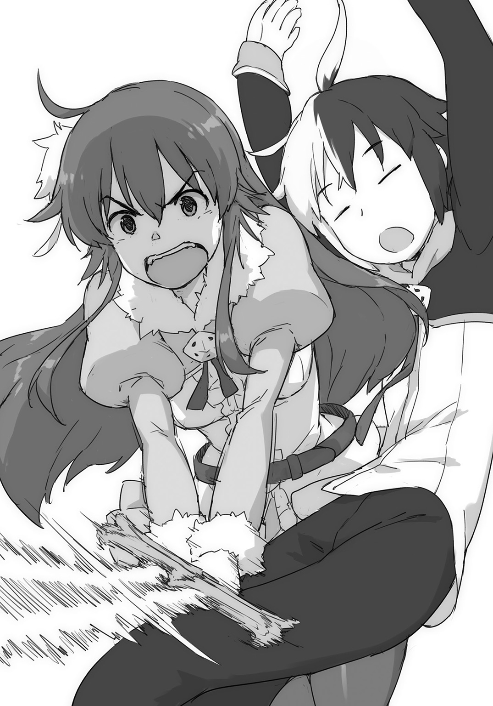
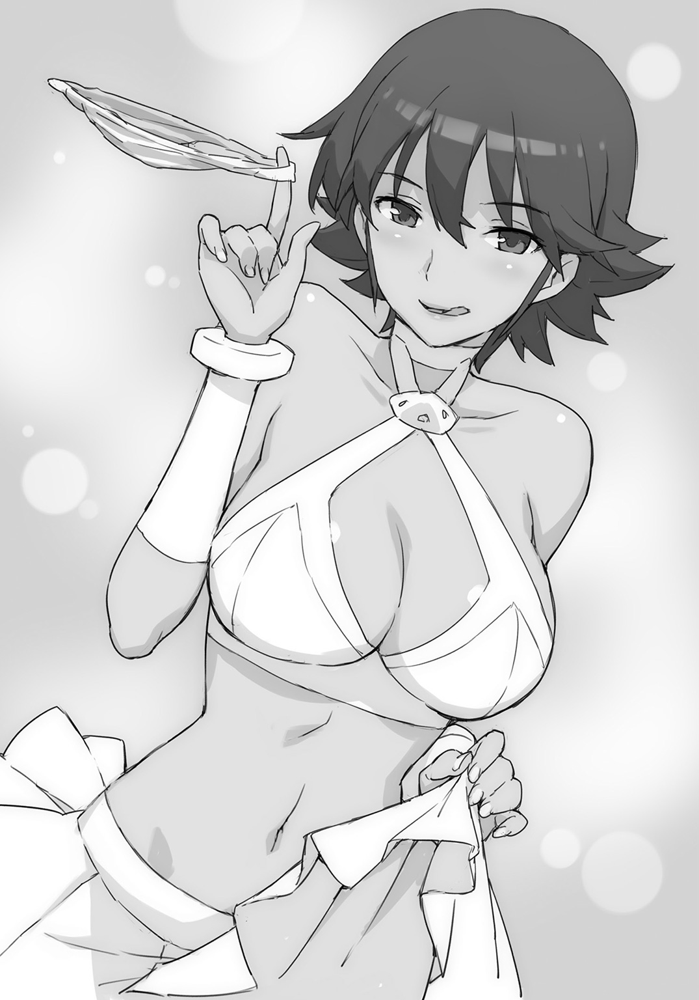
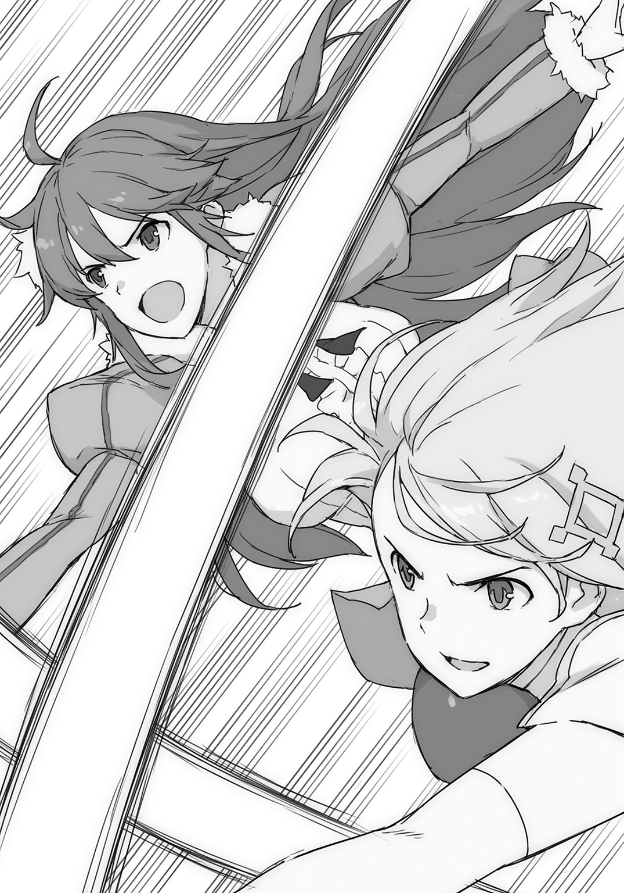

| 英雄教室 7 | |
| 新木伸 | |

この本は縦書きでレイアウトされています。
また、ご覧になる機種により、表示の差が認められることがあります。
ＣＯＮＴＥＮＴＳ
「ローズウッド学園の普通基準」
「イェシカにとって大事なこと」
「クーのお迎え」
 ダッシュエックス文庫DIGITAL
ダッシュエックス文庫DIGITAL
英雄教室７
新木 伸
第一章「ローズウッド学園の普通基準」
第一話「融合」
○ＳＣＥＮＥ・Ⅰ「いつもの食堂」
いつもの昼どき。いつもの食堂。
いつものアーネスト組のテーブルの、いつもの定位置で――。
ブレイドはいつもの通りに、カツカレーにパクついていた。
向かいに座るアーネストが、なにやら、きょろきょろと首を巡らせている。
言われてしまう前に、ブレイドは自分から言ってやった。
「いつもじゃないからな。今日はたまたまカツカレーの日ってだけで。俺はいつもいつもカツカレー食べてるわけじゃないからな」
「ええっ？ なにいきなりキレてんの？」
「キレてないし」
「そんなことぜんぜん思ってないわよ」
「うそだ。おまえはいつも、いつもいつも、俺がカツカレーを楽しく食っていると、〝まーたカツカレー？〟って言ってくるんだ」
カツカレーの皿を両腕で囲ってガードしながら、ブレイドは言った。
「べつに邪魔しないし。好きなだけ食べていればいいし。ああ――サラダも食べなさいよね。栄養のバランスが偏ってるなら、それは――言うわよ？」
「食べるし。食ってるし」
ブレイドはサラダのボウルも引き寄せた。
いらん、と、ゆーのに、オバちゃんが押しつけてくるので、いつも必ず、野菜も一山盛られている。
「ああ――そんなことより、ブレイド、イライザ見てない？」
「......そんなこと？」
ちょっと信じられないという顔をして、ブレイドは聞き返した。
この世にカツカレーよりも重要なことがあるだろうか。――いいや。ない。
「さっき、私がきょろきょろしてたのは、あの子を探していたのよ。......あの子、授業にも出てきてないらしいのよね。もう三日も。食堂にも来てないって......、ちゃんとご飯、食べてるのかしら？」
「カガク者って連中は、知的コーキシン、とかゆーのだけで生きていけるらしーぞ」
「ブレイド。貴方はカツカレーだけで生きていけそうよねー」
「言った！ おまえいま言った！ カツカレーを批判した！」
「ねえ？ 誰かイライザみた？ ごはん持ってってあげた？」
「聞けよ！」
皆がくすくすと笑っている。なぜ笑っているのか、よくわからない。
クレアが控えめに指先をあげて――。
「昨日、行ってみたんですけど......。研究が佳境だからって、追い返されちゃいました......」
「まーた、なんの研究やってるのかしらね」
「いいんだよ。カガク者はケンキューだけあれば生きていけんだよ。俺がカツカレーさえあればいいのと同じだよ」
もう何を守っているのかもわからなくなって、ブレイドが投げやりに、そう言ったとき――。
○ＳＣＥＮＥ・Ⅱ「イライザ登場」
「はいはいはい。天才が通りますですよ。すべての凡夫は道を譲りやがれです」
イライザがドヤ顔になって食堂に入ってきた。
なにやら態度がいつもの三割増しで大きい。
頭の癖っ毛が、いつもの三割増しで、ぺたんと寝ている。あれは二、三日風呂に入っていないカンジ。
それが理由なわけでもないだろうが、皆が道を開けて、イライザを通した。
誰かが椅子を引いて小さなレディを座らせる。――と思ったらレナードだ。あいかわらずレディには優しい。
イライザは皿をずいっと引き寄せると、スプーンでかきこむように、ぱくぱくと食べはじめた。
「あー、俺のー......」
ブレイドは嘆きの声をあげた。カツカレーを奪われた......。
だが、たぶん、二、三日はなにも口にしていない欠食児童を前にして、皿を奪い返す度胸は、ブレイドにはなかった。元勇者にも不可能だ。
「聞きたい？ 聞きたいですか？」
イライザが、ぎょろりとした視線とともに、そう言った。
たぶん自分がカツカレーを食い続けていることは意識の外にあるのだろう。
目線と、ぱくぱくと食べる口の動きが、まるで断絶している。
ブレイドは、きょろきょろと、誰か替わってくれる人を求めて、視線をさまよわせた。
......が、いない。〝超生物なんだからおまえやれ〟と、冷たい視線が返ってくるばかり。
「ふふふふふ......、聞きたい？ 聞きたいんですね？ このイライザ・マクスウェルの世紀の大発明を」
「いやー、べつにー、あんまり聞きたくはないけどー」
「ええ。わかってます！ わかってますとも！」
徹夜明けでハイになってるやつに、なにを言っても通じるはずがない。
会話が成立するはずもない。
「そこまで言うなら！ 語って聞かせてあげましょう！」
聞きたくなーい。聞きたくなーい。
ブレイドは耳を塞いで、いやいやをした。
イライザの新発明は、国王の「ひどく実戦的な訓練」の次くらいに、危険なものであると、皆にも知れ渡っている。
「はい。持ってきてー。持ってきてー」
イライザが後ろに合図を飛ばす。がらがらと台車を押して、助手のジェームズが、ガラスのシリンダーを運んできた。
「巨大化するやつなら、前、やったじゃーん」
皆から、ブーイングがあがる。言ってやれ言ってやれ。
そのガラスのシリンダーは、以前、クレアを巨大化した発明品だった。
巨大化するというだけで、たいしたことはなかった。
対巨大生物用の闘法を皆にレクチャーできたのと、あと、街の土木工事業者が、大変、うるおったくらいだ。
「この発明は、そもそも、巨大化するためのものではなくて、物質転送技術の試作品だったんですよ。人間でも物資でも、遠方に一瞬で遅れたら、すごく便利ですよね？」
「おお。なんか狂科学者が、まともなことを言ってるぞ」
ブレイドは皆に同意を求めた。皆もうなずく。
いま言っていることは、すごく、まともっぽい。
国王の話の一部が、すごく、まともっぽいのとおなじくらい、まともだ。
「ただ、どうしても、構造上の欠陥といいますか。原理上の逃れようのない仕様といいますか。二つの生物が混ざってしまったときに新種誕生してしまうリスクを回避することができず――」
ほうら、なんか剣呑な話になってきた。
内容は専門的で、イマイチ、理解できないが――。
「――いっそ、発想の転換を致しまして。二つの生物を融合させる装置として、実用化させた次第であります」
「ええと......。つまり......。どゆこと？」
ブレイドは、聞いた。
つまり、ぜんぜん、よくわからなかったので、
「融合ですよ。融合っ。――って！ ああもうっ！ 凡夫にもわかるように、これ以上ないほど、平易かつ明解に説明してあげたのに。なんでわかんないですかね」
ぎらぎらとした徹夜明けの狂科学者の目で、そんな悪態をつきながら、手のほうは、ぱたぱたと別個に動いて、空になった皿のおかわりを要求している。
意識と胃袋は、やっぱり断絶したまま。
誰かが気を利かせて、カツカレー大盛りを運んでくる。それを受け取ると、また、がつがつと食いはじめて――。
「はぁ......。もう。実演してみせたほうが、早いですね」
狂科学者が、そう言った。
皆が、ざわっと、ざわめいた。
○ＳＣＥＮＥ・Ⅲ「最初の犠牲者」
「はいはい。シリンダーの片方に、誰か入って――。そしたらもう一つに、別な人、入って――」
お前がお前がお前が、貴方が貴方が貴方が、と、目線による超高速の譲り合いが行われる。
そんな皆の目線が、一点に集まってきたのが――。
「なぜ、俺を見る？」
ブレイドは、言った。
「ああ。同じくらいの戦闘力の人同士でお願いしますね。まだ試作品なんで、二人のバランスが取れてないと、結果にはコミットしかねます」
いるわけない。超生物は二匹いない。――とか、そんな声が聞こえてくる。
ブレイドから離れていった皆の目線が、次に集まっていったのは――。
「ええっ？ わ、私ぃ？ 私は――っ！ このあいだ大きくなったからあぁ！ もういいです～っ！」
クレアが悲鳴に近い声でそう言った。
いっぺんやったら二回も同じ――と、誰かが言う。
実験台の役は、今回は、クレアに決定したようである。
「まーまー。あたしも付きあってあげるからー。ね？ これ。ただ入ればいいの？」
「イェシカさんとなら戦闘力差は許容範囲ですかね。はい。円の中に立ってくださいね」
「やだ！ やめよ？ イェシカ、やめよ？ ね？ やめよ？」
「べつに死ぬようなこともないでしょ。このまえだって、結局、元に戻れたんだし」
「いーやーだー！ やーだー！」
しゅっ、と、ガラスのシリンダーが閉まる。クレアの叫び声も、かき消える。
気軽に笑顔を浮かべているイェシカと、蒼白な顔で、ばんばんとガラスを内側から叩いているクレアと――妙に対照的だった。
二人の入った二つのシリンダーが、七色の光で満たされてゆく。
皆はなにが起きるのかと、固唾を吞んで見守った。
二つのシリンダーを満たした光は、接続されたチューブを流れてゆき、もう一つ設置されていた、三つ目の――空のシリンダーへと流れこんでいった。
そして――。
ばしゅーっ、と、煙とともに開いたシリンダーから、現れたのは――。
「うわっ、ふぁーっ......、な、なにが起きたのー？ いまーっ？」
見たことのない黒髪女子が、けほけほと咳きこみながら、よろめき出てきた。
イェシカみたいな露出の高い服を着て、でも髪はクレアみたいに、さらさらストレートのロングヘアで......。
皆は、ぽかんと口を半開きにしている。
ブレイドは、その見慣れぬ女子を、じーっと見つめた。
「うん？ どうしたの？ ブレイド君？ 私の顔、じーっと見たりして？ ――惚れちゃった？」
元の二つのシリンダーを見る。何も、誰も――入っていない。
二人が消えて、この娘が現れた。容姿についても雰囲気についても、クレアとイェシカを、足して、二で割ったような感じの――。
「なーなー？ これ、イェシカなん？ クレアなん？ どっちなん？ みんな、どう思う？」
「なーにー？ どうしたの？ ブレイド君ってば？」
黒髪をさらりと揺らして、娘が言う。
ひょいっとブレイドの間合いに入ってきて、くいっと腕をからめとっていって、ぎゅむっと豊かな胸を押しつけにくる。
そこはイェシカよりもクレアよりも大きくて――だいたい二倍くらい。
これ知ってる。〝色仕掛け〟とかいうやつ。
クレアみたいな黒髪の娘が、イェシカみたいに、すごくナチュラルに呼吸するかのように〝色仕掛け〟をしてきた。
「だから。おまえ――君は、クレアなのか、イェシカなのかって、ことなんだけど」
「ええっ？ そんなこと――。そりゃぁ――、もちろん――」
と、言いかけた娘は、天井を見上げ――そして考えこんだ。
「あれ？ どっちなんだろ？ あたし......？ いえ、私......？ え？ ええーっ!?」
彼女は混乱している。
ブレイドたちも混乱していた。
一人、当然ですよ、という顔でふんぞり返っているのは、イライザだけだ。
「あの、ええと......、あた......私ぃ？ クレアでもイェシカでもある......っぽいんだけど？」
「黒髪ビッチだっ！」
男子たちの数名が、力強く叫んだ。
首を巡らせて見てみれば、数人――いや、十数人ほどの男子たちが、ガッツポーズとともに、熱く、感涙にむせんでいた。
「黒髪ビッチ様......、嗚呼......」
「ちょ！ ビッチってなによビッチって!? あたしがビッチ!? それとも私がですかっ!?」
「混ざってる。混ざってるって」
ブレイドは苦笑いして、そう言った。
なにが起きたのか。ブレイドにも、だいたい察しがついてきた。
つまりあれだ。――融合だ。
イェシカとクレアは、合体してしまったのだ。
その女の子の印象は......。もともと押しの強いイェシカのほうが前面に出てきている感じ。でも顔形やら、特に髪などはクレアのほうが強く出ていて......。
サバけてオープンな感じの正統派美少女だとか、ちょっと不思議な雰囲気にまとまっている。
男子十数名が拝むところによれば、〝黒髪ビッチ様〟となるそうだが......。
「ふっふっふ......。科学の力を見やがりましたか凡夫ども。そしてこの私――イライザ・マクスウェルを褒め称えるといいのです!!」
「おまえ。すごいな」
「ふわ......ふわぁん......、そ、それほどでもぉ～」
ブレイドが素直に褒めると、イライザはすぐに、ぐにゃぐにゃになった。
褒めろというわりに、褒められ耐性のないやつである。
「へ......、へえぇぇ......、クレアって、そうだったんだー。ふーん。ふーん。――って！ ちがうちがう！ ちがうんだから！」
こちらはこちらで、一人で忙しい様子。
クレア／イェシカは、アーネストがたまにやるような、一人ツッコミをやっている。
「ありがたや......、ありがたや......、黒髪ビッチ様がご降臨召された......」
「なーなー？ そんなありがたいものなのか？ 黒髪......びっち？ とか、ゆーのって？」
拝みつづけている男子たちに、ブレイドは聞いた。
「黒髪ビッチ様だぞ！ 激レアだぞ！」
「そうなのか」
黒髪ビッチ様とゆーのは、それほど有り難いモノであるらしい。
激レアであるらしい。
「しかし、なんて呼べばいいんだ？ クレアとイェシカだから......。〝クレシカ〟かな？ それとも〝イレア〟なのかな？」
「ばかでしょ。ブレイド。名前まで合体させりゃいいもんでもないでしょ」
「いいじゃん。なーなー。どっちだと思う？ ――アーネスト」
「ええっ？ じ、じゃあ......〝クレシカ〟のほうっ？」
「ってことで――。〝クレシカ〟で決定で」
「それはいいけど。......なんで私？ 拝まれちゃっているの？」
統合が進んで落ち着いてきたのか、〝クレシカ〟は意外と平静に、そう言った。
「さあ？ 黒髪ビッチ教とか、なんか、そんなんらしいぞ？ 激レアらしいぞ？ モエー、とかいう教義なんじゃないのか？」
〝萌え〟という概念は、ブレイドには、まだ難しい。
一般道を極めつつあるブレイドであったが、〝ハァハァ〟あたりまでには手が届いても、その先となると、日暮れて道遠しである。
「ふうん？ なんかよくわかんないけど。つまり......。私にグッときてる？ ――ってこと？」
「さあなー。〝グッとくる〟――も、俺、よくわかんねーんだよなー」
「〝グッとくる〟――ってのはね。つまり。こういうことよ？」
クレシカは、ブレイドの膝の上に、すっ――と、ごくあたりまえのように座りにきた。
長い黒髪の先を手に取ると、その毛先で、ブレイドのほっぺたあたりを、こちょこちょとくすぐる。
「黒髪ビッチ様ッ！ 嗚呼！ ビッチ様アァっ！」
「あーもう、そこ、うるさい。――正座」
「ハハアッ！」
男子、十数人が、一斉に正座する。
「うっわー......っ、イェシカ......じゃなくて、クレシカ。ビッチ度増してるわー」
アーネストが言う。指先を口にくわえながら言う。
「もう。アンナも、それ言ったぁ」
「ごめん。クレシカ」
もうすっかりクレシカで定着した。本人もまわりも慣れてきた。
半分ずつ混ざったクレアとイェシカのどちらの要素も、ともに、トモダチのものであるから、クレシカもやはり〝トモダチ〟だった。
○ＳＣＥＮＥ・Ⅳ「二組目の犠牲者」
「じゃ。つぎ。だれやんのー？」
ブレイドは軽い感じで、皆に聞いた。
なんか。これ......。おもろい！
「あ、俺と――」
「オレオレオレ！」
クレイとカシムの二人が名乗り出てくる。親友だけあって意気投合してシンクロしている。
「俺とカシムが融合したらさ――」
「オレとクレイが融合したらさ――」
なんか二人で同じことを言いかけて――。おたがいに口をつぐみ――。目と目で譲りあって――。
そして笑いあって――。二人一緒に、口を開く。
「俺――もっと強くなれないかな？」
「オレ――もっとカッコよくなれねっかな？」
まともな理由のほうを口にしたのはクレイ。
不真面目な理由のほうを口走ったのはカシム。
二人、顔を見合わせて――。
「いやいやいやいや！ 俺！ そんなカッコよくなんてないから！」
「イヤイヤイヤイヤ！ オレ！ そんな強くねえし！」
「黙れこの、すっとこＢＬ二人組。とっととシリンダーに入りやがれです」
イライザが二人の尻を蹴りつけて、ガラス・シリンダーへと送りこむ。
クレア／イェシカのときと同じように、光が満ちて――。
そして一旦分解された二人が、一つのシリンダーのなかで再集合したときには――。
「おっす！ オレ！ カレイ！」
なんか、チャラいやつが、ずかずかと歩き出してきた。
自分から名乗っちゃっている。
「あー。カシムとクレイで、カレイかー。なるほどー」
ブレイドはうなずいた。
「クシム......って線もあるんじゃないかしら？」
クレシカが言う。
「どっちにしても、それ......。ちょっと情けない響きにならない？」
アーネストが眉を顰めている。
「よう！ クレシカ！ グッとくるぜ！ サイコーにイカスぜシビれるぜ！ タッちまうぜ！」
カレイあるいはクシムは――あくまでカルく自信たっぷりに、そう言った。
一人、テンションが、だだ上がりだ。
だが周囲の温度は、だだ下がりだ。
「なんかこれ。二人のダメなところばかり混ぜた感じになっちゃったわねー」
クレシカが言う。アーネストがうなずく。
ちょっとキタナイモノでも見るような目つきで、女子一同が、カレイを見やる。
「このイライザ・マクスウェルがいかに天才といっても、混ざりあったその結果までは知ったこっちゃありませんね。混ざり方によっては失敗バージョンも有り得ますよ。どっちの素材も、普段みせている美点のほうが劣勢要素で、汚点のほうが優勢要素だったんじゃないんですか？ 上手くいけば真面目でカッコ良くて強い――になったのかもしれませんが、はい、ご愁傷様でしたね」
製造責任者のイライザが、そんなことを言っている。
だが、これはこれで......。いい！ あり！ おもろい！
「なあオレたち付き合わね？ オレたちだったら問題も解決するし！」
「なんの問題よ？」
クレシカが尋ねる。
「それはオレが――、カシムがクレアで、んでクレイが、イェ――」
と、なにかを口走りかけたところで――。
ぼぐぅ、と、けっこういい感じのパンチが顎に決まった。
カレイは――自分の腕で、自分の顔を殴りつけていた。
まだ統合が中途半端なのか。
口と手が意思統一されてなくて、別個に動いている。
「あらー。器用ねー」
セルフパンチでダウンしているカレイを足元に見つつ、クレシカが言った。
「ク、クレシカ......」
最期の言葉でも言い残すかのように、カレイが弱々しく手を伸ばす。
「なに？」
あくまでも手の届く距離の外から、クレシカは聞いた。
「はみ......、パン......」
それは、はみパン？ ――とかゆーのを見せろ、という要求なのか。
あるいは、はみパン？ ――とかゆーのを、してる、という指摘だったのか。
まあどちらにしたところで――。
ぶぎゅる。
踏まれた。
ちょっとヒールの入った靴で、踏みにじられた。
「嗚呼......、黒髪ビッチ様......、我らも是非......」
拝んでる信徒十数名が、なにか言ってる。
○ＳＣＥＮＥ・Ⅴ「三組目の犠牲者」
「つぎー！ つぎー！ 誰ーっ!! 誰ーっ!!」
ブレイドは膝をばしばし叩いて、つぎの犠牲者――もとい、被験者を募った。
これ。すんごく......。おもろい!!
「次は私」
名乗り出てきたのは、なんと、ソフィ。
「ソフィは誰と合体すんだー？」
見ても、ソフィのほかには誰もいない。
「この人と融合するわ」
いや――。いた。
猫が帽子みたいに、ソフィの頭の上に載っている。装備の一つに見えていただけだった。
「ニャンコ先生なのじゃー」
「うむ。ニャンコ先生であるな」
猫は、クーと魔王の知り合いらしい。そして先生であるらしい。
「え？ 猫と合体？ いやそれはちょっと......」
イライザが難色を示すと、皆が、声を揃えて――。
「イライザの天才なとーこ！ 見ぃーてみたい！」
「ははは。この私。天才、イライザ・マクスウェルの辞書に、不可能の文字はありませんよ。――ジェームズ。調整して。ほら。はやくする」
助手がてきぱきと文句の一つも言わずに働く。
二つのシリンダーからの光が合わさり、一つに混じりあう。
「にゃん♡」
招く手つきで、ソフィが猫のポーズをする。
いつか着けてた猫耳と猫尻尾ではない。今日のそれは、自前だ。本物だ。
あと表情がある！
ソフィなのに！
なまめかしく、ぺろっと口のまわりを舐めてたりする。
とか思えば、くんくん、すんすん、と鼻を鳴らして、隣のテーブルに行って――。誰かの食べかけの魚料理を、ぺろっとたいらげてしまった。
なんかもう。関心が完全に、よそに移ってしまった。
ニャンコ先生と合体して、かわいい、ニャンコモードを披露するはずが、もうぜんぜん忘れている。
まったく猫だ。猫きわまりない。
「ソニャンコ先生～、ほらー、猫じゃらしなのじゃー」
クーが猫じゃらしを持って、ソフィを呼ぶ。
ああ。ほら。行っちゃったよ。
しかし。おもろい。これ。おもろいー。
○ＳＣＥＮＥ・Ⅵ「四組目の犠牲者」
「つぎ？ だれっ？」
「ブレイド。貴方ね。人を混ぜて遊ぶの。おやめなさい」
「だって。おもろいし」
「おもしろくない。――ほら。イライザも。このへんでお開きにしなさいって」
「いえ科学の発展のために、ここはもっとデータを。こんな人体実験を公然とできる機会なんてそうはないですし」
「いま人体実験とかゆった？ 見なさいよ、もう――。ほら収拾つかなくなってきてるでしょ。しっちゃかめっちゃかでしょ」
アーネストが顎でしゃくる。
十数人が正座して、黒髪ビッチ様に踏まれるための順番待ち。
カレイは女子たちに五メートル以内に近づいてもらえない。カシムのときには二メートルだったので、二倍以上の劣化をみている。
ソニャンコ先生は、喉の下を撫でられて、にゅーっと首を伸ばしてうっとりしている。
「科学者なのに理性ないわね。ほんと本能に忠実よね。国王みたいね」
「それ不敬では？ いま呼び捨てしませんでしたか？ あと言わせていただきますが、国王の同類扱いはともかく、科学者に理性など不要です。昔のエライ狂科学者もそう言いました。知的探究心さえあればいいんです。――ということで。次。誰ですか？」
「はい。はい。はいはいはい。次はぜひ、ハイスペックな私と、あとそれから――」
「俺は嫌だからな。死んでも嫌だ。てゆうか死ぬぞ？ 死んで回避するからな。ぜってー死んでやるからな」
ブレイドは、つーんとそっぽを向いて、そう言った。
誰がイオナと融合なんかするもんか。
べーっ、べっべっ！
ばーか。ばーか。ばーか。
「マスターじゃないですよ？ マスターと合体しちゃったら、マスターに撫で撫でしてもらえないではないですか」
「え？ ちがうの？ ――って！ 撫で撫でもしねーよ！」
「いいじゃないの、撫でてあげるくらい。添い寝はアウトだけど撫でるくらいなら、やってあげなさいよ」
アーネストが言う。
「ほら。本妻の許可が下りたぞ」
魔王のやつも言う。――〝ホンサイ〟ってなんだ？
「ちっ。......こいよ。しょうがない。......一回だけだからな」
「いえ。お断りします。実力で勝ち取った〝撫で撫で〟でなければ意味などありません。強制されたマスターの口から告げられる愛の言葉など、私は欲しくはありません」
「誰が愛の言葉なんか言うっつーた」
やっぱ。やめだ。撫でるのも、してやんない。
だいたい〝愛〟っての。よくわかんない。トモダチとしての〝好き〟と、違う種類の〝好き〟ということだけはわかっているのだが......。
「私は今回の件が始まってから、ずっと――。陽電子頭脳をフル回転させて仮説を検証してきました。いつもマスターから酷い仕打ちを受け続けている私ではありますが――」
「自覚はあったんだ」
「もう！ ブレイド！」
言ったら、アーネストに叱られた。
「だってこいつ！ こいつがさー！」
「黙って聞く。まだ話の途中でしょ？ ――で、なんだっけイオナ？ ハイスペック機である、貴女が、どうしたの？」
「いえ。〝ハイスペック機〟のくだりは、本会話ではまだ言っていませんが――。つまり、結論からいいますと、学園随一の愛されキャラである、〝ある人物〟と融合を成功させたなら、私がマスターからの自発的〝撫で撫で〟を勝ち取る蓋然性は、極めて高いと結論せざるを得ません」
「ある人物......って？」
ブレイドは、おそるおそる、聞いてみた。
――が、ブレイド以外の全員は、もう〝答え〟がわかっているようで、皆の目は、ある一点に向いていて――。
「――ん？ 我？ なのかー？」
クーが自分の顔を指差して、きょとんと、小首を傾げている。
ツインテが、右と左とで、違う角度に流れていて――。
〝親さま〟として直してやりたい衝動に駆られる。
超！ ――駆られる。
「はい。是非。是非。お願いします。――愛されキャラであるクーと、足して二で割って薄めれば、マスターの拒絶閾値を突破できる可能性が、極めて高いのです」
「やめろ。クー。......それだけはやめろ！」
「ほら誰かブレイド取り押さえて。――もうこの際、もっと、しっちゃかめっちゃかになればいいのよ。いいわよ。私が許可するわよ」
「だめだー！」
「はいご褒美欲しいコー、がんばってー」
黒髪ビッチ様の忠実な手下として調教済みの男子、十数名が、一斉にのしかかってきた。
超生物といえども、数秒、動きが取れなくなる。
「いいですか？ クー？」
「いいのじゃー。我も、イオナは大好きなのじゃー」
「ありがとうございます。ではシリンダーにまいりましょう。――足元。気をつけてください」
「れっつのごー！ じゃー！ ふゅーじょん？ ――するのじゃー！」
二つの光が、ひとつにまとまる。
ハイスペックな柳腰を振って、シリンダーから、歩き出してきたのは――。
「でへへ」
黄色いツインテールの、グラマラスかつハイスペックなボディの持ち主は、ブレイドを見るなり、「でへへ」とか笑った。
まずそこに生理的嫌悪感が生じた。
「親マスターさまー。我じゃー、いろいろあちこちがハイスペックで、でっぱってるー、クオナなのじゃー」
クーとイオナが合体して、〝クオナ〟となって、ブレイドに迫ってくる――。
「我はー、親マスターさまに、撫で撫でしてもらうためにー、がんばったのじゃぞー？ 親マスターさまー、セ、キ、ニ、ン――とって、とってー。......でへへ」
また「でへへ」とか言った。
ぞぞぞぞぞ。――と、ブレイドは総毛立った。
「ねえ......」
アーネストが二の腕を押さえながら――誰にともなく口を開く。
「なんか......、これって......」
誰にともなく、問いかける。
「クオナっていうよりも......、これって......」
「ああうん。そうよね」
うなずき返したのはクレシカ。
みんなが怖気立っているなかで、ただ一人、面白そうに笑っている。
「これはどっちかっていうとぉー、〝クオナ〟より、〝イクー〟って感じのほうよねー」
イオナとクーとで――〝イクー〟。
「ああ。うん。そんな感じっ......」
鳥肌をさすりながら、アーネストがうなずいた。
「おっ――おい！ どーすんだよこれ！ おまえがけしかけたんだぞ！ けしかけたんだからなっ！」
「頭、撫でてあげればいいじゃないの――それで収まるはずよ。......はずでしょ？」
「親マスター！ 親マスター！ 親マスターさまー！ は、や、く、なのじゃー！ ......ぐへへ」
〝でへへ〟が〝ぐへへ〟に、グレードアップした。いや。グレードダウンか？
「親マスターさまー、はーやーくー、ちゅー、してほしいのじゃー！」
「グ――!! グレードアップしてるだろ!! アタマ撫で撫でのはずだろ！」
「ちっ。......それでもいいのですじゃー。はやくー、なーでー、なーでー！」
愛され生物クーと、少女擬態の怪ロボットの、あからさまに失敗したほうの混合物ではあるが――。
やはりそこはかとなく、半分くらいはクーであるわけで――。
突きだされた頭に対して、手が無意識のうちに条件反射的に伸びて――。
しかし、やはり無意識のうちに条件反射的に、抑制もかかる。
相反する力で腕が震える。筋肉が断裂を起こしそうだ。
無限とも思える時間の、せめぎ合いの果てに――。ブレイドは――。
撫で撫で。
「うわーい♡」
このときの笑顔ばかりは、嫌なところは、どこにもなくて――。
「親マスターさまー。しゅきしゅきー！ ――ちゅー！」
「それはやめろ」
張り手をかます勢いで、迫ってくる顔面を押しのけた。
タコの口みたいに突きだされた唇を、遠ざけねばならなかった。――全力で。
「はい。じゃあ。もうこれで全部ねー。おわりおわりー。終了ー。はい。撤収ー。......って、もう午後の教練の時間に割りこんじゃってるじゃないの」
アーネストが、ぱんぱんと、手を叩きながら言う。
許可出したの自分のくせに、誰か他の人のせいであるかのように言う。
融合していた者は、元に戻るために機械の前の列に並ぼうとして――。
○ＳＣＥＮＥ・Ⅶ「最後の犠牲者」
「あれ？ おい？ もうおしまいなのかよ？」
「えっ？ だって――もうだいたい一通り、やったでしょ？」
「いや。まだ残ってるだろ。いちばん、おもろいのが」
「おもろい？ ......ああ、レナード？ べつにレナードなんてどうでもいいでしょ」
傍でレナードが、がっくりと地面に手足をついている。
「だいたい誰と合体させるつもりよ？ ......国王？ いやよ？ 胸毛・オン・ザ・レナードとか、わたし――、斬っちゃうわよ」
かと思えば、がばっと希望を顔に宿して復活して、「胸毛、ナイヨ」と、アーネストにちょうど聞こえないくらいの声の大きさでアピールしている。
「いや。レナードとか、どうでもいいから――」
言ってから、ブレイドは気がついて、傍らのレナードに、「ああごめん」と声をかけた。
誰に謝っているの？ とかいう顔のアーネストに視線を戻すと、ブレイドは、ちょっと真摯な顔になり――。
「おまえの融合。見てみたいかな......と、思ってさ」
アーネストに、真顔で、そう言った。
「え、えっ......？ そ、そんな......っ......。急に、そ、そんなこと言われてもっ......、こ、困るっ！」
アーネストは赤い髪の毛先を、くるくると指先に巻きつけた。何度も何度もそれを繰り返す。
そして、その最中に、ちら、と、ブレイドのほうに目線を送る。
「いや。いちばん。おもろい。ぜったい。おもろい。俺は知ってる。俺にはわかる。確信がある」
「だ、だ、だ......、だからねっ、そんなこと言われてもねっ。こ、困るんだからっ」
「いいや。俺はおまえを信頼してる。きっとやってくれる」
アーネストは、こうして頼み続けていると、最後、ぐずぐずになって、結局、「うん」と言ってくれるのだ。知っているのだ。
ブレイドはアーネストのその点を〝信頼〟していた。
「し、しないからねっ！ そ、そんなこと言って褒めたって――、なんにも出ないんだからっ！」
「いいや。出る。きっと出る。なにか、おもろいのが、ぽんと、あそこから合体して出てくる」
「だ......、だいたい......、融合するっていったって......、だ、誰とすればいいのよ？」
「そりゃ、おまえと戦闘力が見合うやつっていったら......」
「わたくしの出番ですわね」
静かに食後の紅茶をたしなんでいたルナリアが、ことん、と、カップをソーサーに戻して、そう言った。
「世俗のつまらない座興に興味も関心もありませんので、なにも気にしていませんでしたが。......ええ。我が師にして将来の伴侶予定のブレイド様のご用命でしたら、このわたくし、なんだって、いたしますわよ？」
〝師〟――ってのは、あれだ。まえに特訓をつけたので、まあ、そう呼ばれるのも仕方がないともいえる。
しかし〝伴侶〟って、なんだっけ？ ああ......、たしか、あれだ、〝ケッコン〟とかいうやつだ。それの難しい言い回しのほうだ。
ふうん。そうなんだ。将来予定だったんだ。
ま。いっか。
「――で、どうなん？ ルナリアは、やってくれんの？」
「ええ。もちろん。ブレイド様を愉しませるためでしたら、このわたくし。ルナリア・シュタインベルク。鈍足ド根性カタツムリとも融合してみせますわ」
花の微笑みを、ブレイドには返しつつ――。
ルナリアは、アーネストに一瞥をくれた。
「ですが......、さっきから聞いておりますと。そこの鈍亀は、やるのやらないの、困るの困らないのと、ぐずぐず言うばかり。まったく才能もないうえに決断まで、なにもかもが、のろくさい。――ああ、いやですわね。――わたくし。天才ですので。決断は早いですわよ。そこのビビって尻込みしているヘタレと違って」
「誰が、ビビっている、――ですって？」
ぎぬろ。
久々に放射された眼圧も――だが、天才は涼しげな顔でかき散らした。
無動作で、物理的圧力さえ伴う気を、平気で受け止める。
常人なら縦回転して吹っ飛んでゆく威力を、完全に、相殺する。
うん。やっぱ。二人は拮抗している。
「ほら。はいって。はいって。みせて。みせて。おもろいの」
ブレイドは二人をせかした。
きっと。おもろい。ぜったい。おもろい。いちばん。おもろい。
......そのはず。
「も、もし......、へ、へんなのになっちゃっても......、わ、笑ったりしたら......、いやよ？」
アーネストが最後に言い残して、シリンダーに消えてゆく。
光が満ち、二人の体は本当に消え――そして一つになった。
ばしゅー。
噴き出す煙とともに、歩き出てきたのは――。
なんか、めちゃくちゃ、自信に満ちあふれた顔つきの美少女だった。
正直。〝美〟っていうのは、ブレイドには、じつはまだよくわかっていないのだが......。〝カッコいい〟というのなら、ちょっとはわかる。
そして〝カッコいい〟は、大雑把にまとめると美徳のうちに入り――。よってカッコいい女は、美少女と呼んでもさしつかえないのではあるまいか。
――と、そう思う。
「おー。カッケー」
「あら。これ。成功したほうの融合じゃない？」
別な意味での成功例のクレシカが、数割増しでくびれた腰に手を当てつつ、そう言った。
「自信家なところが。二倍。......いえ。二乗？」
「ふっ。......わたしたちを誰だと思っているの？ 当然でしょう」
髪を払って、彼女は言う。
その髪の長さと、髪型は、ちょうど二人の中間ぐらい。肩を越える程度の長さを持つ髪は、左右で色が違っていた。
片側が赤く、もう片側は白い。
「俺とおんなじ！ ――ほら。俺は黒と白だけど！」
ブレイドは、自分のメッシュになった髪をつまんで言った。
こっちの白いのは、魔王と相打ちになって力を失った時の後遺症だが――。
「えっ？ おんなじ......ですの？ あっ......、そ、そんなぁ......。嬉しい......かもですわ」
「ぐにゃぐにゃ具合と、乙女っぷりも二乗かしらね」
クレシカが言う。たしかに、彼女はぐにゃぐにゃになっていた。
「なーなー？ これは、なんて呼べばいいんだ？」
「ルーネスト？ それともアナリア。......うしろのほう、ちょっとエッチかも？ やーだー！」
黒髪ビッチ様がそう仰る。なぜ〝えっち〟なのかは、ブレイドには、まったくよくわからない。そもそも〝えっち〟が、よくわからない。
「ルーネスト？ アナリア？」
ツートーン美少女の、左右のこめかみ、それぞれに、ぴきぴきと青筋が浮かんだ。
青筋だけは、左右どっちも、同じ青い色だった。
「な！ ぜ――!? 〝ア〟の文字が先頭になっているんですの！ そして！ な！ ぜ――!! 〝ル〟の文字が先頭になっているのよ！」
「いや、そりゃ。――どっちかが、先頭になって、どっちかが後ろになるしかないだろ。しかたないだろ」
「――いいえ！ ――ふざけんな！ それだけは絶対に容認できませんわ。世界がＹＥＳといってもわたしはＮＯと言うし！」
「ほらー。分離しかけてるわよー。ルーネストー、ないしは、アナリアー」
「だ――！ か――！ ら――！」
赤と白の髪が、ざわりと物理的に動いて、天を衝いた。
「ルーネストって！」「アナリアって！」
一つの口から二つの声が同時に響く。
「呼ぶなあああぁ――っ!!」
そして――。
「だいたい!! あんたが――！」
「あなたこそ――！」
「なんであんたなんかと！ 合体なんて――!!」
「それはわたくしの言うことで――!!」
右手と左手が別々に動いて、それぞれのほっぺたをつねりあう。
「あー、ハイハイ。喧嘩しないでくださいね。すぐに戻してあげますから。ほら。入って入って。ここに入って。ほらはやく」
イライザが手招きする。
だが、ルーネストないしアナリアは、まったく聞いちゃいなくて、左右の半身同士で争いを続けている。
「あんたが――!! あんたがっ――!!」
「あなたが――!! あなたがっ――!!」
つねり合いから、殴り合いになった。
左手と右手で、ぼかすかと自分の顔を殴りつける。
ブレイドは、すっごく、おもろかったが――。
さすがにちょっと止めたほうがいいかなー、と、思いはじめた。
美少女の顔の形が目の前で変わってゆくのは、さすがにちょっと、元勇者でも引く。
――と。皆を振り返って見ると。
蒼白になってドン引きしていた。
ここは〝ちょっと引く〟ではなくて、〝激ドン引き〟が正しいリアクションだった......。
ブレイドは自分の〝普通力〟を、修正した。
「おい......、ちょっとやめとけ。シャレにならねーから......」
ブレイドは止めに入った。
皆を、ちら、と、振り返ってみると――。うんそう！ 早く止めてあげて！ って顔が返ってきたので、自分の〝普通力〟に確信を深めた。
「おい。おまえら......っていうか、おまえ？ いいかげんに――」
つかつかと歩み寄ると、ブレイドは、二人の――てゆうか、まあ、一人なんだけど。
ともかく、左右の手を、それぞれ、摑んだ。
「――うっさいわね！」
「――下がっていてくださいませ！」
振りほどかれた。パンチがきた。ダブルできた。
いちおう礼儀として、あえて頰に食らって、あえて縦回転して、吹き飛んでおいた。
いちおう形式的には止めに入ったので、皆も、ブレイドの〝普通力〟を確認してくれたことだろう。
吹き飛ばされて、テーブルの残骸をベッドにしている格好で、ブレイドは〝続き〟を見物した。
二人はもう殴り合いの段階を越えていた。
なんか、左右の手のそれぞれで、おたがいの体を押しのけ、遠ざけようと――。
しかし当然ながら、体は一個しかないわけで、だからそれは、つまり――。
めり。......とかいう音が、どこかから響いた。
人体でいうところの、正中線――。ちょうど体の左右の中央のところに、一本の赤い線が走っている。
「ヒぃ――！」
気の弱い女の子が、息を吞む声が聞こえてきた。
――と思ったら、それは女の子ではなく、男の子の声だった。しかもけっこう多かった。ぶっちゃけ全員に近かった。
ま。どっちでもいいが。
気弱な皆は、ヒィヒィ悲鳴をあげつつ、腰を抜かしつつ――、体が左右に分かれてゆく様を、見ていた。
ブレイドもテーブルの残骸に身を横たえたままなので、これは〝腰を抜かした〟のと同じ扱いになるはずだ。
べりべり。めりめり。ばきばき。
べりべりは、肉と組織が引き剝がされる音。
めりめりは靱帯が引き裂かれる音。
ばきばきは、骨が砕かれてゆく音。
ブレイドは、おもろく、見つめさせてもらった。
みずからの手によって、左右に引き裂かれてゆく肉体を見ながら、その脳裏に浮かぶことは――。
器用だなー、とか。
二人ともそんなに相手が嫌いなのかー。意気投合してんなー。一周回って、これって好きあってるっていうレベルじゃね？
......だとか。
だいたい。そんな感じだった。
べちゃって、音がした。
ついに体が半身に分かれた。真ん中に脊髄だかなんだか、縦に連なる骨が一本残っているので、これは三枚下ろしというやつだ。
そういえば勇者時代に、三枚下ろしにする必殺技の剣士が、仲間にいたっけー。
こういう断面の感じは、よく見せられた。よく知ってる。
勇者業界では、わりとよくある。
「ク――クレア！ ふ――復元っ！ 早く直してあげて！ し――死んじゃう!!」
クレシカが錯乱して、首を振り回している。クレアの姿を必死に探す。
だが融合しているのだから、当然、どこにもいるはずがない。
そのくらい錯乱しているということだ。
「医――医者!! 医者を！ 女医さんを――!?」
イライザも、ガクブルと震えて、誰にともなく叫んでいるばかり。
医者よりスゴイ狂科学者なら、そこにいるというのに。
まだ、かろうじて生きていて、びっくんびっくん動いている、半身に分かれた二つの肉塊を、この世に繫ぎ止めておくための生命維持装置くらい、この場にある素材で、でっち上げられるだろうに。
まあ、しかし――。
生命維持装置とか、復元能力とか、そもそも、必要ないわけで――。
「よいしょ」
ブレイドは瓦礫の合間から、体を起こした。
どっちがアーネスト側で、どっちがルナリア側になっているのか、どっちも血肉でまっ赤っかなので、判然としがたいが――。
白い頭蓋骨の端に、わずかにへばりついてる毛髪の色から察するに、こっちの白い髪のがルナリアで、赤いのがアーネスト側だと、あたりをつける。
「おい。二人とも。起きろ」
床でぴくつく、二つの肉塊に、ブレイドはそう声をかけた。
「な......っ!? 無茶だぜ!? ブレイド！ し、死んでるからっ......」
「まだ死んでないし。すこし動いてるし」
カレイに言った。
「あと。勝手に殺すな。――死んでるかどうかは。こいつらが決めることだ」
「んな!? 無茶な」
「アンナーっ、ルナリアーっ、......先に生き返ったほうを、ブレイドがお嫁さんにしてくれるってー」
平静を取り戻したクレシカが、二つの肉塊に、向けて、そう声をかけている。
〝オヨメサン〟って、なに？ ブレイドが、そう、聞こうと思った瞬間――。
ばしゅーっ！ ――と、二つの肉塊から、それぞれ、炎と氷とが、噴き上がった。
片方は燃えつき、片方は氷結しつくす。
炎の魔人化。そして氷の魔人化。
二人の魔人が、そこに立っていた。
肉体の損傷は、物質的な体を脱ぎ捨てた時点で――魔人となった瞬間に、チャラとなる。
三枚に下ろされて、ぴくぴくしてる肉塊となっていたとしても――なにも問題ない。
ブレイドはそのことを知っていたから、べつに慌ててもいなかったわけだが......。
皆は――？
ちら、と、見てみると――？
なんか、おしなべて、一様に、石像みたいな顔になっていた。
「あーあ......、自力で戻っちまいやがりましたよ。根性で。まったく科学をなんだと思ってやがるんですか。こいつら自力で融合だって、できるんじゃないんですか？ 根性でできるんだったら、科学、いりませんよね。必要ないですよね。あーあ......」
イライザが呆れを通りこして、疲れた響きの声で言う。
二人を戻そうとして機械をスタンバっていたのだから、うん、イライザはかわいそう。
「はい。そっちの四人ないしは四組も。自分らで戻って戻って。根性で」
「無理無理無理」
「ないないないない」
「むりニャー」
「ハイスペックにも程がありますじゃー」
クレシカ。カレイ。ソニャンコ先生。イクー。
――四人が、手を、ぱたぱたと振り返した。
《私のほうがッ！ ゼロ・コンマ・一秒！ 早かった！》
《何言ってるんですの！ 凡人が天才の先を行くわけがないでしょう！ ゼロ・コンマ・一秒早かったのは、わたくしですわっ！》
炎の魔人と、氷の魔人とは、殴り合いを続けていた。
当然。殴り合うたびに対消滅してゆく。
「おーい。おまえらー。消えちまうぞー？」
《ブレイドは関係ないんだから黙ってて！》
《――ですわ！》
関係ないのか。そうか。
なんか。俺の......、なんだっけ？ オヨメサン？
早かったほうが、それになるとか、ならないとか、そんな話だった気がするが。
ま。関係ないなら。いっかー。
ブレイドは手を頭の後ろで組んで、魔人同士の殴りあいを見物した。
これはこれで。おもろい。
今日はいろいろ、おもろかった。
楽しかった。
ローズウッド学園には、今日も、平和なひとときが流れていた。
第二話「普通生物ブレイド」
○ＳＣＥＮＥ・Ⅰ「学園長室」
午前の光が、穏やかに差しこむ学園長室で、アーネストは薄い微笑みを浮かべていた。
巨大なデスクの向こうに座る巨漢は、書類のいくつかにサインを走らせたあとで、アーネストに向けて、目を持ちあげた。
「うむ。プランは見せてもらったよ。――たいへん、良い出来だ」
「恐れ入ります。それでは〝仕様変更〟の承諾を頂けると嬉しいのですが」
「うむ。当然だ」
国王は、書類に手のひらを押しあてた。他の書類にやっていた通常のサインではない。〝王紋〟と呼ばれる、王家の者のみに発現する、掌に浮かぶ紋様を、書類の紙面上に焼き付ける。
単なるサインでは役所が動くだけだ。
だが〝王紋〟があれば、王国の地下に埋没する古代の機構が稼働する。
「仮象の設定変更に関する、限定承認を与える」
「は。――ありがとうございます」
アーネストは書類を受け取った。
「アーネスト君」
「は。――なんでしょう？」
「君も、まったく、悪だね」
「いえいえ。陛下には及びませんわ」
アーネストは花の笑みを国王に贈った。
「愉しみたまえよ」
「もちろんですわ♡」
アーネストは、学園長室をあとにした。
○ＳＣＥＮＥ・Ⅱ「仮象教練」
いつもぽかぽか。
仮象のファンシーワールドは、いつもいいお天気だった。
リアルでは今日は曇りだったのだが、こちらでは、雲一つない快晴だ。
気温もちょうど。湿度もちょうど。お天道様に照らされたときに体感温度としてはぴったりで、日陰ではちょいと涼しくて気持ちいいくらいの、そんな案配だ。
なにもかも、すべて調整できる世界なのだから、もちろん、そうしているわけだ。
あー、こんど、嵐の中とか、拳大の雹が降ってくる中とか、数秒ごとに雷が落ちる中とか、そんな中でも、訓練せんと、〝リアル〟じゃないよなー、などと、ブレイドが思っていると。
「アテンション」
遅れてやってきたアーネストが、仮象の世界に現れるなり、そう言った。
駄弁っていたり、準備運動をやっていたり、地面（ここはお菓子の世界だ）を食べていたりする皆は、女帝の声にしゃんとなって、整列をした。
「みんなー、喜べー。許可、おりたわよー!!」
「おー!!」
女帝が言う。皆が喜ぶ。
ん？ ん？ ん？
一人、取り残されてるブレイドは、きょとんとしていた。
なんの〝許可〟がおりたって？
なんでみんな、そんなに喜んでんの？ 男子なんか、うぇーい、とか、ウエーブをやっているし......。
「なーなー。なんの許可なん？」
ブレイドは、隣にいたイェシカの手首を握った。ぶんぶんと振って、教えてくれと催促してみた。このあいだ〝デート〟というのをやってから、イェシカへの心理的距離が縮まった気がする。
元から〝トモダチ〟ではあったけど、いまではそれ以上だ。
「設定変更よ」
「なんの設定？」
「ふっふーん......、すぐにわかるからー」
ブレイドの顎を一撫ですると、イェシカは行ってしまった。
撫でられた顎をさすり、さすり......。指先の感触が消えるまで、ブレイドはイェシカの背中ならびにお尻のあたりを眺めていた。
アーネストやらイェシカやら、イライザやらイオナやらが集まって、あれこれやっている。
「ゲインはそのくらいでいいはずですよ」
「えっ？ うそ？ それ低すぎない？」
「一般人、ってのは、こんなもんです」
「だけどそれじゃイライザ。貴女並の数字よ？」
「喧嘩売ってますか？ 売ってますね？ 科学者の基礎体力舐めんなですよ。一般人程度で、すいませんでしたね。だから私は魔法以外はからっきしなんですってば」
なんか、ゴニョゴニョ、話しあってる。
紙から地面に王紋を転写して、なんか、仮象の設定をいじっている。
ブレイドは、つまらなかった。
なんか、のけものにされている。
それは俺にはヒミツなことなのか。
ふーん。いいもんねー。アリンコと遊ぶもんねー。
まえ。このファンシー世界を探ったら、お菓子の家の下に、牛くらいの大きさのアリンコがいたのだ。
ブレイドはアリンコを探しはじめた。
一人だってぜんぜん困らないのだ。
「あ。ブレイド。――ちょっとこっち来て」
「うん！ なになに!?」
ブレイドは駆けていった。
アーネストのところに行くと――。
「はい。そこに立って。輪の中に」
「立ったぞ」
「じゃあ。イライザ。イオナ。――やって」
イライザとイオナが、制御サークルを空間に顕現させて、両手を駆使して、到底、人間には不可能な速度で、なにかの操作をはじめた。
片方は人間じゃないが、片方は人間のはずなんだが......。ま。いっか。
「お？ なんだこれ？ お？ お？」
体のあちこちに魔法陣がまとわりついてくる。
「動かないの」
言われて、直立した。
腕、足、肩、腰、体のあらゆるところに、魔法陣が回っている。
ブレイドは肉体に違和感を覚えた。
体から、なんだか、力が抜けてゆくような......？
「お？ お？ お？ ......これって、なに？ エナジードレイン？」
「動かないの」
また言われた。アーネストに、また、叱られた。
ブレイドは動かないように努めた。
どんな遊びなのか、ルールはなにか、先に、教えておいてくれないとー。
魔法陣がブレイドの体のあちこちにまとわりつく。パラメーター調整が行われる。
身体各部の数値が再設定される。
いくつかの魔法陣は、あっさりと仕事を終えて離れていって――。いくつかの魔法陣は、ねちねちと執念深く、つきまとっていたが――。
やがて、すべての魔法陣が、満足したように離れていった。
「はい。完了」
アーネストが言う。
「どう？ ブレイド？ ――どんな感じ？」
「どんな感じ、って......？」
ブレイドはきょとんとしながら、自分の手足を動かしてみた。
「なんか。へんだな」
体が重い。
重力一〇〇〇倍のフィールドの中で動いているような感じ？
前に、そういう重力使いと戦ったことがある。――倒したけど。
倒されていたのなら、いま、ここに、こうして立っていることはないわけだけど。
「これどうなってんの？ どういう仕組みなの？」
この仮象世界が、重力一〇〇〇倍になっているわけではないだろう。
皆は平然と立っているから、世界の設定が変えられたわけではなさそうだ。
......いや？ そうか？
〝勇者業界〟の平均的な〝常識〟でいうなら、重力一〇〇〇倍程度でフラついているやつなんて、あんまりいないわけで......。
「私たちは普通よ。そのままよ。ブレイドだけ設定を変えたのよ」
「やっぱそっか」
「一般人と同じにしたわ。......どう、ブレイド？ どんな感じ？」
ひどくくびれた腰に手をあてて、アーネストは、すこし意地悪な笑みを浮かべている。
――が、ブレイドには、そんな表情よりも、その言葉の意味のほうが、ひどく気になった。
「一般人？」
「そ。一般人」
アーネストは、してやったり――と、笑顔を浮かべた。
「ブレイド。貴方の身体スペックを、一般人レベルに落としてやったの」
なぜだかそこで、皆が「うおー！」と歓声を上げる。どんどんどん――と、太鼓も叩かれる。
賑やかしグッズが、なぜか皆の間に出回っている。
「お......」
ブレイドの口から、思わず、声が洩れ出した。
「......お？」
アーネストが、にやりと笑いつつ、聞き返す。
「う......、うおー！」
「へっ？ う、うおー？ ......って？ え？」
ブレイドの上げる喜びの声に、アーネストは、きょとんという顔を返す。
「うおー！ うおー！ お、俺!? いま一般人っ!?」
「そ、そうよ......。一般人並よ？ ......って、ねえ、ちゃんと意味わかってる？」
「す――すげー！ すげーっ!? おおお、俺！ 一般人！ 一般人っ！ いっぱんじーん！」
「え？ え？ え？ なんで喜んでんの、こいつ？ ......ねえ誰か、説明のできる人？」
アーネストは振り返って、皆に聞く。
皆は首を横に振って返すばかり。
「すげー！ すげー！ ジャンプしても、五〇センチくらいしか飛ばねーっ!?」
ブレイドは、ぴょんぴょん、飛び跳ねた。
これがもう本当にぜんぜん！ 飛び上がらない！ 人の膝上をちょっと越えるぐらいしかジャンプできない！
「それ普通だから」
誰かがツッコむ。
「うおー！ すげー！ すげー！ 気が練れないっ!?」
体内で気を練ろうとしても、ぜんぜん、まとまっていかない。
七個あるチャクラのどの一つだって回らない。ちなみにチャクラは七個あるといわれているが、じつは勇者業界では八個目の存在が認知されていて、その八個目だって、当然、回らない。
「気が練れないのは......、ええと、普通だっけ？」
アーネストはちょっと自信なく、皆に聞いた。
下級クラスの誰だって気ぐらい練れる。
以前ならともかく、最近は、そうなっている。ブレイドが来てから、
......あ。いや。一人だけいた。
下級クラスに、一人、まだ気を使えない子がいたっけ。
「なんで私を見やがりますか？ だから私は魔術以外は、からっきしだって言ってるじゃないですか」
イライザが、ぼそっと、つぶやいた。
「こんど教えるわよ。あんなのすぐに誰でも使えるようになるから」
「どんだけ修行しても、一生、使えないっていうのが、一般人レベルですからね？」
「そ、――そうよね！ ――ほら！ ブレイド！ 気は練れないのが普通だから！ ――って！ ちょっと聞きなさいよ！ なに走り回ってんのよ！」
「す......、すんげー！ すんげー！ ......は、走っただけで！ い、息が切れるぞっ!?」
「だからそれはまったく普通だから」
「そうか！ これが普通か！」
ブレイドはハァハァ言いながらも喜んでいた。
「ありがとう！ アーネスト！ ありがとうな！ 俺！ 俺！ いまはじめて〝普通〟になれた！」
「いいえ。お礼なんていらないわ。むしろこっちが言いたいくらいよ。ブレイド。普通になってくれてありがとうね」
アーネストは、艶然と微笑んだ。
「いまの超生物氏は、もう超生物ではなくて、いわば普通生物ですね」
イライザも、にっこりと穏やかな笑顔で言う。
「おおう！ 俺俺俺！ 普通生物！ 普通生物！ 五〇センチしか飛べないし！」
「握力も四〇キロそこそこですよ」
「ほんと？ 四〇トン？」
「キロです」
笑顔が一瞬凍って、ちいっ、このクソ超生物めが。――となったが、またすぐに、笑顔にもどり。
「ありがとう。本当にありがとう。元超生物氏には、こう言いましょう。――そして、さようなら」
「ん？」
ブレイドは妙な気配に気がついた。
いつのまにか、周囲を取り囲まれている。
皆、武器を手にしている。臨戦状態だ。
「ん？ ん？ ん？」
そしてみんな、ニコニコとすごく上機嫌で、微笑んでいる。
みんなが楽しそうにしているのは、ブレイドも楽しいので、ブレイドもなんとなく笑顔を返した。
「みんなー、それじゃー、今日の実習をはじめるわよー。今日のー。ひどく実戦的な仮象訓練の、内容はー」
アーネストは満ち足りた笑顔になって――。
「ブレイド、対、全員ってことでぇー」
「うん？」
ブレイドは首を傾げた。
ようやく「ルール」を教えてもらった。
しかし――？
「なに？ 全員倒せばいいの？ デスルール？」
アーネストはにっこりと笑顔を返す。
「ブレイドの絶命回数を無限に設定」
「ん？ 俺？ 残機無限？ なんでなんで？」
この仮象の「ひどく実戦的なデスゲーム」において、ブレイドは一度も死亡したことがない。他の皆は、命が三個ルールだったり五個ルールだったりすることはある。
ルナリアを特訓したときには「残機無限」にしたこともあった。
でもブレイドは、自分が残機無限になったことは、はじめてだった。
「ま。ハンデかしら？」
「あるいは。我々のスーパーお楽しみタイムが永遠に続くため、ですかね？」
「そうとも言うわね」
アーネストとイライザの二人は、くっくっく、けっけっけ、と、笑いあった。
「はじめても、いいんかー？」
ブレイドは、そう聞いた。
「せめて武器ぐらい抜きなさいよ。そのくらい待ってあげるわよ。鬼じゃないし」
「そっか」
すごい親切だ。
勇者業界の常識では、戦いとは向き合ったその時点から始まっているものであり、武器を抜くまで待ってくれる敵なんていなかったわけだが――。
武器。抜いた。
武器。構えた。
そして戦いが、はじまった。
○ＳＣＥＮＥ・Ⅲ「実戦的デスゲーム」
最初に飛びかかってきたのは、アーネストだった。
「ハアアアァァァ――!!」
「んっ」
ブレイドは、ほとんど、なにもしなかった。
だがアーネストは、自分が斬りかかるその勢いを、ほんの数度ほどズラされて、そして縦回転しながら吹っ飛んでいった。
噴水の石組みに突っこんで、がらんがらんと石レンガを粉砕して――常人ならそれで残機が一つ減っちゃうところだろうが。
アーネストはべつに弱体設定されてるわけでもないので、まったくのノーダメージで、立ち上がった。
「ちょ――!! なによ！ なんで人様投げ飛ばすのよ！ 普通生物のくせに！」
「投げてないぞ。おまえの力をそのまま使っただけだぞ。おまえは自分の勢いで勝手に転んで、噴水、粉砕してるだけだぞ」
「だから普通生物のくせに変なことすんな！ おとなしく斬られてなさい！」
「その剣じゃ斬られてやるにも......」
アーネストが手にしているのは、練習用の剣。魔力もなんもこもっていない、単なる鋼の剣。
「《アスモデウス》――抜けよ。待っててやるから」
ブレイドはそう言った。せめて本気で《アスモデウス》を使ってくれないと。
「なに！ その！ 格上気取り！ 待っててやる――ですって？」
「おまえも、さっき、待っててくれたじゃんかー」
「あんたいま自分の立場と能力！ わかってる!? この普通生物めが！」
「そうそう！ オレオレ！ 普通生物！」
ブレイドは言った。嬉しくて、自分の顔を指差して、そう言った。
「ムカつく！ 殺す！」
なんでか、挑発と取られてしまったらしい。
アーネストは、髪を逆立てる勢いで、《アスモデウス》を抜いた。
ようやく、本気になった。
大陸に名高い魔剣を、ぶんぶんと振り回して、ブレイドに斬りかかる。
ひょい、ひょいと、ブレイドはそれを避けた。
ブレイドにしてみれば重力一〇〇〇倍感覚で、速さでは避けることができないから、アーネストの体の筋肉に指令が飛ぶ徴候を先読みして、にゅる～り、のろ～りと、一〇〇〇分の一となった感覚の、のろくさい動きで、紙一重で避けつづけた。
「避けんな！」
「だって避けないと斬られるだろ」
「斬られろ！ 斬られてよ！」
「いやだよ。痛い」
「避けてるばかり!? 攻撃しなさいよ！」
「いやー。しかしなー......」
ブレイドの手にする剣は、魔力もなんにもこもっていない、練習用の剣。
こんなんで本気の闘気に覆われたアーネストを斬りつけたって、防御障壁を超えられるわけもなし。
通用するはずもないし。
仕方がないので、ブレイドは剣を投げ捨てた。ぽいっと。
「本気ぱーんち」

「ぶへっ――！」
素手で、ぶん殴った。
剣で殴ったら剣が折れるか蒸発するのは確実なので、素手で殴った。
ただし――本気で。
アーネストは、吹っ飛んでいった。
「おー、痛え......」
ブレイドは手を振った。じんじんと痛む。
もちろん一般人の身体能力で、魔力障壁に覆われた上級魔族的存在を殴りつけたのだから、一歩間違えば、腕は爆散四散しているところだが......。
殴った瞬間、相手の魔力やら闘気やらを、反射逆転させたので――いわばアーネストは自分の防御結界の強度で殴りつけられたことになる。
あまりに強すぎる防御結界を張ったままでいると、こうやって、力もなんもない一般人並の相手に逆利用されることもあるので――要注意だ。
これ。勇者業界の常識。
コツは、魔力及び闘気の完全弾性反射。キモは、数千分の一秒単位のコントロール。――色色と、引き出しの中からスキルを持ち出してこないと、無理な芸当だ。
ブレイドはこれを五歳のときに身につけた。身につけざるを得なかった。そうでなければ、体もできてなくて、筋力もなくて、気もまだろくに練れやしない、単なる五歳の幼児が、どうして魔戦将軍を倒せるだろう？
久々に全力で殴った。マジ殴りした。「本気ぱんち」を出した。
およそ一二年ぶりぐらいに、ブレイドは、遥かに格上の相手に対して、全力を出してみた。
キモチイー！
「つぎ、誰だ？」
周囲を取り囲んでいた皆が、ずざっ、と下がった。
おまえ行け、おまえこそ行け、と、視線の譲り合いが行われた上で、一人の男が、前に歩み出してきた。
クレイだ。
剣を青眼に構え。そこから――。
「哀・ドラグスマッシュ――!!」
いきなり、最大最強の奥義を出してきた。
うん。いいぞいいぞー。
出し惜しみしないでいきなり最終奥義は、いいぞー。
なんという思いきりのよさだ。これは手強いぞー。
クレイの「哀・ドラグスマッシュ」は、以前の暴発ぎみにチビっちゃっていた不完全な威力ではなく、完全版の本来の威力を持つ技だった。
そして特筆すべきは、その気の消費量にある。
自己の消費する気の量は極小。ほとんど「ゼロ」といってよい量。カラカラに搾り尽くされて生命活動停止寸前の四分の三ミイラ状態でも、ばしばし、連発できるほど。
自己消費せずに技をぶっ放すには、どうやるのかというと――。
周囲の大気なり、大地なり、まわりに満ちる〝プラナ〟を巻きこんで、それをエネルギー源として用いるのだ。
かつてブレイドは、勇者時代に、枯れ枝みたいな体の老師が、アリエナイ量の気を使いまくるところを見たことがあるが、それがつまりクレイのやっていること（の延長線上）なわけだ。
そして、さらに――！
「哀・ドラグスマッシュ――ガトリング!!」
哀・ドラグスマッシュは、単発ではなかった。
なんと!! 連発できた!!
うおー！ ガトリング、きたー！ なんかバージョンアップしてたー！
実際に一つずつ数えてみたら、秒間だいたい二〇発ぐらいの連射をする、自己消費かぎりなくゼロの、ほとんど無限に連発できる、破竜系最小威力の一の太刀――破竜穿孔であった。
いかな最小威力の技とはいえ、竜種の外皮に穴を穿つぐらいの威力はある。魔法鎧に大穴を空ける攻撃が、秒間二〇連発されているということは、一秒で魔法鎧が五センチ未満の細片になるということだ。
普通人。ぴーんち。
一発でも当たると普通人では終わってしまうので、ブレイドは、すべて避けた。
もちろん千分の一にノロくさく感じる一般人スペックの身体能力だから、避けるといっても速度で避けることはできない。
初動と見切りを限りなく早めに決断して、一般人スペックの体で可能な動きの範囲内で、ぐにゃぐにゃと避けまくった。
脇を、首の横を、股の下を――秒間二〇連発のうちの、一発、一発が、通過してゆく。
ぐにゃぐにゃと避け続けながら、そしてブレイドは、クレイに近づいてゆく。
「く――来るなあぁぁ!!」
秒間二〇発が、四〇発になった。
なんだ。まだ上がるんじゃん。本気出せよ。とりまー。限界超えてみよう。
二〇発を超えた分に関しては、さすがに普通生物も避けきることが難しくなってきた。
なので、受けることにした。ただし普通に受けてしまえば、気もなく、防御結界なんて張れない普通人の肉体は破壊されてしまうので、普通でない方法で〝受ける〟ことにした。
顔にきた一発を、掌を額にかざして、受ける――。
その瞬間――。吸い取った。
クレイの哀・ドラグスマッシュは、周囲の外気を取り込んで撃つ技だ。
それを見て着想を得たので、いま、やってみた。
外気を取り込んで撃てるなら、撃ってきたその技を取りこんじゃうこともできるはず。
やってみたら――。できた。
一発目は、ちょっとうまくいかなくて、九九・九％ぐらいしか吸収しきれずに、〇・一ほど食べ残してしまって、普通人強度の手の皮が、めくれちゃったけど――。
二発目からはノーダメージで、一〇〇％、吸収できた。
クレイが撃つ度に、ぜんぶ吸収した。
秒間四〇発分の速度で、気が体内に溜まってゆく。
もっと撃ってー。もっともっとー。
「う――うわあああああ!!」
秒間四〇発からさらに増えて、秒間六〇発になった。
人間。本気出せば、できるものである。
たぶんクレイは自分の限界を秒間二〇発と思っていたのだろう。だが、ほんとのほんとの死ぬ気の〝真の本気〟は、だいたい、その三倍あたりの高さにある。
勇者業界の、これ、常識。
「いきなり破竜饕餮」
クレイに密着するまで接近したあと、ブレイドは、一発、技を撃った。
たくさん吸収して溜めた分で、ちょうど、破竜饕餮一発分だ。
「ぐああああ!!」
クレイは爆風のなかに消えた。
いまのクレイなら、破竜饕餮の一発くらいで即リタイヤはないだろうし。そしてべつに死んでいたって構わない。これは仮象の訓練だ。
「ちょ――!! 気は練れないんじゃなかったの!?」
アーネストが叫ぶ。こっちもやっぱりさっきの攻撃で倒れてなんかいない。
マジパンチしたのに――。
すごい。すごいすごい。壊れてない。
アーネストも凄いけど、普通生物すごい！ すごいすごい！
「ウソつき！ 卑怯よ！ 気を使えないなんて言って！ 攪乱するなんてそれでもブレイドなの!?」
なに言ってんのかわからないが、ブレイドは、言い返した。
「練れないって言っただけだぞ。使えないとは言ってない。誰かが使ってくれれば、吸い取ることで――」
「気系の技――！ 禁止イィィィ――！ みんな気をつけて！ 吸われるわ！」
「うん。そうそう。やめたほうがいいぞー」
ブレイドは、言いながら、とことこと歩いて行った。
意識の隙をついたから、アーネストの意識が認識したときには、至近距離に立っていた。
「マジキック」
蹴った。マジで。マジシリーズ。その２だ。
「ふ――ごおっ!?」
アーネストはまた吹き飛んでいった。
瘴気の鎧が自動展開されていたから、どうせまた、ロクなダメージもないのだろうが――。
「おー......、痛え」
蹴った足が痛い。なんつー硬さの防御結界だ。化け物かよ。
「さて」
ブレイドは皆に目を向けた。
アーネストが戻ってくるまでにちょっとある。
そのあいだに、すこし、間引いておくか。
「ひっ――!?」
皆は、びくっと身を固めた。
だいじょうぶ。痛くしないから。痛覚が伝わる前に終わらせるから。
普通生物ブレイドが、一歩、足を踏み出すと。
「う！ あ！ あ！ あ！ あ！ あ！ あああああーっ！」
パニックになった皆が、めちゃめちゃ、気弾を撃ち出してきた。
全員同時とか、ちょっと、カンベンしてほしい。
ちょっとは手加減してほしい。
そっちは一〇〇人以上、いるのだし――。
一人、秒間二発ぐらいずつでも、クレイの連射を余裕で越える。
「だー、かー、らー。気系の技は禁止、っつーたろー。気弾も気系だろー」
三分の一は避けて、三分の一は蹴り返して、三分の一は、さっき開発した新技で吸収した。
勇者時代には、パワーで押していけばよかったので、こんな技を開発する必要はなかった。
こうして普通生物となったことで、新たに編み出せる技もあった。
もっとやれば、もっと、なんか編み出せるかも～？
気がだいぶ溜まってきたので、身体強化に回した。
皆の間を、普通生物基準で一〇倍速ぐらいで駆け抜けて、倒せるやつから次々と倒してゆく。
吸い取った気が消えるまでには、だいたい、三分の二ぐらいは間引くことができた。
ただ活動不能に落としただけで、殺せてはいない。
さすがにみんな、最近強くなってきて、急所に致命傷をそうそう入れさせてくんない。
「あー、もう、気がなくなっちゃった」
気を使い果たして、完全な普通生物に戻ってから、ブレイドはそう言った。
「ほら。撃って撃ってー。また撃ってー」
さすがに、もう、誰も撃ってこない。
「マスター。倒せたら、また撫で撫でしてもらえますか」
イオナがブレイドの前に立ちふさがる。
「倒せたら、いいよ」
ブレイドは、そう言った。
「リミッター解除。殺戮モード。起動」
イオナは本気できた。いわゆる本気の三倍の、ほんとのほんとの死ぬ気の〝真の本気〟で、いきなりきた。
「マジちょーっぷ♪ マジ目潰し♪」
首に一発、脊椎（に相当するもの）をへし折る。
両目に指突っこんで、眼球（に相当するもの）を破裂させて、ついでにヘッドギアの単眼も潰す。イオナの場合、あそこにも視覚がある。
「なにも見えません」
「おまえ視覚に頼りすぎ。気を感じて動けよ」
「精進します」
足で踏み抜いて動力機関のある腰部を破壊。ちなみにイオナは、女性であれば子宮のある位置に収められた器官によって稼働する。
気を使わない（使えない）戦いにおいて、およそ最大最強といえる難敵を、行動不能に落としこんでおいて――。
さて、つぎは――。
「ひ！ ヒイィィィィ！ に、逃げろオオオ――！」
生き残った皆が、逃げ惑う。
あー、おいちょっと。
リアル鬼ごっこがはじまった。
普通生物の普通極まりない身体能力で、内気による身体強化をして逃げ回る皆を、いちいち捕まえて、屠ってゆくのには、わりと、手間がかかった。
○ＳＣＥＮＥ・Ⅳ「教練、終わって」
「おわったー」
最後の〝獲物〟を小脇に抱え、ブレイドはみんなのところに戻っていった。
最後の一人を屠るまで、そりゃあ、もー、時間がかかった。午後の教練の時間いっぱい、必要だった。
もー、最後の一人が、手強くて......。
逃げて逃げて逃げ回って、あらゆる奇策と技術を駆使して、最後まで、生き残っていたのは、イェシカだった。
彼女の扱う七種のスキルと、七色の技には、ひどく、悩まされた。
元勇者的な基準からいって、いちばん、戦いたくない敵だった。
ああ。うん。アーネスト？ ルナリア？
もちろん、いちばん強いのは、その二人だった。てゆうか。このあいだ覚えた合体技で、融合して襲ってきた。
右手に火焰、左手に氷塊。熱気と冷気を合わせるという、隠していた新技／大技の、極大合体呪文を放ってきたが、熱気と冷気の混合具合がまだまだであった。
〝目〟をすぱんと剣で断ちきって、無効化して――。
そのあと、マジパンチ、マジキック、マジチョップ、マジ頭突き――と、そんなところで、変身解けて終わりとなった。
〝マジシリーズ〟を全部撃ち込むまでは、保たなかった。
まだまだ、あったのにー。
「あ......、う......、ぶ、ぶれいどくん......」
抱えていたイェシカが、意識を取り戻す。
「おう。終わってるぞ。寝てろ」
「おんなのこの......、おなか......、なぐっちゃ、だめよ......」
「あーごめん。でも余裕なくって。イェシカ強かったから」
「うふっ......」
薄く微笑むと、イェシカはまた気絶した。
被害者救護センターにイェシカを抱えて戻ると――。
トリアージタグを救護者に巻いていたアーネストが、気づいて、髪の毛を逆立ててきた。
「もー！ なんなのよ！ 貴方！ 大概にしときなさいよね！」
「わりー、わりー」
ブレイドは皆に軽く言った。
仮象をやると、こんなふうに、いつも決まって、一人で生き残るのがブレイドだ。
いつもこんな感じに、軽く謝ることになる。
勇者時代には、戦場から、一人、帰ってくるのは自分であり――。手を挙げて、頭を搔いて、謝る相手もいなかった。戻りを待ってくれている人々もいなかった。
帰ってきて謝る相手がいるというのは、いいことだなぁ。しみじみ思う。
皆は絆創膏とか包帯とか。そんなのを巻いている。
仮象から出れば元通りなのだが――。終了まで待ってる間、半死半生で放置プレイというのは、あまりにも上級者すぎる。
教練が終了して外に出るまで、治療を受けて、すこしは楽になっているというわけだ。
クレアの復元能力も、全員を直していたらタネ切れになってしまう。
なにより今日は、本人の肉体が半壊していて、スクラップのスプラッタ美少女になっているので、他人よりもまず自分自身が、大変だ。
「まったくもう！ 今回こそ！ ぶっ殺せると思ったのに！」
比較的元気なアーネストが、ぷんすか怒ってそう言った。
「いやー、みんな強かったからさー。俺も新技、開発したんだぜー？ クレイの〝哀〟からヒントを得て、吸収技を――」
「しらない！ きかない！ その場で新技開発するな！ 非常識よ！ 私たちが！ 新技、こっそり開発するのに！ どんだけ苦労したと思っているのよ！」
「わたくしは天才ですから苦労はしませんでしたけど。熱量を合わせるのに苦労していたどこかの鈍亀とは違って」
「そこを三秒で超えてゆくなー！ ばかー！ この超生物！」
「俺。いま普通生物だってばー。ほら。ふつー。ふつー」
ブレイドは手を広げてぴょんぴょん飛んで、ジャンプ力が〝人並み〟であることを示して見せた。
疲労が激しい。最初は五〇センチ飛べたのに、いまだと三〇センチしか飛べない。
すごい！ こんな程度で疲労してる！ 普通人！ すごいすごい！
「誰かあいつ斬って！ 斬って斬って！ 斬っちゃってよ！」
「うむ。ブレイド。おまえを殺すのは、この私だということを忘れるな」
魔王もマリアとの融合具合が進んでいたっけ。以前と比べて、リミッターがさらに何個か外れていた。
「だが今日ではないな」
「おまえも、もう、一、二個、リミッターが外れてきたら、わかんなくなるぜー」
ブレイドは魔王に笑い返した。
しかし今日の魔王。マジ強かった。
力に頼っていた、昨日以前のブレイドであったら、一八パーセントぐらいは出さないとならなかったかもしれない。
つまり、現時点では、勝てない。
一八パーセント出したら死ぬと、女医からは脅されている。いや。脅されているのではなくて、事実か。
――が、力がなくなって、普通生物となったことで、はじめて得ることのできた、新たな〝力〟で、意外とあっさり勝ててしまった。
新たな〝力〟とは、吸収からはじまって、節約と省エネ運転を極めた、一連の技の新系統で――。
まあ、いうならば「省力化」とか。
魔力容量頼みの、力押しの魔王相手には、非常に相性が良い。こっちの魔王でなく、あっちの魔王と戦ったときに、これができていれば、もっと遥かに楽に勝てていたのかもしれない。相打ちではなくて――、倒せてしまっていたのかも？
「あー、しかしー、今日は、おもろかったなー」
「おもしろくない！ 私たちは！ ぜんぜんっ！ おもしろくないっ！」
「えー？ おもしろかったろー？」
「おもしろくない！」
「なんだ？ 縦割りにしてたほうが、よかったのか？」
アーネストは、なんか、縦割れにされるのが好きらしい。
「そんなことはまったく言ってない！ ――まったくなんで生殺しなのよ！ 痛いし苦しいし！ なんで一思いにやんないのよ！」
「いやだっておまえ。固いし。縦割りできねえよ。普通生物だぞ、俺いま」
「縦割りから離れなさいよ！ エッチ！ すけべ！」
なぜ縦割りがエッチなのか、まるでわからない。
「アーネストだけじゃないよ。みんなも固すぎるよ。俺。マジ殴りしてんのに、なんで壊れないんだ？」
「私......、半分、壊れたよ......、いま直るから......、待ってて」
クレアが、か細い声で言う。半身、潰れてぐちゃぐちゃで、ちょっと正視できなくて、モザイクが必要な状態だったが、じわじわ復元中である。
「あっ――!? なんか俺!? いま!? すごいことに気がついたっぽい!?」
ブレイドは、ひどく重要なことに気がついた。
「なによ？ なにに気がついたのよ？」
「俺！ 俺俺俺！ 全力だしてたじゃん！ 平気じゃん！」
「へいきじゃないよ......、でもすぐへいきになるから......、待ってて」
クレアが細々と言う。また直ってきている。でもまだ、要モザイクだ。
「こんどまたやろ！ もっとやろ！ いつもやろ！ 俺いつも普通生物でいい！ ずっと普通生物でやりたい！」
ブレイドは、すごく喜んで、そう叫んだ。
ここでなら――。仮象でなら――。
ずっとずっと憧れつづけていた、正真正銘、どこからどう見ても、文句の付けようのない、普通生物の一般人をやっていけるではないか！
マジシリーズで殴っても、せいぜい、半壊までしかいかない！ ――クレアごめんな。早く直れよ。
「な！ な！ つぎもやろ！ ずっとやろ！」
ブレイドはニコニコと笑顔で問いかけるが――。
皆は、げっそりと、疲れ果てた顔でいた。
もう懲りた。二度とやんない。という顔だった。
午後の教練時間の終了を告げるチャイムの音色が、ローズウッド学園、第一試練場、仮象空間に流れた――。
今日も、ローズウッド学園は、平和だった。
第三話「功夫」
「ブレイドは、いいわよねー」
いつもの午後。いつもの第二試練場における、リアルで現実のほうの修練の時間。
アーネストは剣を握ってはいるが、構えを取ろうとはしないで、そんなことをつぶやいた。
構えてないうちは斬っちゃいけない。ブレイドはちゃんと〝常識〟をわきまえて待っていた。
実戦だと、構えるのを待っててくれる敵なんて、どこにもいないが、授業のあいだは構えてない相手に斬っちゃうのは反則らしい。なんでか、よくわからないけど、それが〝常識〟だと皆が言うので、ブレイドはきちんと守っている。ブレイドは常識のわかる男なのだった。
「なにが、いいんだ？」
「だって。最初からなんでもできたんでしょ？」
「うん？」
「私、いま、〝一拍で五回突け〟とか無茶言われてるわけだけど。これだって、どうせ、あなた、最初からできちゃえたんでしょ？」
「これだからカタツムリは」
「なんか言ったぁ!?」
横から飛んできたルナリアの茶々に、「ぎぬろ」と常人なら物理的に縦回転してゆくガンを飛ばして、アーネストは叫び――またブレイドに視線を戻した。すねた顔と声とで言う。
「ブレイド、ずるいのよー」
「いや。だから。なにがずるいって？」
「どうせ、最初から、なんでもできちゃったんでしょ。超生物だし」
「だからその、超生物っての、やーめー！」
「うるさい。あんたなんか超生物で充分よ」
ブレイドは顎に手をあてて考えた。
いまアーネストに教えているこれ。一度に何回も、突くやつ。それを自分がやったのは、あれはいったい、何年前のことだったか......。
たしか言葉を話せるようになっていた頃だとは、思うんだけど......。どうもはっきりしない。
......ぽん。ああ。うん。思いだした。
「俺はこれ、五回からは、やらなかったなー。十三回からやったなー」
「ほら」
「んだって、相手が一二回、突いてくるんだもん。それを一回は上回ってやって、一三回で返してやらないと、俺、死んじゃうやん？」
「いま生きてるってことは、いきなりできてたわけでしょ？ ――ほら。最初からできてたんじゃないの」
いや......。だから、はじめはできなくて、一回、二回、〝あっち側〟に送られたんだけどな。
「ずるい、ずるい、ずーるーいー」
アーネストは、手をぶんぶん、身振りまでつけて、くねくねとやった。
剣を構えてくれれば、斬るんだけど――。構えてないので、斬れずにいる。はやく構えろ。
「俺がはじめからできてたことなんて、ほとんど、ないぞ？」
ブレイドはそう言った。事実だった。
記憶にあるかぎり、最初の最初は――剣を持ちあげることもできなかった。三歳のガキの通常筋力では、至極、当然のことだ。剣って、けっこう、重いんだよなー。
〝オヤジ〟――傭兵団の首領――の話では、自分は一本の剣を抱きしめて、戦場にいたそうだ。はじめ、剣を持ちあげることもできなかったけれど、なんとか頑張って持ちあげられるようにはなって、殺そうとしてきたやつを、一人、二人は、返り討ちにしてやった......気がする。あまりに遠い記憶で、よく覚えてはいないのだけど。
「うっそだー。うっそだー。うっそだー。はじめから超生物に生まれたんじゃなかったらー、いったいどうやって超生物になったのよー」
「そうよ、そうよー」
「そうだぜ、そうだぜー」
いつのまにかまわりを囲むクラスメートが、口々に、アーネストに同調する。
「なんでみんな集まってきてんの？ なんで俺、糾弾されてんの？」
ブレイドは呆れた。そして、ため息まじりに、説明をはじめる。
「誰だって、俺と同じことを同じだけやってれば、同じこと、できるようになるって」
ブレイドが皆に見せている〝通常技〟なら、同じことを同じだけやって、同じだけ〝功夫〟を積めば、当然、同じように身につく。ただ――《勇者力》だけは違う。あれだけは別だ。
「......え？ あなた......と、同じだけ？」
アーネストが、目をぱちくりとさせていた。
「うん。そう」
ブレイドは笑顔になって、うなずいた。たとえば三歳児に剣だけ持たせて戦場に放置して、もしも生き延びたなら、剣くらい持ちあげられるようには、当然、なっているはずで――。
「......ムリ」
アーネストがぷるぷると、顎先を震わせていた。横に震えているから、あれはＮＯの意味だと思う。皆を見回すと、アーネストよりも、もっと、ぷるぷると、小刻みに顎を震わせていた。
アーネストでさえ、へし折れているのだから......。皆がＮＯなのは、まあ当然か。
ブレイドはため息をついた。
第四話「視覚心理戦」
いつもの午後。いつもの第二試練場における、リアルで現実のほうの修練の時間。
「なーなー？ なにやってんのー？」
なんか女子たちが集まって、なにやら特殊な練習をしている。そこにブレイドは顔を突っこんでいった。
イェシカが中心になって、なにかを教えている。ぴらぴらと自分のスカートめくったりして、なにか、周りの女子たちにレクチャーをしている。
「あーほら。男子、寄ってきちゃうから、やめなさいっての、イェシカ」
アーネストが言う。
「――って。なんだ。ブレイドなの。――べつにやめなくていいわよ。イェシカ。――それで、それで？」
しかし寄ってきたのがブレイドだと気づいて、すぐに言い直す。
ひでえ。俺。男子のうちに入ってなかったー！
「だから、なにやってんのー？ イェシカ、なに教えてんのー？」
「うん。これ。〝視覚心理戦〟」
「しかく？ ......しんりせん？ なにそれ？」
「うりゃ」
イェシカは、自分のスカートを、ぴろりとめくった。ぱんつが見えた。
「......？ ......なに？」
ブレイドは、聞いた。わけがわからない。――てゆうか。なんで今日に限って、イェシカはスカートを穿いているのだろうか？ いつもは白い、動きやすそうなホットパンツなのに。
「こうしてまったく通じない相手もいるから。相手をきちんと見定めて使わないとねー。もしまったく通じない相手だったりすると、フェイントにもならないし、無駄な動作になっちゃって、かえって隙になっちゃうし」
イェシカは周りの女子たちに説明している。
なんか、いま......、なにかの〝技〟を仕掛けられていたっぽい......？ 気がつかなかったが。
どんな技なのか、ブレイドは興味を持った。自分の知らない技だった。その〝しかくしんりせん〟とかゆーの。――勇者時代にも聞いたことがない。
「クレアなんかが、素でやっちゃっているわよねー」
「え？ 私っ？」
クレアが自分の顔を指差して、びっくりとしている。
「だって――。ミニスカートのフレアいつもひらひらさせてるし。その下は、なんと、生パンだし。純白だし。変形制服はコルセット式で、美乳絞り上げて強調してるし、あきらかにそれって、童貞殺しにかかっているわよね」
「えっ？ えっ？ ええっ!? ――ち、ちがうのそんなんじゃなくて！ これは私！ 自分が好きだから!? カワイイかなー、って！ そう思って！ ほ――ほんとなんだから！」
「はいはい。だから素でやってるって言ってるじゃない」
クレアは黒髪を毛先まで跳ね回らせて混乱している。イェシカは次にアーネストに向いた。
「それに比べて、アンナ。――あなた。ぜんぜんダメね」
「えええっ!? わっわっわっ――私ぃ!?」
こんどはアーネストが、自分の顔を指差している。
「なにそのタイツ。男心。まるでわかってない」
「うええええっ!? 脚をガードしておかないと膝ついただけで、傷だらけになっちゃうし？」
「クレアをみなさい。ミニスカで動き回っているでしょ？ 膝小僧の傷なんて気にしてないよね？ これが視覚心理戦というものなの。童貞を殺すってことなの。――おわかり？」
「わかんない！ じぇんじぇんわかんない！ ――てゆうか！ 私！ べつに視覚心理戦だとか！ 教えてもらいたいとか言ってないしっ！」
「なんでナマ脚ぐらい、出しておかないの？ あと上のほうもよくないわよ。露出している肌色部分なんて、手首くらいしかないじゃないの。だめね。まったくだめよ。ぜんぜんだわ」
「え？ いやだから......、戦闘時のことを考えるとね......？ この服は布素材だけど、フルプレートぐらいの防御力はあってね――？」
「いまは視覚心理戦の話をしているの。ルナリアを見習いなさいって。上乳中乳さらしてベアトップでゆっさゆっさやって、ミニスカ膝上ロングブーツで、絶対領域で、完璧じゃないの」
「わたくし。天才ですので」
「えっ......？ ええーっ......、わ、私......、ルネ以下だった......」
アーネストは、ぺたんと、へたりこんでしまった。なにかショックにうちひしがれている。
ふむ。なるほど。勉強になる。
ブレイドは横で聞いていた。肌の露出が大事なのか。......じゃあ、こうしてこうして、こうすれば、いいのかな？
「......ところで、ブレイド君？ さっきから、なにやっているの？」
「しかくしんりせーん」
ブレイドは、答えた。
上着の下は、全部脱いで――肌の露出をさせたうえに、ジャケットだけ引っかけてある。胸板をさらした、その格好で、女子に向くと......？
「きゃーっ!!」
ふむ......。よかったらしい。なんだかよくわからないが。〝しかくしんりせん〟を身に付けた。
第五話「超進化」
いつもの寮の廊下。いつもの夕飯後の自由時間。
ブレイドが、とことこと廊下を歩いていると、クレイとカシムの部屋の前に、「超進化研究所」と書かれた札が、ぶら下がっていた。
なんじゃこりゃ？ ――と思いつつ、部屋に入ってみることにする。
「おーい。入るぞー」
「うわぁ！ ――びっくりしたぁ！ ノックくらいしろよな！ ブレイド！」
部屋の中にいたクレイたちが、めっちゃビックリして、飛び跳ねんばかりの勢いで、こっちを見ていた。
「なんだ。男子会か」
なにか、おもろいことでもやっているのかと思えば、やっていたのは、いつもの男子会。
クレイとカシムとレナードと、あと下級クラスの男子たちも何人か。
部屋も狭いから、遠慮しておこうと思って、回れ右しようとすると――。
「まーまーまー！ ブレイド先生！ ちょうどよかった。来て来て。座って。はいここ。ここ」
カシムに背中を押されて、みんなの中央に座らされる。
しかし、なぜ、先生？
「俺、べつに、いいんだけどなー？」
あんまり興味はなかったのだが......。放してもらえそうにない。
「まーまー。ほらっ。お茶あるぜ。お菓子もあるぜ」
〝女子会〟とかいうほうならともかく、男子会は、お茶も少ないしお菓子も少ないし。いやまあ。量だけはあるんだけど。種類が......。一種類だけしかなくて......。
それに〝男子会〟でやる話題というのは、「あの女の子がいい！」という話題とか、「この女の子がスゴイ！」という話題とか、なんかたいていそんなんばかりで、ぶっちゃけ、じつは興味が薄い。「ハァハァ」とか普通の男子の技を身につけるためには必要なのかもしれないが。
「今日はなんの話？」
ブレイドは聞いてみた。
「札、かけてあったろ」
「ちょう......しんか？ だっけ？ ......それって、なんなん？」
「かーっ！ さすが、お貴族様はっ！ 言うことがちがうねーっ！」
カシムはオーバーに顔を覆ってみせた。カシムはオーバーアクションがおもろいので、好き。
「俺、貴族じゃないぞ」
うちのガッコにも、貴族はあんまりいない。代々、武人の家系の〝貴族〟の身分は、アーネストやルナリアぐらいなものだろう。生徒たちの出身は、庶民出が最も多い。ローズウッド学園に入って卒業すると、しゅーしょく？ とかゆーので、すごく有利になるのだとか。
入学するには、実技と学科とがあって、ここに入るのは超大変らしい。「俺。編入試験？ とか、そーゆーの、受けなくていいの？」と国王に聞いたことがあるが、「君は実技だけで半分の五〇点を取ってパスしているよ」とか、そう言われたので、いいらしい。
「いいよなー。ブレイドはー」
クレイまで言ってくる。他の男子も、うんうん、と、うなずいている。
なにを羨ましがられているのか、じぇんじぇん、わからない。
ドヤ顔すればいいのか、それとも謙遜するのがこの場合における〝普通〟で正解のリアクションなのか、まったくノーヒントなので困る。
「俺、なにを羨ましがられてんの？」
「だから。おまえ。いつでも超進化できるだろ？」
「超進化......？」
はて？ なんだろう？ それは？ なにか進化して強くなるとか、そっち系の話か？
「超進化するとな......。世界がまるで変わって見えるようになるらしーぜ......？」
カシムが言う。他の男子たちが、ごくりと、唾をのみこむ。
「そ......、そうなのか？」
ブレイドに視線が集まる。これって聞かれている視線なのかな？
「だから俺――、その〝超進化〟とかゆーのの、前なんじゃないの？ よくわかんないけど、超進化、いつでもできるってことは、まだ、やってないんじゃないの？ 俺？」
「そういえば、そうだった......」
皆はだいぶ混乱しているようである。
「ふ。君たちはいいさ。僕の場合は、ほぼ絶望的だからね......」
レナードが、ぽつりと言った。哀愁の漂う声で、雰囲気を出している。
「いやいやいや。おまえだって選び放題だろ！ 御貴族様だろ！ おま！ 人気あるだろ！」
皆から速攻、ツッコミが入る。
「最も欲しいものは、決して手に入らない定めさ。......僕が捧げる相手は、もう決めている」
一輪の花を指先に持ち、レナードは物憂げに、それを眺めた。
いまその花、どっから出した？ すげえ手品だなー。
てゆうか。なにを捧げるん？ その花か？ 決めてる相手って誰なん？ どこの女子？
「はーっ......、いいよなぁー......、してえよなぁ......、超進化」
男子たちは、はあぁぁぁー......っと、超、大きな、ため息をついた。
ブレイドも見習って、はあぁぁぁー......っと、やってみた。
今日の男子会のテーマは、超進化研究だった。ブレイドは「はあぁぁぁー......」を覚えた。
第二章「イェシカにとって大事なこと」
○ＳＣＥＮＥ・Ⅰ「いつもの食堂」
いつもの昼どき。いつもの食堂。
ブレイドがいつものように、好物を食べていると――。
アーネストやクレアやイェシカやら、女子勢が連れ立って、きゃいのきゃいの声をあげながら、いつものこの席へと、やってきた。
「言わないから」
アーネストが唐突に言う。
「俺まだなにも言ってないから！」
ブレイドは叫び返した。
「べつに食べていていいわよ」
「だからなにも言ってないってば！」
いつもいつも、アーネストは、ブレイドが好物を食べていると、因縁をつけにくるのだ。
だからブレイドは、予防線を張ることにしていて――。
でも本日は、予防線に対しての予防線を先に張られてしまったわけであり――。自分でもなに言っているのか。いまちょっと。わからない。
「ブレイド。へいきよ。べつに貴方は食べていていいの。私が守るわ」
ソフィが、そっと、肩に手を置いてくれる。
「いや。食うし。へいきだし。てゆうか。守るってなにから」
まあ。食べていても、なにも言われないのだとわかったので、ブレイドは安心して、食事の続きに取りかかった。
ひょい。ぱく。ひょい。ぱく。――と、カツとライスとルーの最適混合比の黄金律を、スプーンに載せて、口へと運ぶ。
リズムはまったく崩れない。
もはやプロ級だ。
とか。ひとりでこっそり、ドヤ顔になって、カッチョええ仕草で、スプーンを口に運んだ。
――と。
「あっ！」
ぽろりと、落ちた。カツが――カツが！
カツカレーのうちでおよそ六割の要素を占める、最も重要なパーツが、パーツが、パーツが、ががががががっ！
「あーもう！ もったいない！ ちゃんとしなさいよ」
アーネストが言う。叱られた！
いまもっともショックを受けているのは、自分なのだけど。
叱られた！
「大丈夫です――ブレイドさん」
そう言ってくれたのは、マリア。
魔王と肉体を共有していて、三つ編みを、あみあみと編み上げているときの彼女は、生徒会長の〝マリア〟のほうだ。
「三秒以内なら――なかったことになるんですよ」
「そ、そうか」
ブレイドは素早く拾った。
落としてまだ三秒以内だったはず。――セーフ！
「ちょ――なにそれ？ マリア？ ちょ――!? 落ちたの食べさせない！ ばっちいでしょ。ブレイド。ポイしなさい、ポイ」
「いや。だって、いまマリアが――」
三秒以内はセーフだって、そう言ったよ？
「だから！ ――もうマリア！ ブレイドに変なこと教えないの！」
「ええっ？ 変......ですか？ わ、わたしのうちだと......、そういうルールだったんですけど......。〝三秒ルール〟って、そう言ってるんですけど...？ あれ？ え？ 皆さんのところには......、ないですか？」
「なによそれ？」
「えっ？ えっ？ えっ？」
「あっ......、あのぅ、私も......」
クレアが、小さく、指先だけをちょっとあげる。
「聞いたことは......、あります......よ？」
「ないわよ」
「ひーん......」
アーネストに一撃で否定され、クレアは半ベソだ。
「あっ、クレア――あのね、そんな強く否定したわけじゃなくてね？」
「うん。だいじょうぶ。......うそ泣きだから」
「こんのビッチ」
女の子たちのやりとりは、見ていて、微笑ましい。
「なによブレイド。ニマニマして」
「ニコニコしてんだけど。――俺。そういえば。思ったんだけど。――あるよ。あるある。三秒ルールって」
ブレイドはそう言った。
そういえば思い返せば、勇者時代にも、あった、あった――。
三秒くらいだったら――なかったことに、なった、なった。――よくなってた。
べつに食べ物を落としたときに限ったわけではなくて――。
勇者業界的にも、それは〝常識〟といえた。
「なによ？ ブレイドまで。......じゃあ、えーっ？ 私。少数派？ 知らない私のほうが、変っていうの？」
「おまえ。自分の常識力。......そんなに自信あんの？」
「ゔ......」
アーネストは言葉に詰まった。
「ちょっと......、ない......、で、でもっ......、そ、そんなふうに言わなくたって......」
アーネストは手で目を擦ると、めそめそとしはじめた。
「あ。いやその。そんなに強く言ったつもりはなくて――だな」
「うん。へいき......、ウソ泣きだから」
「こんのクソビッチ」
ブレイドはそう言った。
女子のウソ泣きは全面的に禁止にしたいと思うのだが......。どうか。
「ほらそこ。――ニマニマすんな」
「ニコニコしてるのよ」
「にこにこ、でーす」
イェシカとクレアが、声を揃えて、そう言った。
○ＳＣＥＮＥ・Ⅱ「診察」
「あー......、あのー......？」
ブレイドは、神妙な顔で、診察台にうつ伏せになっていた。
「ま......、まだ？」
「まだ」
ゴム手袋をはめて、診察をする女医は、ブレイドの背中に覆い被さる体勢になっている。
その二つの量感あるバストが、のっし、と、ブレイドの背中に載っている。
「い、いつもより......、な、長くやってないか？」
「そんなことないわよ」
「ほ、本当に診察してんのか？」
「あら？ 診察でなかったら、なんだっていうの？」
女医はそう言うと、ぐりぐりと指をこねまわした。熱い息を首筋に吐きかけてくる。
やーめーてー。
ソフィの〝中の人〟のうちの一人に、性的な感じのするカトルがいるが――。
ソフィがたまに中の人と交代して押し倒されたときと、いまのこれ、似たような感じ。
ということは、つまりこれって、性的なことなんじゃないの？
やーめーてー。
「べつに調べているだけよ。――私は一人の女であるまえに、一人の医者なんですからね。診察に対して、私情も痴情も差し挟まないわ」
女医は言う。医者の冷静な声色でいう。
でも首筋に吐きつけてくる息は、やたらと熱い。
いったいどっちを信じればいいのか。
しかし――。
なぜ、そこを調べると、リミット上限がわかるのか。
そこと戦闘力とは、まったく関係ない気がするのだが。
だが女医の診察は正確無比。たとえば三〇パーセント出したら死ぬ、といえば、それは本当に三〇パーセントで......。二九パーセントまでなら生きてたが、三〇パーセント出した瞬間に、本当に死んだ。
「ねえ......？ なんかした？」
女医が言う。
ブレイドは、ぎくりとなった。
「い、いや......、なにもないヨ？」
ブレイドはそう返した。
「うそ。なにもなかったら、なんでこんな、下がってんの？」
「え？ 下がったのか？ なんで？」
「それを貴方の主治医である私が、いま聞いているわけ。......まったく。一人で無駄遣いしてんでしょ。ぜったい。してんでしょ」
「なにを無駄にするって？」
なんかした――のほうには、ぎくりとなっても、無駄遣い――のほうには、まったく、心当たりがない。
「無駄遣いしてるぐらいなら、ここに撃っちゃっていきなさい」
どこに？
女医が手で押さえているのは、たぶん、自身のお腹のあたり。
勇者アイは後ろで起きてることも、だいたい見通す。
おまえは背中に目が付いていると、勇者時代は、よく言われた。
「ほら。白状しなさい。――いったいなにをしたの？」
「いやぁ......。まあ......。ちょっと......。クーと遊んでて」
「クーちゃんと？ それだけじゃないでしょ」
「う、うん......、あとはまあ、アインとツヴァイと......、魔王のやつと赤魔狼なんかも......」
ブレイドは、しぶしぶ、白状をはじめた。
それはある日のこと。
ブレイドは、クーと遊んでやっていた。
「親さまー!!」と、タックルしてくる、かーいーかーいー、愛娘の――まあ元勇者でなかったら死体も残らないぐらいの勢いの――〝抱きつき〟を受け止めてやっていたら。
アインとツヴァイの姉弟が、ぼくもー、あたいもー、と、成層圏から急降下ダイブきりもみアタックを仕掛けてきて――。
まあクレーターの底で、煮立って溶岩化した地面に、あっちっち、と言いつつ、よろよろと立ち上がったところで――。
たまたま通りがかった魔王のやつが、「うんチャンスだ。いま殺そう」だとか――。「今日はいいお天気だな」とか、そんな感じで言うのと、まるで変わらない口ぶりで言って――。
魔王雷。魔王雷。魔王雷。
千の雷柱が三セットほど振ってきた。
都合。三千本。
そしたら、いまは王都周辺の里山で山神様をやっている赤魔狼のやつまで乱入してきた。「あの女は我のものだ」だとか、パンチキック嚙みつき爪攻撃――などの〝肉体言語〟で主張してきて――。どの女のことだよ？
ちょっと三秒くらいアレになっていたりしたが――。
三秒以内だったので、〝なかったこと〟にした。
勇者業界三秒ルールというやつだ。
カツを落として、マリアに教えてもらったときに思ったが。
うん。――あるある。よくある。三秒以内であれば、なしになる。
「今回......、どのくらい、下がったんだ？」
女医に聞く。
「そうね......」
女医は形のいい眉を寄せて考える。もちろん見えてはいない。でもわかる。
「八パーセント......、かしらね」
「うわー」
「うわー、じゃないわよ。貴方のせいでしょ。自分の責任でしょ。――まったくいつもいつも心配させてっ！ そのうち本当に死んじゃうんだから！」
「いやあ。大丈夫。生きて帰ってくるのが勇者の役目だって。――言ったろ。だから俺は――」
「――もう勇者じゃないくせに」
「そうだった」
ブレイドは笑った。女医は――彼女は、ブレイドが元勇者であったことを知る、数少ない人間だ。
本当に数が少ないかは、定かではないが......。
ブレイドにとっては、女医は、自然体で接することのできる、数少ない人間だった。
出会ったときには、向こうはちょうどいまの自分くらいの年齢だったんじゃないか。正確な年齢は一度も聞いたことがないが、あの時は十代の女学生だった。天才とつく医学生だ。そしてブレイドのほうは、六つだったか七つだったか。
検査は終わったようなので、ブレイドは身を起こした。
パンツを引き上げて、落ち着いてから――。
「心配すんなって。俺は毎回。帰ってきてたろ」
十歳は年上の女の頭を、撫でてやった。クーにしてやるときみたいに――。
「わかったか？」
「ん。わかった......」
年齢に見合わないあどけない顔で、こく、と、半分だけ、半端にうなずいて――。
そして吹っ切れたように、明るい顔になり、女医は――。
「じゃ。ヤッてきましょう」
一度は穿いたパンツを、両手で摑んで、下げようとする。
だからなんでパンツを下げる？ あと、なにをヤッてくって？
パンツを下げようとする女医の手と、パンツを上げようとするブレイドの手と、二つの力が拮抗をみせていると――。
「なに......やってんの？」
唐突に、声が響いた。
ドアにもたれかかるようにして、アーネストが立っている。
その顔からは、感情というものが、欠け落ちていた。
「診察よ。――あとノックなさい。アーネストさん。医療行為は非常に集中力を要する、高度で専門的な作業なのよ。素人がずかずかと土足で立ち入ってきていい場所ではないわ」
女医が言う。
「なに......してたの？」
だがアーネストには、なんにも聞こえてない。
ブレイドだけを視野の中心に捉え、静かで静かで、たいへん平静な声で、そう言った。
「なんか、えろ？ ......とか、そーゆーのされそうになってるっぽいんだけど。――助けろ」
ブレイドは助けを求めた。マジ助けてほしかった。
「診察に行ったまんま......。授業の時間になっても帰ってこなかったから、私、心配して......。教授正座させて、授業も止めて、迎えにきてあげたっていうのに......」
「いや教授の正座はやめような。だからおまえ。女帝って言われるんだぞ？」
「そしたら......、女医さんとイチャついているなんて......」
「その、いちゃつく？ っていうの？ 俺、よくわかんねーんだよな......。くっついてるってことが、いちゃつくってことか？」
それなら確かにくっついている。いま。密着している。
女医の重たいおっぱいが、ぎゅーっと、押しあてられている。
「ブレイドの......、バカああぁぁ――っ!!」
ベッドが飛んできた。
いや。マジで。
そこにあった空きベッドが、ぶぅん――とか、引っ摑まれて、投げられて――。
アーネストもだんだん怪物じみてきたなぁ。
超生物扱いの酷すぎるブレイドにも、そのくらいは、わかるのだった。
「待ちなさいよ！ いっぺんぐらい引っぱたかれなさいよ！ ――叩かせてよ！」
「やだよー、痛いしー」
ベッド。椅子。ドア。壁の破片。床の板。
つぎつぎと投げられる重量物を、にゅる～り、のろ～り、と、最近身につけた、省エネ動作法によってかわしながら、ブレイドは教室に向けて、ぴゅーっと、駆けていった。
○ＳＣＥＮＥ・Ⅲ「定時報告」
学内で人気のない場所というと、意外と限られる。
イェシカは周囲を何度も確認してから、校舎裏に歩いて行った。
おっぱいの谷間の次元ポケットから取り出したのは、手のひらにすっぽりと収まるぐらいの、完全鏡面の平たい物体。
〝鏡〟と呼ばれている。魔導でも科学でも傍受不能とされる通信デバイスだ。
「......イェシカです」
耳にあてて、相手と話す。
ここにいない相手と話すことは、おかしな気分を感じるべきなのだろうが......。数歳ぐらいのときには、もう慣れていた。
『遅い。呼び出しにはすぐに応じろ』
「はい。すいません」
うるせこのハゲオヤジ。とか思ったが、あくまで事務的に、通話に応じる。〝上〟がこの手の横暴さを発揮することにも、もう慣れた――というか。それはもはや物理法則ぐらいに体に染み渡っている。リンゴは重力に引かれて地面へと落ちる。上役は威張る。それはどちらもあたりまえの話。
ちなみにハゲているかどうかは音声だけの通信なのでわからない。だがイェシカの女の勘でいうと、あれは絶対にハゲだ。まあ毛髪の有無に罪はないにしても、絶対寝たくないタイプであることは間違いがない。
イェシカは定時報告を行った。
最近、得た情報を伝える。これまでに報告した内容からの〝差分〟についてを口頭で語った。
秘密厳守の任務の報告は〝口頭〟が基本。文書なんかに残した日にゃ、どこで足が付くか、わかったもんじゃない。
このローズウッド学園に〝草〟として潜入しているイェシカの、基本的な任務は、学園の生徒の立場を利用した情報収集だった。
ブレイドが転入してきてからは、観察対象、コードネーム〝Ｈ〟――として、特別に情報を収集する任務も追加されている。
たとえば先日、なぜか彼の〝上限〟が下がって――。これまで全盛期の一八パーセントを出したら死ぬと、女医から言い渡されていたリミット値が、半分以下の八パーセントとなったことなど。イェシカが独自に盗みだした、そんな数値までも――すべて報告に含めている。
普段は定時報告をこちらから入れている。
今回、なぜ、向こうから掛かってきたのかは不明だが、〝草〟として学園に潜入している彼女の役目は、潜入し、見聞きし、得た情報を報告することだった。
〝組織〟があちこちに潜ませた〝草〟からの情報が、〝上〟に集められたときに、どこでどう組み合わさって、世界の真相を暴き出すのか、それは末端の彼女にはわからない。単なる歯車の一枚が、理解しなくていいことだ。
〝草〟の役目は、もう一つあった。むしろそちらのほうが、最重要な役割である。
有事の際には暗殺を行う。それが〝草〟に与えられたもう一つの役割である。暗殺者の本来の仕事は文字通り〝暗殺すること〟にある。
まー、たぶん、〝草〟なんか使い捨てなので、〝暗殺〟が成功したあとの回収やら救出なんて、そもそも〝上〟も想定していないのだろうし。ましてや失敗したときのことなんか、考えてくれているはずもない。
死して屍拾う者なし、的な、ナニか？
まー、もし自分に暗殺指令が下ったのなら、きっちり成功させたいとは思っている。一度きりの役目なのだし。それは自分が生きている存在意義なのだし。
『では を暗殺しろ』
を暗殺しろ』
「は？」
イェシカは、まぬけに問い返した。
意識を二分割して、口だけ動かして定例報告および応対を行う側と、深く、内省をしていた側とで、ほとんど二つの個人となっているくらい、分離させていたもので――。
一瞬、なにを言われたのか、わからなかった。
『二度言わせるな。コードネーム〝Ｈ〟を暗殺しろ』
「し......、しかし」
意外にも、自分の口から出たのは服従の言葉ではなく――。
「無理ですよ」
『暗殺が可能かどうかは、こちらが判断する。全盛期の八パーセントまで落ちた今ならば、理論上、殺すことができる。暗殺成功可能性は高いというのが、シンクタンクによる結論だ』
いえ。ですからね？
〇パーセントの普通生物でも、あんな狂った強さの超生物だったんですけど？
それいま報告したよね？ たしかにしたよね？
コードネーム、Ｈを殺す？ 暗殺する？ しちゃう？
むーりー。
『結論は変わらない。役目を果たせ』
はい。そうですか。
どのみち歯車の〝草〟に自由意志などない。そして任務は任務だ。
イェシカは、自分がこれまで生きてきたことの存在意義について、思いをめぐらせはじめた。
○ＳＣＥＮＥ・Ⅳ「とある昼の実技教練にて」
いつもの昼すぎ。
いつもの午後の、第二試練場における、現実世界のほうの体を動かす教練。
ブレイドは剣を手にして、アーネストの相手を務めていた。
本当は、アーネストはルナリアとやったほうが、同レベル同士で練習効果が最大となるのだけど。二人は仲が悪いのか、それとも良すぎるせいか。いったん斬り結び始めると、練習で終わらず、宿敵同士の殺しあいに発展してしまうので、試練場の向こうの端っこと、こっちの端っことに、隔離してある。
ブレイドは教練の時間の半分をルナリアと過ごし、もう半分をアーネストと過ごすのが常であった。きっかり一分単位でやらないと、どっちかがむくれる。えらいハードなルールを、時計みたいな正確さで、きっちりとこなしていた。
第一試練場の仮象で行われる教練のほうは、斬ったの斬らないの、殺したの殺さないの、命の取り合いを盛大に行えて、たいへん明るく楽しく実践的で、勇者業界においても常識的な「戦い」に近いものとなっているが――。
だがしかし――。体を動かさなければ、現実の肉体は鍛えられない。
仮象で殺しあいをしているとき、現実の体は安静時の昼寝状態で、鍛えるというよりは、なまっていってしまっているわけで――。
よって、現実の教練と、仮象における教練との比率は、だいたい七対一ぐらいに調整されていた。
週に一日、カツカレーを食べない日がブレイドにくるのと同じくらいの頻度で、今日は仮象で殺しあいの日だー。――が、やってくる。
その仮象の日のときの、皆の顔は、ブレイドがカツカレー抜きの日のときと、まったく同じものになっていて――。
なぜそんなに、命の取り合いを嫌がるのか、正直、よくわからない。
縦割りないしは横割りないしは、みじん切りハンバーグは、そんなに嫌なのだろうか。それは斬り方の問題なのか。こんど星形とか、ハート型とか、動物さん型とか、新たな斬り方を発明してみようか。かわいく斬ってみたら、どうだろうか。
カツカレー抜きのときのしょんぼり具合なら、ブレイドにも、それはよくわかる。
ちょうど、人生を全損した気分だ。
人生の醍醐味の半分を失った。――ではなくて、全部だ。全損だ。
「なんか別のこと考えてる！」
――と、ずびし、と、殺す気迫のこもった一突きが、喉をかすめていった。
「私とやってるときは！ 私のことだけを考えなさいよ！ 失礼ね！」
「あー、うん、わりぃー」
なんか似たようなこと、ルナリアも言うよなー、と思いつつ、ブレイドはそう返した。
なんで女子はこれ言うんだ？
頭はほかのことを考えていても、体は自動的に、最適な受け攻めフェイントを繰り出しているのだが。熟睡時にも戦えるようでなければ、ちょっと勇者は務まらない。ましてや、いまは目を開けて起きているのだし――。
もう勇者じゃないけど。
――と。
びゅっ――と、殺す勢いで、横からなんかが飛んできた。
飛びすぎていったのは、ブーメラン。
鉄扇に気を込めて遠隔操作で投げつける、イェシカの必殺技だ。
飛びすぎていったブーメランは、数秒後にもう一度戻ってきて、避けた首を再び狙ってきた。
指先ではさんで、つまんで、止める。
「ごっめーん！」
イェシカが謝ってくる。
「気をつけろよー。いまの避けなきゃ死んでたぞー」
受けてたら、さすがにブレイドでも首が飛んでた。
あれは見た目は地味だが、切断力だけに特化した――アカンやつだ。
七色の気が円形に渦巻いていて、斬撃性能が一般人なら防御不能なレベルに届いている。
そのくらい、元勇者には、見ただけでわかる。
「ごめーん、投げてかえしてー」
「おー」
こっちも、びゅっと――鉄扇をブーメランにして返した。
やったことはないが、イェシカの投げるのを見ているから、同じようにやれた。
一度見た必殺技を、即興で真似して返せないようでは、勇者業界では、ちょっとやっていけない。
もう勇者じゃないんだけど。
「ありがとー」
受け止めたイェシカは、手首から先が、すぱーんと飛んだりするようなことはなくて――。
気を円形に渦巻かせる斬撃を、元勇者もいったん避けて、気を合わせてから止めてたような、そんなアカンやつを、なんで斬られずに止められるのかなー。器用だなぁー。
とか思って、もう向こうに向いちゃったイェシカのお尻を眺めていたら――。
「えっち」
アーネストが、ぷんすかと、おもろい顔になって、唇を尖らせて、そう言ってきた。
だからその、〝えっち〟っていうの、俺、よく、わかんないんだよなー。
イェシカすげー、とか見ていると、そういうのが〝えっち〟なのだろうか？
○ＳＣＥＮＥ・Ⅴ「とある夕飯の食堂にて」
「きゃあ！」
イェシカが、女の子っぽく「きゃあ」とか言って、転んだ。
フォークとナイフが、どどどー、と滝のように振ってきて、ぜんぶ見事に、かかかかか、と、テーブルに突き立った。
「ごっめーん......!! だいじょうぶだったー!?」
「ん。へいき」
ブレイドはカレー皿を持って避けていたので、カツカレーにはまったく被害なし。
「カレーじゃなくて、ブレイド君のほう」
「ああ。そっちか」
何本か飛んできてたけど。フォークが腕に一本刺さっているくらいで。
「ああああ!? 直します!? 直します!? ブレイド君――!! 手を出してっ!!」
クレアが冷静さを失っている。
「――もうっ！ イェシカ！ 気をつけてよ！ ブレイド君じゃなかったら、いまの死んでたよ！」
「ごっめ～ん、......てへぺろ」
「真面目にやって！」
めずらしく、クレアが怒っている。
そんな凄い剣幕で怒るほどのことかなー？
最悪、死んでた程度のことなんだけど......？
まあ、クレアの好意は伝わって、そこはかとなく、嬉しくはあるが。
「いいよいいよ。カレーは無事だったし」
「もう！ ブレイド君も！ まじめに！」
クレアに言ったら、怒られた。
いや......？ 真面目なんだが......？
「ああそうだ。ブレイド君。新種のスパイス手に入れたんだけど。――ちょっとカレーに入れてみていい？ いいよねっ？」
イェシカは、おっぱいの谷間から小瓶を取り出すと、だめともいいとも言う暇を与えず、ブレイドのカツカレーに、ぴっぴっと振りかけた。
毒色の液体が、カツカレーの上に数滴ほど散った。
「お？ サンキューなっ！」
食べた。味わった。もぐもぐ。ごっくん。
「どう？」
ニコニコ満面の笑みを浮かべて見ているイェシカが、聞いてきた。
「おー、なんかピリピリした感じでー。うまいぞっ」
ブレイドはそう言った。
ちょっと舌がぴりぴりするが、これまで味わったことのない、珍しい味だった。
おもろい。うまい。
「そ......、そうなんだ」
イェシカはなんだかちょっと、落胆したような顔。
でも納得しているような顔で、くす、と笑う。
「なーなー。それもっとかけてくれよ。ぜんぶ。ぜんぶ」
「いいけど」
小瓶に残る中味を、全部かけてもらった。
ぴりぴりという痺れが、より強烈になり、ビリビリになった。
「どう？ 象も倒れる味だっていうしー」
「うまうま」
「だよねー」
「うん？ それおいしいの？ ねえイェシカ。私のサラダにも、それかけて――」
「クレアはー、だーめっ♡」
「あー！ ずっるーい！ ブレイド君にだけ！」
「とーぜんっ！」
「と......、当然なんだ......」
クレアはなぜだか、ショックを受けている顔。
深刻な顔を、イェシカに向けて――。
「あ、あのね、イェシカ......夜、話そうね。お布団のなかでねっ」
「ふふふっ。いいわよーっ？」
女の子同士の会話に含まれる符丁は、ブレイドにはわからないし、わからなくてもいいと知っている。
なので、ブレイドは気にせず、カツカレーを食べた。
ぱくぱくと食べた。
うめー。これうめー。なんか内臓が元気になってゆくカンジー！
おかわりっ！
○ＳＣＥＮＥ・Ⅵ「クレアとイェシカのお部屋♡」
「ふう......」
親友が寝付いたのを呼吸から判定して、イェシカは窓辺に立った。
もー、問いつめられた。
〝本気〟になっちゃったのかどうか、何度も何度もしつこく確認されちゃったー。
そうして始まった話も、布団の中でおたがいの体温を感じあう距離で、延々とやっているうちに、しまいには〝のろけ〟に移っていって――。
彼がどれだけ凄いのか。彼がいかに凄いけど可愛らしいところも備えているのか。つまりギャップ萌えなのか。
彼が自分に対して、他の娘よりも〝特別〟に、なにをしてくれたのか。自分は彼のことをどれだけ見ていて、どれだけ気にしているのか。
まー、そんな〝乙女心〟に関するようなことを、深夜まで、たーっぷりと話しあった。
てゆうか。おもに話していたのはクレアの側で、イェシカはおもに聞き役に回っていただけだが......。
クレアを見ていると、女の子だなー、と思う。自分はそこまで男の子を好きになったりはできない気がする。
せいぜい〝抱かれてみたい〟とか、〝ヤッてみたい〟とか思うぐらいなもので――。てゆうか。まあ。〝練習〟はともかくとして、実地の経験のほうは「ゼロ」なわけだけど。
どうせいっぺん〝ヤル〟のであれば、どういう相手がいいのかという希望ぐらいは、イェシカにもあって――そういう話を、ちらりとクレアにしてみたら、〝生々しいよぅ〟と、耳たぶまで真っ赤にしていたっけ。
も。カワイーの。なんかちょっと襲っちゃいたい感じでムラムラした。
イェシカにとって、自分の人生などというものは、いついつなる瞬間においても、指令一つで、吹き飛んでしまうものだった。
だから飄々と風のように生きてこれた。
でも――。なにに対しても、本気になることなんて、できやしなかった。
本気になった瞬間に指令がきたら、もっと苦しく切なく哀しい思いをすることに決まっている。だから、なにもかも適当に軽くシャレで流すようにしていた。
そうした姿勢が、周囲からはサバけていてオープンで、フリーダムというように見られていたらしい。ビッチとかにも見られていて――。だからビッチって言うな。
「ごめんね。クレア」
窓ガラスの外の、昏い夜空を見つめながら、イェシカは、つぶやいた。
なにもかも偽りで、ごめんなさい。
どんなに親しくしても、どんなに友情を寄せてもらっても、自分の本当の姿は、見せることができない。
イェシカ自身も、見せたいとは思わない。
本当の自分の姿は――どこまでいっても、卑しく薄汚く、冷たく冷酷な、ただの暗殺者でしかない。
本当の自分の姿をさらして、いまと同じように友情を寄せてもらえるなどとは――思っていない。
「クレア。ごめんね......」
イェシカは、クレアに背中を向けて、昏い外を見つめながら、ふたたび、つぶやいた......。
○ＳＣＥＮＥ・Ⅶ「暗殺中なう」
「きゃー、誰か止めてー」
一トンはある重量物を、幾つも満載した台車を押して――イェシカは廊下を爆走していた。
どーん、と、男の子を壁とのあいだに挟んで、ようやく、止まる。
「ごっめーん......？ 死んじゃった？」
イェシカは、壁との間を、そーっと、覗きこんだ。
「おー、気をつけろよー」
指先一本を突き立てて、ブレイドは言ってきた。
その指で台車を止めたわけだ。数トンはある台車の衝撃を。
「ごめんねー！ ほんと!! めんちゃい！」
イェシカは、とびっきりの笑顔でそう言った。
○ＳＣＥＮＥ・Ⅷ「滅殺中なう」
「きゃー！ クレイー！」
いつもの午後の第二試練場。
下級クラスの女子の幾人かが、クレイの試技に、きゃーきゃー言っている。
そこにイェシカも乗っかって、黄色い声を張りあげた。
「きゃー！ クレイーっ！ ――抱いてーっ！」
そしたら――。
クレイはみるからに、ぎくしゃくとなって――。
魔法鎧を持ってきて、とすんと地面に置いた。
とことこと距離を取って、身構える。
下級生の女の子たちがどれだけお願いしても断っていた「哀・ドラグスマッシュ・ガトリング」の実演準備が、あっけなく、セットアップされた。
「哀......、ド、ラ、グ――」
溜める。溜める。溜める。
どんどん。どんどん。溜めてゆく。
そして――。
「スマーッシュ！」
ばばばばばば、びゅるるるるる――と、気が出る、連発で出る。
男の子って放出技、なんか好きよねーと、呆れるくらいにキモチよさそうに連発する。
――と、その気の奔流の流れを、イェシカは。
「あっ――ごめーん！ 手がすべっちゃったー」
技を放出中のクレイの腕にすがりついて、おっぱい固めに持ちこんだうえで、ぐいっと横に振り向けた。
たまたま通りがかったブレイドが、そこを歩いていた。
哀・ドラグスマッシュの、怒濤の秒間四〇連発――は、まったく無防備なブレイドの横から襲いかかり――。
「あっ――!!」
クレイが気づいて、連発を止めたときには――もうすでに三秒分、一二〇発ぐらいが、しっかりと撃ち込まれていたあとだった。
「おーい、気をつけろよー？」
土煙が収まったあと、ブレイドはそう言った。
咳のひとつぐらいはするかと、イェシカは期待していたが――。それもない。
だよねー。
○ＳＣＥＮＥ・Ⅸ「超進化なう」
「ねー？ ブレイド君」
人気のない廊下にブレイドを追い詰めて、どん、――と、壁に手をついた。
逃げられないように顔の横に片手をつき、もう片方の手では、彼の胸元で「の」の字を描く。男の子も乳首はアレになるのだと〝組織〟の練習で、耳で覚えているので、軽く、引っかく。
「なに？」
ぜんぜん平静な顔で聞いてくるので、壁ドン状態から、さらに太股をからめにいって、エスカレートさせて――。もうほとんど性行為か前戲かっていう状態で固めにかかる。
もちろん性行為も前戲も、男を落としたことも、実地ではまったくないのだが――。〝組織〟における練習のときに、耳と疑似とで、ちゃんと覚えてきた。
大抵の男は落とせる自信の――〝組織〟の中ではＡ＋判定の「おねがい♡ボイス」で囁いた。
「ね？ ブレイド君。超進化しない？」
「なに？ 超進化って？」
「ほら。男のコたちがよく話してるでしょ。世界が変わって見えるようになるとか、なんとか」
「え？ 世界、変わって見えんの？ どんなふうに？」
「さあ。あたし女のコだからよく知らないけど。――普通の男のコも、大人になるまえには、必ず通る道らしいわよ？」
それが殺し文句となった。
「え？ 普通？ ――うぇーい！ するする！ やるやる！ 俺やってみる！ 超進化する！」
「じゃ。そこの部屋に行きましょう」
イェシカはにんまりと微笑み――。内心、ちょっとドキドキしながら、ブレイドと手と手を取りあって、指先を絡めあって、空き部屋へと誘った。
その最中に暗殺するのは、基本中の基本。
そのための〝技〟もすべて身に付けている。――実地に試すのは、これが初めてになるけど。
が――。
「あれブレイド？ ――とイェシカ？ なにやってんの？」
「あーっ！ あーっ！ イェシカ――!! 違うって言ったのに言ったのに！」
アンナとクレアが、二人で連れ立って廊下を歩いてきた。
「あちゃー」
もう数秒早ければ、部屋の中に消えてしまえていたところ。しけこんでいたところ。
ほんの数秒、遅かった。
「いや超進――むぐぐっ」
ブレイドの口を押さえる。自分の指先にキスをして、それでブレイドの口に、ちょんと触れて――。
「なんでもなーい。なんでもないからねー」
イェシカは手をひらひらとさせつつ、その場をあとにした。
「あれぇ？ 超進化はー？」
「クレアに頼むといいわよー」
最後にそれだけ言い残す。イェシカは消えた。
残ったブレイドたちは――。
「ばっ――ちょっ！ イェシカ！ もう！ やめてよぅ！」
「なんなの？ 超進化って？ また強くなるの？ 超生物が？ これ以上？」
「なーなー？ クレア？ 超進化、させてくんねー？」
「だ――だめっ！ あ、あ、あ......」
「......あ？」
「アンナに頼んでーっ!!」
ぴゅーっと全速力で逃げてゆくクレアを、ブレイドはアーネストと並んで、ぼんやりと見送った。
「だから、なんなの？ 超進化って？」
「フツーになれるっぽいぞ？」
「なれるわけないでしょ。諦めときなさいよ」
「おまえに言われたくない気がするんだよなー。おまえ。そろそろこっち側だぞ？」
「ぷっ......」
笑っているアーネストを見て、わかってないなー、という顔を、ブレイドはした。
○ＳＣＥＮＥ・Ⅹ「結果報告」
夜。
誰にも見つからないところで、イェシカは、〝鏡〟を耳に当てた。
「暗殺に失敗しました」
〝上〟に、そう報告をする。
『事故に見せかけて消せ』
「しました。失敗です」
『毒物で仕留めろ』
「しました。失敗です」
『色仕掛けぐらいはやってみせろ』
「しました。失敗です」
すべからく〝上〟というものは、〝下〟が思考済みで実行済みでもあることを、いまさら思いついて、さもいいアイデアかのように語ってくるものである。
こちらを馬鹿で無能と思っている。それはもう、ほとんど物理法則であるわけで――。
『では暗殺は、もう中止だ』
「――は？」
いま聞いたことを、イェシカは、さっぱり理解できなかった。
まず耳を疑った。つぎに〝鏡〟の不良を疑った。
つぎに〝上〟の正気を疑った。それがいちばん可能性が高いかも？
〝組織〟の〝上〟――長老連中というのは、権謀術数の最中にあって、プライドと怯えと、妬み嫉み、あれこれの多大なストレスのせいで、正気を失っていたとしても、ぜんぜんまったく、おかしくはない。
〝組織〟が一度出した暗殺命令を撤回することはない。
それだけは絶対確実なことだった。
仮にイェシカが任務に失敗して死んだとしても、他の者が送られてきて、任務の続きを実行するだけだ。
標的が死ぬまで、絶対に終わらない。
〝組織〟に命を狙われた者は、死なねばならない。
〝組織〟が暗殺を諦めることを諦めなければならない。
〝組織〟がどんな基準でもって、殺すべき者を決めているのかは、わからない。〝上〟の連中のエゴや利害で決まっているのかもしれないし、あるいは、編みあげられる織物の編み目に現れたエラーを暗号解読すると、殺すべき者がそこに記されているという説もあるし、円周率を何億桁まで解いてゆくと、そこに殺すべき者の名が現れるのだという説もある。
とにかく、ブレイドの暗殺は決まったことのはずなのだが――。
『復唱しろ。暗殺は、中止だ』
聞き違いでも、デバイスの不調でも、なかった。
「はい......。暗殺を。中止します」
イェシカは機械音声みたいな声で、そう答えた。
いや――。〝組織〟の構成員は歯車だ。命令通りに動く機械だ。
機械そのものだ。本物の機械のイオナのほうが、まだ自由意志があるぐらいだ。
『では次の命令を伝える。監視を強化しろ。ターゲットが学園、あるいは街を離れるようなことがあれば必ず報告しろ。そして足止めを行え。学園あるいは街を離れないように、あらゆる手段を用いて、これを阻止しろ』
「はい。監視し。報告し。阻止します」
『よろしい。では任務にとりかかれ』
「はい。任務にとりかかります」
通話が切れた。
「はぁ......」
イェシカは、深く、大きく、ため息をついた。
何が起きているのか......。探らねば。
歯車であっても、そのくらいは、考えるのだ。
○ＳＣＥＮＥ・Ⅺ「食堂にて」
いつもの食堂。いつもの夕飯。
共同生活のなかにおける最大のイベント。
学園と寮と教室と試練場を、いったり来たりしている生徒たちにとっては、最も楽しみにしている時間だった。
風呂の入浴時間も一種の楽しみではあるが、やはり、こちらが最大の関心事項だ。
朝食と昼食のあいだは、四、五時間ほど。昼食と夕食とのあいだは、なんと七時間。腹の減りかたというものが違う。
空腹は最高の調味料という。
そしてマダムの料理は、王都の三つ星レストランよりも上といわれている。
とあるグルメの評論家貴族が、学食の前をウロチョロしていて、つまみ出されてしまったとか。超有名な美食家だったらしいが、マダムに首根っこを摑まれて、ぶらーんと吊り下げられて、校門の外に、ぽい、だった。
貴族かつ有名人かつ居丈高な美食家は、「ワシを誰だと思っている!!」と、カンカンだったが――。
すべての責任は国王が取ると言っていた。だから取らせればいいと思う。だいたい許可のない部外者が、学内にいたことが、いけないのだし。
てなわけで――。
「いっただっきまーっす!!」
ブレイドはカツカレーに、ぱくついた。
ここしばらくは予防線芸に勤しんでいたので、もはや、誰もなにも言ってこない。
今週二七食目のカツカレーを食べる。
大丈夫。週に六日しか食べてないからっ。いまは六日目の二回目の夕飯でしかないからっ。
「野菜。野菜」
横目で、じとっと見てきたアーネストが、フォークでサラダのボウルを指し示す。
「食ってるし」
ブレイドはサラダを食べた。
「なー、ところでさー？」
ブレイドは、皆に問いかけた。
「ああもうわかってるから。週に六日なんでしょ？ 今日で連続七日目だけど。でも六日目は終わってないんでしょ」
「いや。そっちじゃなくて」
面倒そうに言われて、ちょっとショックだったが――。
だが、それよりも――。
「イェシカ。なんか最近、へんじゃないか？」
「ああやっぱり、ブレイドも、そう思った？」
「皆さんも、そう思うんですか？」
アーネストとクレアが、それぞれ言いだして、深々と、うなずきあっている。
「ブレイドにしては、よく、気づいたわよね」
「なんだよ？ その言い草。俺がまるで鈍感なやつみたいじゃないか」
「鈍感でしょ」
「まあ俺のことはいいから」
ブレイドはそう言って終わらせた。アーネストとそっちで言い合いする必要はない。それよりも、友達を心配するほうが優先だ。
「でさ――イェシカなんだけど」
「そうなのよね。なんか最近、ドジが多いのよねえ。転んだり、きゃーってやってブレイド巻きこんだり。どこか調子でも悪いのかしらね。ま。ブレイドなんだから、べつにいいけど」
「ん？ そっち？」
「そっち？ ――って、なによ？ 他になにかあるの？」
「いや。なんか急に戦闘力あがってね？ 技も冴えてるし」
「ええっ？ べつにいつもと変わらないわよ？」
アーネストは、きょとんと首を傾げて、そう言った。
ああ。そうかも。
ふと。理解した。
自分に対するときだけ、なにか、イェシカの技は、冴えわたっている気がする。
皆と練習しているときには、いつも通りだ。
ブレイドは試練場にいるとき、だいたい、周囲で動いている戦闘の趨勢は常に捕捉している。元勇者のつまらない習性というやつで、止めようとしても、無意識の領域で、自動的に周囲のデータを収集してしまっている。たとえそれが、背中側で行われているものだとしても、特に区別はなかった。
「あの。イェシカって、やっぱり......本気だと思います？」
「え？ なに？ クレア？」
「なにが？」
なにか思い詰めたように言うクレアに、ブレイドとアーネストは、揃って顔を向けた。
「いえ。だから......。あの......。イェシカが......、本気かって......、そのことを？」
「本気？ 本気って、なにが？ なにに対して......？」
「えっ？」
クレアはアーネストに対して、ぎょっとした顔をしている。
三人とも、たぶん別の話をしている。ブレイドだけが、そこに気がついていた。
「なーなー。ところでイェシカは？」
「あれ？ そういえば、いないわね？」
イェシカはまだ食堂に姿を見せていない。
「イェシカ。なにかぜったい隠してる。私、このまえイェシカと合体したじゃないですか。そのとき、おたがいにおたがいのこと、筒抜けになっちゃって――、でも、見えないところ、わからないところが、いくつかあって――」
「器用ねえ。合体中に隠しておけるなんて。私たちのときには、なんか、色々、筒抜けになっちゃっていたわよね......？ ねーっ、ルネ」
「カタツムリの信じがたいほどノロくさい人生の走馬燈には、まったく目眩を覚えるほどでしたわ。――あと、気軽に〝ルネ〟とか呼ばないでいただけます？ 我がライバルであることは認めても、愛称まで許した覚えはないのですけど」
「前にいいって言ったじゃないの」
「きっとそれは、空耳ですわね」
「うん、うんうん！ うーん！ 言ってていいわよー？ 私。もう知っちゃってるんだからー。うふふふふふっ......」
「フンっ」
ルナリアは、ぷいっと、そっぽを向いた。
なんか二人は、融合をよくするようになってから、前よりも親しくなった。
ブレイドも融合してくれる相手を探しているのだが――。超生物と合体したらこっちがなにも残らないだとか。無限はどんな数で割ったって無限だとか。なんか、ひどいことを言われて、誰も合体してくれない。
「俺。イェシカ。探してくるよ」
ブレイドは立ち上がった。
――イェシカを探しに。
○ＳＣＥＮＥ・Ⅻ「協力者」
人のいないところで、イェシカは〝鏡〟を取り出した。
いつもの〝上〟との連絡とは違う番号に繫げる。
イェシカのナンバーは七八。かけてるナンバーは一三。
この数字は、そのまま〝組織〟の中での順列も示している。
〝組織〟に属する構成員は、ナンバーを持っている者と、持たざる者がいる。持たない者は、いわゆる〝平〟で、本当に歯車で部品でしかない。
〝組織〟を運営するのはナンバーを持つ者――しかも順列の高い者の仕事だ。特に一二までの長老連中が、委員会を作って、すべてを取り仕切っている。
委員の姿を直接目にした者はいない。イェシカも指示を与えられるときに〝上〟の声を聞くだけで、それが順列何番の者なのかは知らされていない。
通話が繫がった。
『ひさしぶりだな。元気にしていたか』
「指令が出ました」
イェシカは言った。
『......そうか』
彼女はいま知らされたかのように、重く言った。
そんなはずはない。
順列ナンバーが一三で、委員会入りも近い――あのクソ長老どもが、くたばってくれればの話だが――彼女が、イェシカに出ていた命令を知らないはずがない。
「一度出た暗殺指令が撤回された理由について、なにか情報があれば、教えてほしいと思いまして。――セルエル」
『〝姉さん〟とは、呼んでくれないのか？』
彼女はそう言った。
事実上の姉ではない。〝組織〟に属する者には家族はいない。
しかしすこしだけ年上の彼女のことを、イェシカは、もっともっと小さかった頃には「お姉ちゃん」と呼んで慕っていた。
あるいは、ひょっとしたら血縁関係にあるのかもしれないが、知るすべはない。
順列一三位の彼女なら、ひょっとしたら、知り得る立場になっているのかもしれないが......。
「姉さん。〝組織〟では、いまなにが起きているの？」
イェシカはそう聞いた。ここ数年は〝組織〟に戻っていない。中がどうなっているか......。内側から改革をしようと頑張りつづけている姉に、そう聞いた。
ちなみに盗聴や傍受のことは、二人とも、まったく気にしていない。
科学でも魔導でもない〝鏡〟には、その仕組みが備わっている。
『う......む。コードネームＨが、組織及び世界にとって危険だという認識が、ますます強まってきていてな』
ブレイドが元勇者であることは、〝組織〟はとっくに知っている。
なにしろ個人で数万の軍勢を蹴散らす戦力だ。超兵器どころの騒ぎではない。
もしも《勇者》が本気になれば――。星の自転を止めることもできるとさえ言われている。
人として捉えるのは困難なほどの強大な戦力に対して、〝組織〟は重大な関心を向けつづけていた。
大戦時――あるいは、それよりもずっと前から、捕捉、追跡、データ収集を試みている。
勇者時代から、ブレイドのおよそあらゆる行動に対して、尾行が途切れたことはないはずだ。
例外は魔王城内部における決戦時のみ。三百人くらいは間者を送り込んで、一人も帰って来なかったと聞く。
魔王城に入って、生きて出てこれたのは、ただ一人――。
だからこそ、人は、彼を《勇者》と呼ぶ。
「そう。危険なのね」
『ああ。危険だ』
「そう。認識が、ね」
『ああ。認識が、だ』
イェシカは言った。セルエルは肯定した。
〝認識〟というのは、もちろん、委員会の認識だ。――クソ長老どもの。
イェシカ自身は、密着潜入調査員として、ブレイドという個人に、いかに危険がないかということを、〝上〟に報告し続けてきた。
〝上〟が、セルエルであれば、よかったのに――。
でも彼女がそこまで上がるのに、すくなくとも、あともう十年か二十年かはかかる。長老連中は体の半分を機械に変えてまで生に執着しているから、あと何十年か、それ以上かかるかもしれない。
それまでイェシカに〝指令〟が来ない確率は、およそ、考える必要さえないほどだった。
〝組織〟の構成員は幼少期から殺しの技を厳しく仕込まれる。平均寿命は二十歳未満。十代を越える者のほうが少ない。
イェシカはナンバーズなので、本当の〝平〟よりは、若干〝保存〟されている。
王家に代々伝わる〝王紋〟とおなじ。クレアが祖母から代々受け継いだ復元能力（のキーになる生体認証）とおなじ。そういうものを、イェシカたち〝組織〟の者は持っている。
超古代においては、〝組織〟はなにかの保安部門であったらしい。
その権限にアクセスするマスターキーを血の中に潜ませた者が、ナンバーズであった。血の濃さによって順列は定まる。そのマスターキーが〝組織〟の持つ力の秘密であり、数百年に渡って世界の裏で暗躍してこれた理由であった。
たとえ七八の順列であってもナンバーズのひとりではある。
上のほうが死んだときの交代補充要員。あるいは、血が薄くなってきたときの交配要員。暗殺科目の〝性技〟のうちに〝実技〟がなかったのも、それが理由で――。
「それで――？ 暗殺が中止になった理由は？」
イェシカは、ずばり、核心に切りこんだ。
構成員が暗殺の理由を聞かされることはないし、知ることもない。
命令撤回が、たとえ起こりえないことだったとしても、その理由を知ろうとすることは、末端の構成員にとっては禁忌であった。
が......。答えてくれると踏んでいた。
セルエルが――。
彼女が――。
まだ、私の姉であるならば......。
『核、が、落とされる』
「はへ？ ......カク？」
ええと？ なんだっけ。聞いたことあったよーな？
〝組織〟の中にいたときに、聞いた覚えがある。歴史の闇の奥。人がこの地に落ちてくる前の、さらに前の、前の前の――。
「ええと、たしか......。古代の......、爆弾、だったっけ？」
『そうだ。半径十五キロ内は瞬時に蒸発する威力を持っている』
「え？」
イェシカは目をぱちくりとさせた。
それは爆弾とかいう言葉で言うより、もっとこう、なにか、巨大な――。
王都を丸ごと破壊するような超兵器など。......存在するのだろうか？
おなじことを行える超生物なら。......存在する気もするが。
『八パーセントの勇者を抹殺するのに、それが必要な威力であると、判断された』
「いや......。だから」
言いかけて、イェシカは言葉を吞みこんだ。
報告したじゃん。言ったじゃーん。
むーりー。
半径十五キロが消滅しても、その威力でも、ブレイド君を倒せるかどうかは、ちょっとわからない。案外と平気な顔で、「あー、死ぬかと思ったー」とかいって、爆心地から、歩いて出てくるような気もする。
――が。
ひとつだけ確実に言えることがある。
ブレイド君は生き残るかもしれないが、王都の人民。何万、何十万、何百万――？ は、死ぬだろう。全員。
「あたしがブレイド君を暗殺すれば、それは、止まる？」
『保証する』
姉は、言った。
「任務を果たします」
イェシカは、言った。
○ＳＣＥＮＥ・ 「イェシカ発見」
「イェシカ発見」
廊下の暗がりの先で、誰かと話しているイェシカを、ブレイドは見つけた。
「あっ――。おーい。イェシカー」
「あらブレイド君」
近づいてゆくと、イェシカは胸元になにかをしまった。
おっぱいの内側に、にゅっと消える。
イェシカはよくそこからなにかを取り出したりしまったりしている。服の胸の部分に秘密があるのか、それとも四次元おっぱいなのか。どっちだろう。
あれ？ あれれっ？
ブレイドは周囲を見回した。
イェシカの話していたはずの相手が、どこにも見当たらない。
まあ。間者はいつでもそこらをウロチョロしているものだし。
この学園には、国王がふんぞりかえっているわけで、暗殺者の方々と、警備の方々とが、日夜、見えないところで戦いを繰り広げているのは、考えたり調べたりするまでもなく、じつに、あきらかなことだった。
あの国王をぶっ殺したいと思い、考えるのみならず、現実に実行に移している方々ならびに勢力が、もし万が一にも、一ダースを切っているようなことがあれば、ブレイドは「うっそだー」と、即座にそう言うだろう。あるいは「おまえらもっとしっかりしろ！」だろうか。
たまに、鈴虫が鳴くぐらいの気の乱れを遠くに感じることがある。そういうときは、どちらかが、どちらかを、殺したときなのだろう。
断末魔のときにも、鈴虫の鳴き声ぐらいの気しか発さないとか、よく訓練された暗殺者、もしくは警備の方々だ。
まあ現役国王はともかくとして――。
一般人となった元勇者のところには、そんなに、来るものでもない。
以前は、暗殺者の十数人を随行して、各地を転戦するのが常だった勇者であるが――。
引退して、〝元〟がついてからは、だいぶ減った。すごい減った。
〝〇人〟のときも、タイミング的には、けっこうあって――。
超、びっくりしている。
元勇者すげー。一般人すげー。
暗殺組織というのは、じつは意外とあちこちに、たくさんある。
どこも自分のところが裏社会を代表しているという顔をしているが、実際には、中小様が山ほどいるのが現実だ。
殺しを金で請け負う組織は山ほどあるし。金以外のなにかで殺すべき相手が定まって、怨恨以外のなんらかの理由で、なぜ狙われるのかなぜ狙うのか、わからないまま殺し殺されて――という、正直、頭のおかしい狂信的な組織もある。
イェシカがさっきまで話していた相手は、まだそこらにいるのかもしれないし、もうずっと遠くにいっているのかもしれない。
元勇者の感知スキルに引っかからない程度の人でなければ、ちょっと警備に出てもらいたいとは思わないし。仮に誰かを暗殺しにきたのだとすれば、間抜けか、未熟といわざるを得ないだろう。
世の中にはスゴイ人がいる。
目の前、一メートルに立っているのに、認識することができない人物というのに出くわしたことがある。
認識できない相手と、戦い、倒さねばならなかったときは――。あれは、ちと、現役勇者でも、しんどかった。
「どしたの？ ブレイド君？」
イェシカは笑っている。
廊下の暗がりに潜んで、にんまりと、笑みを浮かべている。
「いや。イェシカのこと探しててさー。食堂にいなかったから」
「あら？ そんなに気にしてもらえていたのー？ ――惚れちゃった？」
惚れるとか、そーゆーのは、正直、まだ、よくわかんない。
「さ。いきましょ。いきましょー」
腕をしっかりとからめてくるイェシカと一緒に、ブレイドは食堂に向けて歩いていった。
○ＳＣＥＮＥ・ 「タイマン上等」
「タイマン上等」
「おー、なになにー？ タイマンだってー？」
腕をぐーっとやって、準備運動をやりながら、ブレイドは気軽な声でイェシカに聞いた。
「そ。タイマン♡」
イェシカも、ぐーと腕を伸ばしながら、本気バトルのための準備運動をやっている。ブレイドと違い、腕がぐーっと伸ばされると、ぐーっとおっぱいも伸びる。
イェシカの語尾に「♡」がついちゃっていることを、ブレイドは類まれなる普通感性によって、感じ取っていた。
「なーなー。ところで。なんで俺たち、タイマンすんのー？」
「ふふっ――、受けちゃってから、それ言うんだ？」
イェシカは、くすりと微笑んだ。
彼女の笑顔は大好きなので、ブレイドも、くすっと微笑み返した。
「そうねー。このあたりで、雌雄決してみようかなー、って」
「雌雄決して、どうすんだー？」
「さー？ 負けたほうが、お嫁さんになるんじゃないのー？」
「そっかー」
準備運動が、おたがい、もりもりと進む。
そっかー。俺が負けたらー。俺のほうがー。お嫁さんかー。
昔、現役魔王と、勇者として戦ったとき――。あれも負けてたらお嫁さんだったんだなー。そういえば、「雌雄を決しようぞ」とか、言ってた言ってたー。相打ちだったけどー。
昼すぎの、午後の授業一番の、第二試練場。
仮象のほうでなくて、現実に体を動かすほうの、試練場のほう。
皆は自分たちの練習、そっちのけで、ギャラリーとして周囲に集まってきていた。
べつに練習していても、いいのに――。
「イェシカ！ やっぱり！ 本気だった！」
クレアがなんか叫んでる。なに言ってるのかは、ぜんぜんわかんない。
授業は完全にストップしてしまっていた。
武技教官は、試練場の隅っこで正座をさせられている。誰がそうしたのかは、あきらかで――。
いまうちに女帝は二人いるから、どっちが「おすわり」と言ったのかまでは、定かではないが――。
「じゃあ、ヤる？ ――ブレイド君っ？」
「おう。ヤるかー」
「なななな、なにをやるの！ ヤっちゃうってっ！ なに！ なにをっ！」
クレアが両手の爪を嚙んでいる。かかかかか、と、超高速で嚙んでいる。
おーい。指までなくなっちゃうぞー。
「あたしー、いくよー！ 技ー、出っすよー！」
「お？ おう」
技、出す、と、イェシカが宣言をしている。
色々な戦いを経験してきた、元勇者ではあるが――。
こういう戦いは、はじめてだった。
合図があったり、出すといってから出したり、なんかこういう、牧歌的な戦いがあってもいいかなと――。
「いったわよー！」
「うわっち！」
このあいだの技だった。神鉄製の鉄扇に、七色の気をまとわせて、高速回転して投げつける、イェシカの必殺技だ。
ブレイドは、とりあえず、避けた。
気に気をぶつけて、中和させようにも、完全に同出力の、完全に調律済みの、七色の気を、同じようにぶつけなければならない。
元勇者でも、そんなん、すぐにはできない。〇・二秒くらいはかかる。
しかもイェシカの気の操作は天才的で、七色の気のそれぞれの出力が、リズムを打って変化するのだ。その旋律に合わせなければならない。
そこまでのことを求められると、元勇者でも、さすがに一・〇秒くらいはかかってしまうわけで――。
すこしなまったかな？ 現役時代なら〇・五秒で出来た気もする。
「はいブレイド君！ ――来るわよー。受け止めてねー！」
イェシカの鉄扇はブーメランになってるから、一度かわしても、ぐるりと回りこんで、ふたたび、反対方向から襲ってくる。
それをブレイドは――。
受け止め――！
「うおっ！」
受け止めようとした瞬間、これまでまったくなかった、八個目の気が鉄扇に生じた。
七個目までは中和したが、八種類目の――元勇者でも見たことない色の気は、当然、中和に失敗した。
やっべ。やっべー。やっべー！
手が切れた！ 赤い線が出た！ ちょっと血がでた！
すっげー！ イェシカ！ すっげー！
扱える気は七つだけだと思ってたよ。元勇者の見立てでも、そうだったよ！
じつは八つだった！ 隠し球があった！ 元勇者も気がつかなかった！
すっげー！ イェシカ！ すっげー！ 惚れちゃいそう！
ちなみに〝惚れる〟というのは、どういうことか、いまいち、よくわかっていないが――。
〝カッケー〟の近縁だということは、皆の会話のニュアンスから、なんとなくわかっている。同類に〝濡れる！〟とかいうのもあるらしいが、これはなにが濡れるのか、さっぱりわかんない。いちど〝濡れる！〟のそこを、よく見て確かめてみたい。
「イェシカ。すげーなー」
ようやく回転が止まった鉄扇を、手の中に握って、ブレイドはそう言った。
「ブレイド君こそ。よく止めるわよねー。......素手で」
「手え、切れたよ？ 血が出たよ？」
ほらほら――と、ブレイドは切れた手を見せた。うっすら、一筋、赤い線が走ってる。
「もー、濡れちゃいそう♡」
あ。言った。
どこどこ。いまどこ濡れてんの？ 見せて見せて？
「じゃー、つぎー、ブレイド君の番よー」
イェシカは言った。
なるほど。そういうルールか。
一回ずつ順番に技を出すのか。相手の出した技を、きちんと受けるのか。そしたら交代するのか。
そういうルールか。
理解したので、ブレイドは、構えに入った。
「ド、ラ、グ......」
瞬間・破竜饕餮も身に付けていたが――。
ブレイドは、わざわざ、じっくり、ゆっくり、初心者が最初に技を身に付けるときみたいに、一つ一つの動作を丁寧に積み重ねて、螺旋の気を体内でねじりあげていった。
撃つよ撃つよ、これから撃つよー――と、宣言してから撃ちにかかるのは、なんか、新しい。
勇者業界にはなかった風習だ。
「はあっ――破竜饕餮！」
イェシカは背面跳びでもするように、身を躍らせた。
超螺旋がほどける直前の、ぎゅっと引き絞られている根本のあたりを、背中を下にして流れに逆らわず、ひらひらと、すり抜けてきた。
嵐の中を舞う木の葉が、決して破れずノーダメージになるかのように、イェシカの体も超渦動をかすめてきたが、ノーダメージだった。
あっ――。いや。体は無事だが、服だけ、ちょっと、ダメージ食らった。
「もう。破けちゃったじゃない。――えっち」
胸元がびりり。おっぱいがポロリ。
〝えっち〟――とか、言われてしまった。
しかしその、〝えっち〟というのが、よくわからない。
そもそも〝それ〟なら、毎日風呂で見ているし――。
イェシカあたりは自分で「うりうり」と見せつけてくるし――。
事故で服を破いちゃっておっぱいポロリが〝えっち〟になるのであれば、自分から見せつけにくるほうも、〝えっち〟なのではなかろうか？
「はい。受けたから。つぎ。あたしの番ねー」
「受けてないじゃーん！ 避けてるじゃん！」
「避けるのも、アリなのよ」
「そっちだけ！ ずっりー！」
「格上および善玉および愛されキャラは、受けなきゃだめなの。ヒールないし悪党ないし嫌われキャラは、どんなズルいことをしたって、いいの」
「えー？ ずっりー！ ――てゆうか。俺？ 善玉？ 愛されキャラ？」
そこに関しては、いささか、異論がある。
超生物扱いされてる自覚はあるが、愛されキャラという自覚はない。クーじゃあるまいし。
善玉かどうかについては......。まあ。善人であろうとはしている。そのまえにまず、一般人であるほうが、ひどく難しいんだけど。
「じゃあ言い換えてあげるー。殺し屋はどんなズルしたっていいけど。それをやっちゃだめなのが、勇――」
「わかった！ わかった！ いいからいいから！ そのルールでいいからっ！」
うわっ。ばかっ。みんなまわりで見てんのに。聞いてんのに。
イェシカ。ほんと。ズルい。
いやー。しかしー。
こっちがフル受けするほうなのか。
なんでそんなの、あたりまえのように決まってんの？
ジャンケンでもして決めるべきなんじゃないの？
現実には、まったく、逆だったんだけどなー。
ブレイドのこれまでの人生においては、〝格上〟というのは、常に相手のことを指した。
簡単に倒せて無双できる相手に対して《勇者》という人類最後のユニットを投入する必要はない。
《勇者》をもってしても倒せなければ、もー諦めっかー、というときに、国王のやつが腕組みをして、「なぜなら彼は勇者だからだ！」――と、唾を飛ばして臣民たちを叱咤激励して、最前線へと送り込まれるのが、《勇者》というユニットの正しい運用法だ。
どんな、汚く、ズルい手を使ってでも、生きて帰ってくるのが《勇者》という存在に課せられた役目である。
勇者時代――。
戦って、戦って、戦い抜いていたときに、もしも叶うのであれば、正々堂々と戦いたかった。そんな立派な武人と、たくさん出会った。おもに魔王側にたくさんいた。
敵と味方で分かれあっていなければ、〝友〟とかいえる間柄になれるんじゃないかという相手が、たくさんいた。
全員、倒した。
勇者業界において、倒すとは、つまり、殺すということだ。
つまり全員。この手で殺した。
負けてもいいなら――。公正かつ五分の条件で戦って、倒されてやってもよかった。
しかし、ブレイドは、負けられなかった。
なぜなら《勇者》だから。
自分が倒されれば、人類が滅ぶから。
どうしても、いまのままでは倒せない敵を、倒さなくてはならなくなったときには――。
その敵のもとに弟子入りして、技をすべて盗んで弱点も調べあげ、こちらがもっとも有利かつ、相手が不利となる時と場所と状況とを選び、盗みとった、その相手の技を使って倒した。
それでも、相手は、いい顔をして、死んでいった。
弟子に倒されるなら本望、とか言って、いい顔で逝った。
だがブレイドは相手のことを〝師匠〟とは呼ばなかった。呼べるものか。
なるほど。いまー。俺ー。格上なのかー。
じゃ。受けなきゃなー。
「よーし。ばっちこーい」
「いっくよー」
イェシカは地面を爆発させる勢いでダッシュした。
突っ込んできて、インファイト。
ソフィやイオナと、ガチで殴り合えるんじゃないの？ ――というぐらいの、手数とフェイントと、多彩な技術を発揮してくる。
ブレイドは、かわすのではなくて、だいたい受けた。
ブロックしたりパリーイングしたり。まあ「受けてる」と、いえなくもない手法で、インファイトに応じた。
イェシカが腕を振り回す。それと一緒に――。
おっぱい。揺れる。
そこを、ついつい、見ていたら――。
「ほぐぅ――！」
いいのを顎にもらった。クリーンヒットだった。
「あらブレイド君も男のコだったのね。視覚心理戦。――効いちゃうんだ」
驚いた顔を浮かべていたのも、束の間、イェシカは――ぺろりと舌なめずりをした。
「じゃ。もっとやりましょ。そうしましょ」
イェシカがびりびりと自分の服を破く。左乳だけだったのが、右乳までついてきた。
しかも全部ぽろんと一挙に露出しちゃうんじゃなく、見えそーで見えない感じに半分だけ露出している。
動くとその拍子に見えそうになるくらい。
なので――。動いた拍子に、胸の先端部分まで、見えそうになったときに――。
ついつい、目が吸い寄せられる。
こんなもん。いつも風呂で見てんのに。なんで気になってしまうのか、正直、自分でもわけがわからない。
「はぐぅ――」
こんどはボディにいいのをもらった。
はっ、とした拍子で力が揺るんだ一瞬に、腹筋のガードを越える一撃を食らってしまった。
「じゃー、もっといきましょ。ビッチ業界なら、このくらいは、いかないとねー」
イェシカは、にまりと笑うと、そう言った。
さっき腹を殴ったときに、向こうの手首は「ぐしゃっ」とか音を立てていたから、片手は使わず、もう片方の手だけで、なんか下半身のほうをごそごそとやっている。
「ちゃら～ん♡」
なにをやっているのかと思ったら、ぱんつ、抜き取った。
いつもの白いホットパンツは腰に残したまま。その内側に穿いていた、ぱんつが、いま、イェシカの指先に引っかかって、くるくると回されている。
「いまー。あたしー。ぱんつ穿いてませーん」
うん。そのはず。
でも、青白ボーダー柄のぱんつは、指先で回っていても、腰にはいつもの白いホットパンツ穿いてるからなー。
あんま見た目的には変わらない。
「それからー、こうしてー」
イェシカの手に七色ならぬ八色のオーラが呼び出された。
その手で腰回りをなぞる。
分解と再構築。
布が――分量はそのままに、ホットパンツ形状から、ミニスカ形状へと姿を変える。
「ちゃらーん！ ――どう？ ブレイド君？ あたしー、いまー、ぱんつ、穿いてませーん！ ――どう？ ぐっとくる？ 視覚心理戦――ねえ、ちゃんと効いてる？」
太股を自分の手で撫で回して、スカートの裾をぴろっと持ちあげて、イェシカは舌なめずりをしながら、こちらを見ている。

あー、うん。なんか見ちゃうね。つい。そこをね。
ビッチ業界とかゆーところの、〝しかくしんりせん〟とかゆーの？ おそるべし！
このまえみんなにレクチャーしていたときには、正直、どんな技だったのかわからなかったけど。今回は、なんか、わかった。
元勇者もこんな技と技術は知らなかった。
なんか、勇者時代を思い返すと、そんなような技、使ってきていた、きれーなおねーさんがいたけど。
七歳とか九歳のときで、なんかぜんぜん、よくわかんなかった。すぐ斬っちゃった。
しかしいまは、イェシカが動くと、足の上でひらひら危なっかしく動く布に、つい目がいってしまう。
穿いてないんだ。
――とか思うと。
あっ、見えるかも？ ――と、つい目がいってしまう。
いっつも風呂で見えているわけだから、べつに見えたからどーだということはないはずなんだけど......？
でも、なんでか、目が吸い寄せられる。
これは戦闘の、相当な支障になる。
すごい技だった。
イェシカすごい。すごいすごい。しかくしんりせん。すごい。
ちなみに、ホットパンツからスカートへの作り替え――。
物質再構築現象については、元勇者は驚いていない。
似たような技を持つやつも、昔、いた。
クレアの復元も「元に戻す」というベクトルへの一方通行ではあるが、この種のスキルのうちに含まれる。
レアではあるが、見ない技でもない。
ちなみに、昔、出会った――テクニック型の戦士のそいつは、戦況に合わせて、手持ちの武器を作り替えてきた。
ナイフが槍になり、鞭になり、ブラックジャックにもなった。棍なんか十倍くらいに長さが伸びた。
物質を生み出しているわけではない。
無から有を生むのは、魔族とアーネストだけの《物質化》というスキルであるが、人間をやめないでいても、常人のままでも、形状だけなら変えられる。
一定種類以上の気を一度に発すると、使い方次第で、そういうこともできるらしい。
そうか臨界点は八種類だったのか。――こんどやってみよーっと。
さっき、ぐしゃりといって潰れてたイェシカの片方の手首も、八色オーラによって新品に戻った。
うげ。傷も治せるのか。これはもう本当にクレアいらずだなー。
それじゃあ攻撃するときには、潰すんじゃなくて、切り落として、どっかにポイしておかないと、だめじゃーん？
イェシカとのタイマンは、どんどん、おもろくなってきた。
えーと。つぎは、どっちの番だったっけー？
「つぎ、あたしの番だったよねー」
「お？」
あれ？ こちらの番では？
「いっくよー！」
「お......、おう！ ばっちこーい！」
○ＳＣＥＮＥ・ 「死闘つづく」
「死闘つづく」
「じゃ、つぎ、あたしの番だよー！」
「おいこら！ つぎはさすがに俺の番だろ！」
五回くらい、自分の番を飛ばされて、ブレイドはようやく気がついた。
しまった。これはそういう種類の〝技〟だったか。
「バレたか。てへぺろ」
イェシカは、罪のない顔で、ぺろっと舌を出す。
「ブレイド負けちゃいなさーい！ 負けちゃえー！」
ブレイドに声が飛ぶ。アーネストの声が響く。
「イェシカーっ！ 超生物討伐委員会に入ってなくてもー！ 許すわよーっ！ もおー！ たおしちゃえー！」
「おまえら応援するなら、ちゃんと応援しろよ！」
ブレイドは怒鳴り返した。
剣をぶんぶん振って、理不尽に対して、激しく主張する。
「応援なんてしてないわよ。声かけてるだけよ」
なるほど。たしかに応援はしてないな。負けろ――なんていうのは、応援じゃないしな。
「ねー。ブレイド君。......結界。張っときたいんだけど。――いいかな？」
数メートルの距離を置いて対峙しているイェシカが、急に真顔になって、そう言った。
「ん？ 結界？」
〝結界〟というのは、第二試練場に装備されている、バリアシステムのことだった。
フィールドを覆い尽くす超強力な魔力障壁だ。内側と外とを完全に切り離すことができる。
結界を張った内側で、どれだけ本気で暴れても、周囲に被害が及ぶことは「絶対にない」と保証ずみの、素敵な装備である。
現実には、絶対に破れないバリアなど、存在しないわけだが――。
たった一時間動かしただけで、やまほどの高純度魔結晶を浪費して、国家予算級の費用が吹き飛ぶほどの、常識外れの狂った出力による結界は、英雄級の必殺技にさえ、耐えきる強度を誇っている。
イオナが自爆しても、計算上は、防ぐ強度があるほどだ。
破竜系、第三の太刀、破竜摧滅だとか。勇者剣法《聖魔剣》だとか。そういう、全盛期の三〇パーセントは使わないと出せないような技でなかったら、元勇者も、ちょっと破れる気がしない。
かつてマリア＝魔王戦のときにも使用した。封印を解いた魔王ちゃんと、三〇パーセントの元勇者とが大暴れしても、結界は壊れずに最後まで持った。
ちなみにいま現在、ブレイドの使える最大の技は、おなじみの破竜饕餮であるが――。
それで破れるのかというと――。
むーりー。
哀・破竜饕餮・ガトリング――で、秒間二〇連発ぐらい撃ち込めば、現状でも破れるかもしれないが。
まだクレイに弟子入りさせてもらっていない。
哀バージョンもガトリングバージョンもまだ撃てない。
なので。むーりー。
だいたい。哀バージョンを会得するためには、イオナに搾り尽くされてカラカラのミイラ寸前になる必要があるので――。
もっと。むーりー。
イオナに搾られてやるとか、物理的にじゃなくて、精神的に――。
超。むーりー。
「いいよ」
結界を張ろう、というイェシカの提案にブレイドはうなずいた。
「おーい。アーネストー。結界ー、張れー」
ギャラリーの中の一人になってるアーネストに、言う。
「え？ そんなの、私の一存じゃ無理よ。――陛下にお伺い立ててみなきゃ」
なにをいまさら。
あと、こーゆーときだけ〝陛下〟とかゆーな。最近、すっかり、〝国王〟とか呼び捨てになっていたり、〝あんの国王〟と接頭語がついてきていたり、〝クソ国王〟とか〝腐れ国王〟とか修飾語がついてきたり。後ろ二つはじつはまだ聞いたことはないが、時間の問題だ。
「いいからー、張れー。あとで俺が言っといてやるからー」
「う、うん......」
ブレイドが請け負うと、アーネストは殊勝な顔で、こくんとうなずいた。
「一時間。解けないようにしといてねっ♡」
イェシカが言う。
「一時間、解けないようにしろってさー」
「う、うん......」
アーネストが、ぽちぽちと、壁のパネルを操作する。
ぶううぅんと、うなりを上げて、結界の半透明の壁面が、試練場の全周囲から成長していって――最後に頂上で合わさった。
これで試練場に立っているブレイドとイェシカ二人と、まわりでギャラリーをやっている皆とは、完全に切り離された。
バリア面の外側で、アーネストがパネルを操作して最後にロックをかける。
これで一時間は、結界は誰にも解けなくなった。
「ん？ でもなんで一時間？」
ふと、その点に気がついた。
ブレイドはイェシカに言われたまま、アーネストに伝えただけだし。アーネストはブレイドに言われるまま、操作しただけだし。
そもそもイェシカは、なんで、結界を張れと言ってきたのか？
ま、べつに――？
断る理由も特になかったので、気軽に〝いいよ〟と言ったわけだが――？
「なーなー？ なんで、結界が、いるん？」
ブレイドは聞いてみた。
イェシカは、ねっとりと、舌なめずりをしてから――。
「それはね......？ あたしが貴方のことを――、ぶっ殺すためよ」
別人のような表情と声とで、イェシカはそう言った。
そして片手を額にあてる。
ずわっ――と、彼女の髪が騒ぎはじめた。
「ん？ ん？ んーっ？」
イェシカの雰囲気が変わりはじめていた。
戦闘力――と、ブレイドが勝手にそう呼称している、強さの指針みたいなものが、ぐんぐん、ぐんぐん、上がってゆく。
イェシカは器用ではあるが、そんなに強いというわけではなかった。
それがいまや、クレイを抜き、クーを抜き、イオナを抜き、ソフィも抜き、アーネストやルナリアさえも抜き去って――。
イェシカの額に、紋章が光り輝いていた。
「保安部主任権限の承認コードで、緊急時個体強化プロセスを実行。ナンバー七八、適応度一三パーセントのコード持ち個体をブーストアップ。残り余命をサクリファイスして出力さらに三倍へ。生体組織保護のリミッターを完全カット。個体生命維持の優先度は最下位へ。敵性体の殲滅を最優先事項へ」
額に浮かぶ紋章に、掌を押しあてて、イェシカは、なにか、むずかしーことを、言ってる。
「おーい、なに言ってるのかー、わかんないぞー？」
「〝船〟の主動力を三パーセント、バイパスしたわ。いまのあたしは、恒星船の主機関規模の動力を、この身に受けられるの」
「だから、なに言ってんのか、わかんないってばー」
こーゆーの、わかりそうな人物とゆーと......？
ブレイドは、ちら、と、ギャラリーを振り返って、イライザの顔を探した。
「〝護りの一族〟......っ!? まさか実在していたなんて......!?」
勇者イヤーによって、結界の向こうのイライザが、なにを言っているのかは聞き取れたが、言っている意味は――やっぱり、わかんない。
「だから、わかんないってばー」
「星の自転を止めるぐらいのつもりで、かかってこないと――ブレイド君？ 死んじゃうわよー？ っていうことー♡ ――どのみち殺すけど」
「おう。殺せ、殺せー」
殺す殺される殺すとき殺せば殺せ。
魔王もよく言ってるし、隙があると本当に殺しにくるし。
勇者業界でも、それは、ごく普通の対人コミュニケーションだった。
だいたい戦場で出会った人は、殺す相手か自分を殺しにきているやつだった。
ブレイドは、イェシカの〝変身〟が、完了するまで――お行儀よく、待っていた。
勇者時代は、目の前で変身なんかしてたら、完了前に、当然、ぶった切っていたが――。
今日のバトルで、順番に交互に技をかけていって、しかもきちんと受けとめるのが〝作法〟と教わっていたので――。〝変身〟も完了まできちんと待つのが〝作法〟だと思った。
イェシカの髪の色が変わっていた。
茶色から、光り輝くピンク色へと――。
髪の毛は帯電したみたいに立ち上がっている。エネルギーをびんびんと放出している。
さらに体中から、抑えきれないエネルギーが噴出していた。噴き出すエネルギーはとどまることをしらず、ふぉんふぉんふぉん――と、不思議な音が周囲に響いている。
イェシカの目には気合いがみなぎり、険しいそれは、まったくの別人だ。
スーパーハイテンション状態のイェシカは、全身からロゼ色のオーラを噴き出して、ブレイドを睨みつけていた。
「スーパー・イェシカ......とでも、いったところかしらね？ ネーミングセンスなくて、ごめんね♡」
「す......、すげー......!? カッケー！ カッケー！ カッケええーッ！ それどうやんのどうやんのーっ！ 俺にもできるーっ!? 元勇――じゃなくて！ げふんげふん！ 俺も頑張れば！ それ出来るようになるーっ!?」
「ああもう。男のコが、こんなふうに反応するから、なりたくなかったのよね......。これは、元勇......げふんげふん、でも、たぶんムリよー。機関部からのエネルギーを受けてブーストするのは、特別な権限がいるからー」
額に輝く紋章を、ぴっと指先で指し示して、イェシカは言った。
ちぇーっ！
「それに聞いても無駄よ？ ブレイド君は、いまここで死ぬんだから」
「そっか！ 俺！ 死ぬのか！」
「......悪いわね。ほんと悪いわね。だけど死んでね。......ほんと、好きだったわよ、キミ」
「おーう！ こいこい！」
ブレイドは、胸を、どーんと叩いた。
なんか。なつかしー。
最近、一年ぐらい、こーゆーの、なかった。
殺すぞー、こいこい――とゆーのは、勇者時代のごく一般的な対人コミュニケーションだった。
魔王がいちばん近いんだけど、いまいちじゃれ合いで、いま目の前に立つイェシカほどの本気さはない。最近は特にない。きっと殺す前に〝交尾〟とかゆーのをしたいとか、そんな邪念を持ってるから、いかん。いかんいかん。あれは最近すっかり駄目な魔王だ。
ぎゅおおおお――っと、彗星のように尾を引いて、イェシカが、迫る。
「ぐほおっ！」
ブレイドは単なる素手で、殴り飛ばされた。
「うごおっ！」
蹴り上げられる。
「ぐげええっ！」
蹴り上げられたブレイドが吹っ飛んでいく上空に、イェシカがすでにいた。
両手を組み合わせたハンマーで、こんどは真下に、打ち落とされる。
すり鉢状に窪んで、ひび割れた地面から――ブレイドは身を起こした。
なんで飛んでるのかわからないが、上空にいるイェシカに向けて――。
「ド、ラ、グ――」
「待ってあげないわよ」
イェシカが腕を一振りする。
八色の気の巨大な槍が、どっこん、どっこん、降ってきた。
だがブレイドは、技の構えを崩さなかった。
「イ、イー、......ターぁぁぁっ!!」
さっきまでやっていた、これから撃つぞー、いいかー、とかいう、テレフォン・破竜饕餮ではない。
フル詠唱して超螺旋を溜めこんで、いまの八パーセント制限のブレイドが、体内に閉じこめておける、上限ギリギリまで巻きあげた、最大威力の破竜饕餮だった。
ちょっと勇者業界、全部を探しまわってみても――。
単なる破竜系二の太刀、破竜饕餮程度の小技に、これほどの威力を乗せられる者は、そうはいない。
それほどの威力を持つ、乾坤一擲、ブレイド会心の――破竜饕餮であった。
ちなみに八パーセント制限のいま、ブレイドに撃てる、最大の大技でもある。
「――えっ？」
イェシカが目を見開いていた。
詠唱中に待たずにフルボッコにしたのに、技が出てくるとは、想定していなかったのだろう。
勇者業界基準でいうと、ちょっと実戦経験の足りないスーパー・イェシカは、まともに正面から食らって、超螺旋に吞みこまれた。
超螺旋は結界の内面に衝突して、ねじくれ、暴れ回っている。外でなら拡散して消えているところが、かなりの長さ、存続して、そのエネルギー嵐の中にイェシカを閉じ込めている。
脱出できないイェシカに、ブレイドは――言った。
「――おーい。出てこいよー。そんなんでどうにかなるタマじゃないだろー？」
「ちぇ。バレたか」
全身にロゼ色のオーラをまとって、イェシカが現れる。あっさり渦流界面を抜けてくる。
「あとなー、意外そうなふりして、こっちの技わざと食らったりするのもなー、バレてんぞー」
「ちぇ。だからブレイド君なんかと、ヤリたくなかったのよー」
「じゃ。やめるかー？」
「うん。ブレイド君が死んだらやめてあげるわよー」
「じゃ。つづけっかー」
「うん。そうねー」
おたがい、〝本気〟のやりとりをかわして、また構えに戻る。
あー。いいわー。これいいわー。
なんか勇者時代に戻ったカンジー。
毎日、こんなんだったなー。毎日、〝トモダチ〟になれたかもしれない武人と戦って、屍の山を築いてきてたなー。
ブレイドはイェシカと〝死闘〟を続行した。
○ＳＣＥＮＥ・「死闘、終わって」
「あー......、しんどー......」
剣を杖がわりにして、ブレイドは、なんとか、立ち上がった。
手にしていた剣は、なんとか保ってくれた。
ここ最近の、〝武器をいたわる優しい戦いかた〟の経験が生きて、練習用の普通の剣でも、なんとか最後まで保ってくれた。
ちなみに、うちの学園の〝練習用の普通の剣〟は、ごく普通のなんの変哲もない市井の一給与所得者の、給料一年分だか、一生分だか、そんな程度の金額で売買されている、ごく一般的な量産品だ。
勇者時代に国王のやつから支給される武具は、この世に一本しかないような名剣や剛剣ばかりだったので、壊れる心配なんかしないで、めっちゃくっちゃに振り回していた。
それで壊しちゃって、国王の顎をあんぐりと開けさせて、それがおもろくて、むしろ率先して消耗させていたりいなかったり。
その当時の自分だったら、この戦い、負けていただろうと思う。
さすがに武器もなくて、素手で、スーパー・イェシカには、勝てなかったんじゃないかなー？ どうかなー？ やれば意外といけるのかも？
特にイェシカの最後の大技――。
イェシカ殺法――〝髪斬丸〟。
ネーミングセンスはともかくとして――。切り落とした自分の髪を、リング状にして、投げつけてくるあの大技。あれは超ヤバかった。
絶対破れないはずの試練場の結界を、ずったずたにする、あの切断力を見て、「あーマジ受け止めなくてよかったー」と胸を撫で下ろした。
イェシカは鉄扇でも似たようなことをやっていたが、その比ではなかった。同じ技でも、スーパー・イェシカ状態かつ、女の命とかゆー〝髪〟を触媒にして行うと、神でも悪魔でも、ぶった斬れる切断力になるわけか。
なんか応用できそうだ。メモメモ。
「おーい。生きてっかー？」
ブレイドはイェシカのほうに歩いていった。
「だれよ......。八パーセントなら......、こいつ倒せるとか言ったやつ......」
イェシカはかろうじて、生きていた。
だがもう立ち上がることはおろか、起き上がることもできないらしい。
首を、こてん――と崩れるように傾けて、ブレイドに視線を向けてくるのが精一杯のようだ。
あのブーストは、全身にかなりの負荷をかける無茶な技だった。
一時間ぐらい戦っていたが、後半は無理がたたってパワーダウンが著しかった。
ちなみに前半のほうは、押されて押されて、ずーっと押されて、粘って粘って、粘り続けて、そして後半戦まで持ちこんだだけだ。
しかしそれはブレイドにとっては〝いつものこと〟だった。
ずっとずっと、三歳の頃から、たった一回の例外さえもなく、常に必ず〝格上〟とばかり戦いつづけてきた。
ブレイドは、なんら、特別なわけではない。
ブレイドと同じ経験を積んだなら、誰でも同じように〝格上〟相手の戦いかたが身につくはずだ。
レッツ♪ 三歳からはじめる勇者人生♪
べつに強いやつが勇者じゃない。
最後に立ってるやつが、《勇者》なのだ。
必ず生きて帰ってくるやつが、《勇者》なのだ。
――もう勇者じゃねーんだけど。
倒れ伏して、指一本動かせずにいるイェシカを、ブレイドは見下ろしていた。
「......殺して」
イェシカは、そう言った。
「なんで？」
「貴方を殺そうとしたのよ」
「だから、なんで？ ――魔王もいつもそうだぞ？」
「ん。おまえを殺すのはこの私だということを忘れるな。ただし交尾のあとを希望する」
いつのまにか、傍に来ていた魔王が言う。いつものフレーズのうしろに、なんか余計なモンがついてきている。
「カマキリかよ」
「うん？」
ブレイドのつっこみは、わかってもらえなかったようだ。
つい最近、虫キングとなったブレイドは、カマキリとゆー昆虫の生態について、いま世界で二番目くらいに詳しくて――。カマキリのメスは〝交尾〟とかゆーののあとに、オスを食っちゃうのであった。
スッゲー！ カッケー！
「ねえブレイド君。あたし。そろそろ死にそうなんだけど」
はっ――。そだった。
「もう......。殺して」
一時間が経ち、もう結界は消えていた。皆は私語もなく、静かに、ブレイドとイェシカのまわりを囲んでいる。
その輪の中央で、イェシカは寝そべったまま、疲れた声で言った。
「精一杯......、やってみた。やれることは......、みんなやったわ......。でもブレイド君......、やっぱ殺すの、むーりー♡ ......だった」
イェシカは、頑張って頑張って、超、努力して――首の向きを、こてんと変えた。
「クレア......。ごめんね。......ほんとごめん」
クレアは唇を嚙んで、堪えている。返事はない。
「アンナも......。ごめんなさい」
アーネストは神妙な顔をしている。黙りこんでいる。
「このまま......。死んじゃう前に......。さいごはブレイド君の手で、殺して欲しいなっ♡」
こんなことを言う敵は、たくさんいた。
勇者時代は、倒した相手のトドメを刺してやっていた。
毎日。毎日。いつもいつも。常に必ず。生き残るのは自分の側で――。
これまでに食べたパンあるいはカツカレーの数を覚えていないのと同じぐらいの意味で――。
これまでにトドメを刺してきた好敵手の数を、勇者はじつは覚えていない。
しかし、ブレイドは、もう勇者ではない。
だから――、こう言った。
「なに言ってんだよ？」
手を差し伸べる。
「トモダチだろ？ 水くさいなぁ。――ぜんぶ、話してくれないか？」
イェシカが、その手を取ってくれるかどうか――。
ブレイドは、考えもせずに、手を差し伸べた。
○ＳＣＥＮＥ・ 「暗殺成功っス」
「暗殺成功っス」
薄暗い部屋のなかに、十二の椅子が並んでいる。
イェシカは、ごくっと唾を飲みこんでから――声を放った。
「暗殺成功しました～♡ これが死体になりまーす♡ よろしく御検分くださーいっ♡」
おもに子宮のあたりから発音する、甘ったる～い声で、イェシカは居並ぶ面々に、そう報告した。
不謹慎だぞ――などと、叱られることもなく、一二脚の椅子に座ったご老人たちは、部屋の中央に、でん――と置かれた〝棺〟に対して、視線をロックオンしている。
「ほ、本当にそこにあるのだな......？」
委員会一位の順列の、なぜか室内で暗闇なのにサングラスをかけているご老人が、ごくりと、唾を飲みこみながら言う。
「ええ♡ ですから～♡ ご確認を～♡」
イェシカは、バカで軽いビッチの口調で、そう言った。いつもに加えて織り交ぜているのは「従順さ」とかいう性質。「男を立てる女子力」とかともいう。
♡は、いつもよりだいぶ、マシマシで盛ってある。
べつに、こんなん、誰でもやれる。
ビッチ業界では、ごくごく普通。ふつー、ふつー。
「いやー、すいません、すいません。ほんとすいませんしたー。命令違反しちゃいましてー♡」
イェシカはそう言った。
本来の命令では、暗殺は中止。ブレイドの監視と移動の引きとめ工作――というのが、与えられた命令である。
「なんか、ヤレちゃいそうだったんでー♡ 殺っちゃいましたー♡」
「う......む、命令違反については、本委員会は、その責を問わないことにする。......そ、それよりも、棺を開けてみせろ。......ほ、本当に死んでいるのだな？ 本当に本当だな？ ......おほん、無論、我ら委員会は、それを確認するために、ここに集結したわけだが」
「えー！ そりゃもー！ これ以上ないってぐらいに、心停止してますしー！」
イェシカは棺を開いてみせた。
十七歳の少年の〝死体〟が横たわっている。
「瞳孔も拡散しちゃってますしー！ 脳波だって止まってますしー！ つまりいわゆる世間一般的な医学的意味合いにおいて、完璧かつ完全無欠に、死んじゃってまぁす♡」
イェシカは、長剣をすらりと抜いた。
「ほら。こんなことしたってぇ――」
とす――っと、長剣を、少年の胸に、無造作に突き立てる。
死体は剣の刺さった勢いですこし動いたきり。
はじめから死んでいるので、剣が刺さっても、当然、死んだまんま。
十二人の老人たちは、口々に、小声で――。
「遺伝コードも符合する」「生命反応もない」「クローンの死体である可能性もゼロ」......などと、死体の真贋についてを話しこんでいた。
イェシカの《ビッチイヤー》は、そのへんのつぶやきを、ぜんぶ拾いあげていた。
――〝組織〟の構成員の地獄耳を、ちょーっと舐めすぎじゃないかしらー？ 〝組織〟トップの、この人たち。
自分らの鍛え上げた末端の構成員の実力を、ここまで見誤るような上司とか、ほんと、死んだほうがいいと思う。
「よくやった。〇〇七八号」
ややあって、結論が出た。
死体が検められた。コードネームＨの死亡が確認された。
下がれ――と、手の仕草で追い払われる。
だがイェシカは動かなかった。
「なんだ？ 褒美でもほしいのか。それとも昇進か？ ――まあ考えてやらんこともない。内創房への転属であれば、考慮しよう」
誰があんな孕ませ工房。
残り余命は延びるけど子供を産むだけの機械にされるようなところを、誰が希望するかっつーの。
「あっ♡ はぁい♡ よろしくお願いしまぁ～す♡」
だがイェシカは、媚びっ媚びの返事をした。
「――その際には、我らの一桁台のＤＮＡをくれてやらんこともない」
うわぁ。言っちゃったよ......。
てゆうか。〝我ら〟かよ。複数形かよ。団体様でお越しかよ。
百万年と十三年、許さない。
「うふ♡ 待ってまぁす♡ よろしくおねがいしまぁす♡」
チューブに繫がって生かされて、半分腐りながら生にしがみついてるこのクソジジイども――。死ね。
ま。――もうそんなに長くないけどねっ♡
イェシカが〝花の笑み〟を浮かべた瞬間――。
突如として――。警報が鳴り始めた。
「な――なにごとだっ！」
老人たちが一様に騒ぐ。
イェシカは花の笑みを浮かべたままで、その場に立っていた。
本日、今日、この場所に、ご老人たちが一堂に会することは――。〝組織〟の歴史において、ここ数百年はなかったことだった。
いつ、どこに、だれが、何をしているのか。――それを暗殺者業界では４Ｗ１Ｈという。
その４Ｗ１Ｈが揃ってさえいれば、暗殺は、ほぼ、八割方は成功しているといわれる。
ちなみに４つのＷのあとの、最後の「Ｈ」は、「どのように始末する？」の部分であり――。それについては――。
天井のスピーカーから、報告が響く。
『襲撃です！ 武装集団が――百名以上の武装集団ががががっ――!! か――怪物だぁ！』
ぷつり。と、音が途絶える。
あー。そうねー。
たしかに怪物に見えちゃうねー。ここで死体になってる超生物氏はともかくとして、他のみんなも、もう充分、怪物の範疇だよねー。
ましてや今回は国王直属のお姉様部隊も、出てきているしー。
国王なんて、最前線で、がはははは、とか叫んでいるしー。
つまり、こういうことだった――。
イェシカは、〝組織〟を売った。
正確には売ったのは、ここにガン首を揃えている〝長老〟たちだけであるが――。
売ったのは、ナンバー一二までの、一二人の長老だ。
ナンバー一三のセルエルと連絡を取り、その手引きで、コードネームＨの暗殺結果の検分という名目で、十二人、全員をここに揃えてもらった。
そして、セルエル――彼女の手引きにより、本日の警備は意図的に手薄にされており――。
そして、一般戦闘員から「怪物」扱いされてしまうほどの、ローズウッド学園の一般生徒たちは、もちろん命までは取らずに戦闘力だけを刈り取るような、優しい処理が可能であり――。
いまたぶん、ずんずんと、防衛ラインを突破して侵攻中。
そして、もうそろそろ――。
このアジトの最深部にある、この部屋へ――。
「はーっはっはぁ!! 悪党どもはここかあ!! 悪いコはいねがー!! 悪党どもは息をするなあぁぁ!!」
笑う怪物――。
大戦期には、その政治力のみならず、個人の戦闘力でも怖れられていた、ギルガメシュ・ソウルメーカーが――。
これ以上ないほど楽しげに、大笑いしながら、神鉄のドアを拳で爆散させて入ってきた。
《ちょっと陛下！ 出しゃばらないでください！ わたしたちの〝ひどく実戦的な演習〟じゃなかったんですか！ 一人で悪の組織を壊滅させないでください！》
炎の魔人が横から出てきて文句を言う。氷の魔人も付き従っている。
突入部隊の編成は、国王その他、あとうちの生徒のツートップが二名。
随行の二人は、すでに２だか３だかに変身済みだった。
ただ、大陸の生ける伝説と比べると――まだちょっと小物感が抜けきらない。
はぁ、とイェシカはため息をついた。
――上見ると、遠いわねえー。
若者としては、もっと頑張らないと。
ジジイのファックのほうが、まだ気合いが入ってるだなんて――。
いやよねえ。もうっ。
「さあ観念したまえ」
国王が、言う。
《そうよそうよ！》
その背中側から、炎の魔人が、言う。
《......アーネスト。すこし黙っていたほうがダメージが少なくなるかと思いますわよ》
氷の魔人が、戦場とは思えないクールさで言う。
《え？ なに？ ダメージなんて、ぜんぜん、受けてないわよ？》
こちらはもともと戦場に立っている感じがしない。
国王指導の「実戦的な訓練」のおかげで、ちょっと実戦に慣れすぎた。
秘密結社のアジトを強襲して制圧する程度のことは、演習気分になってしまって、ちょっと緊張感が足りない。
実質的に、もう戦闘は終わっていた。
この部屋に、準英雄級以上が数名、踏みこんできた時点で、もう勝敗は決している。
すくなくとも国王は英雄級で――。ディオーネ将軍もどっかにいるんだろうし。あと姿は見えないが、絶対そこらに潜んで護衛しているお姉様方も、準英雄級で――。あと、炎の魔人と氷の魔人と、ソフィとイオナとクーと、あとクレイやレナードやカシムなんかも、最近はわりとそっち寄りで――。
もう、数えるのも、メンドクサイくらい。
「諸君等を拘束する。うん。安心したまえよ。私は生徒たちのように厳しくはないぞ。極めて温厚かつ人情家だ。君たちが〝すべてを話すから！ 頼む！〟と自分から言うようになるまで、優しく丁寧に接してあげよう？」
《え？ なに？ 頼むって、なに頼んでくるの？》
《ですからアーネスト。貴女は口を閉ざしていたほうが、ずっと素敵ですわよ》
「アンナ。――そこどいてあげて。クレアとイライザが通れないから」
戸口に立ちふさがるアーネストに、イェシカは、そう告げた。
クレアとイライザが、顔を半分焼けただれさせながら、横を通り抜けようとして失敗を続けていた。
炎の魔人は、ただ、立っているだけで、周囲を焼き尽くす。
その火炎範囲に入っているのに、がはは、と笑っている国王が、あっち側というだけで――。
「あ、ごめんね」
炎の魔人が、どくかわりに、炎を消すと――。
ようやくクレアとイライザが駆け込んできた。
「――ブレイド君っ!!」
クレアがまず飛びついた。自分の顔面を直すよりも先に、死体の〝復元〟を試みる。
イライザは科学の道具一式を抱えて飛びこんできて、物凄い手際で装置をセットして、死体の〝蘇生〟を試みる。
女医も駆けつけてきて、また系統の違う医術をふるう。
三人とも半狂乱。――しかし、手際だけは完璧で、まったくミスもなければ、一切の遅延もない。
壮絶な表情で、物凄い集中力で、少年の死体の蘇生に取り組む三人を、イェシカは――綺麗だなぁ、と思って見ていた。
やっぱー、ちょっちー、かなわないなぁ。
「もうブレイドってば、早く生き返ってきなさいよー。ほーらー、はーやーくー、朝でちゅよー」
魔人化を解いたアーネストが、《物質化》で出してきた黒いスーツに身を包み、少年のほっぺたを、ぺちぺち、と叩いてる。
「どいて。お嬢ちゃん」
「アンナ！ 下がってて！」
「あーはい女帝。雷の気をここにばしゅっと。一万ボルトからお願いします。心室を除細動させますんで」
二人から物凄い剣幕でにらまれ、一人からは電池扱いされて、アーネストは唇を尖らせて脇にどいた。
コードを握って、電池がわりに甘んじて、ほっぺたを、ぷー、と、膨らませる。
「なによ。こんなの。こいつしょっちゅう死んでるでしょ。そのたびに生き返ってるでしょ。八パーセントが四パーセントに減るだけのことでしょ。やったー！ とか喜ぶだけでしょ。バカだから」
ぶーたれるアーネストに、女医が言う。
「三時間、死んでいたことは......これまでにないわ」
「え？」
アーネストの表情が固まる。
「だめ......だめ、だめ......復元......できないッ！」
クレアが悲壮な声をあげる。
「イェシカ！ あなたも！ できるんでしょ！ お願い手伝って！」
必死な顔で、クレアは――イェシカに訴える。
「だーめ、あたしのは、自分専用。――あと復元とは、ちょっと違うのよ。あれってね」
イェシカは半笑いで頭を振った。両手を水平に広げる。
こーゆーときまでシリアスになれなくて、おちゃらけている自分が、なんだかちょっと嫌になったが――。
しかし、命の重さというものは――暗殺者にとっては、軽すぎた。
すべてを皆に話した。いまは自分がどういう者か。皆が知っている。その上でイェシカを、これまで通りの〝トモダチ〟として受け入れてくれた。
だからイェシカは自分を嫌うのをやめた。
「......あれっ？」
コードの先端を、口にくわえて、電池の役を果たしながら――アーネストが、きゅるん、と、小首を傾げている。
「......あの？ えっと？ そうすると......、つまり？」
「......だめ。蘇生不能よ」
女医がさじを投げた。
「私は諦めませんから！ 私はっ――！ 私は天才なんです！ そのはずなんです！ もし私が本当に天才であるならば――っ！」
ただ一人、諦めていないイライザの肩に、助手のジェームズが、そっと手を置きにいく。
「えっ？ えっ？ えっ？ ......あれっ？ どゆこと？」
アーネストは、暗い顔になりつつあった。皆をキョロキョロと見回して、笑っている顔を探しにかかるが、もちろん、一つもありはしない。
拘束された長老連中のうちの何人かは、涎を垂らした壊れた笑いを続けているが、それは「笑顔」には含まれない。
アーネストはソフィやイオナの顔を見つけた。しかしやはり笑顔などない。アーネストよりも先に事情を察しているから、かなりの深刻さに染まりきっている。
魔王ちゃんとクーちゃんあたりが、けろん、としているところは、さすがにメンタルの異なる魔獣というべきか。
「えっ？ ブレイド......死んじゃうの？ えっ......、やだよ？」
ようやく理解したアーネストが、幼児みたいに顔を崩した。
イェシカは、ぐっと唇を嚙みしめた。
ブレイドがこの作戦を言いだしたとき。――反対はした。
俺が殺されてやって、運ばれていけば、一網打尽だぜー。いぇい♪
――とか、軽く言うので、どんだけ命が軽いんだかと、笑いあった。
暗殺者の自分も、たいがいだとは思うが――元勇者には、やっぱ、かなわない。
全員が、しんみりと――。
だが、まだ受け入れられずに――。
なんかの間違いなんじゃないの？ これ？ とかいう顔で、少年の死体を見つめていた。
死というものは、こうして、あっけなく訪れる。
暗殺者であるイェシカは、そのことをよく知っている。
だが皆は、今日ここで、はじめて、知ることになるのだろう。
えっ？ あれっ？ こんなことで？ ――と、誰もがだいたい、そう思う。
ターゲットにされた者も――。ターゲットの死を間近で見ていた親しい者も――。
どちらも「えっえっ？ あれっ？」と、思いながら、思っているうちに起きるのが「死」だ。
「死」というのはなんら特別なイベントではなく、人生の「終わり」にただ一回、誰にも等しく起きるごく普通のイベントだ。
イェシカは、ちょっとだけ、ブレイドに祝福を送った。
勇者も――ブレイド君も、最後だけは、〝普通〟だったね。
よかったね。
「諸君。希望を捨てるな。――彼を信じろ」
国王が、力強く、そう言った。
「いや。ですが......、も、もう......」
アーネストが半ベソで言い返す。
「いいや。問題ない」
国王は腕組みをほどくと、目から眼光を放って――。
「なぜなら！ 彼はッ！ 勇――」
目からレーザー。口からは唾。
国王が、くわっと気迫をこめて、〝いつものフレーズ〟を叫ぼうとした、そのとき――。
「――あーっ！ 俺！ よく死んでたーっ!!」
死体が、がばっと、起きあがった。
明るい声で、そう言った。
「おいてめえ！ ――それ禁止だっ！」
国王をずびしと指差して、少年――ブレイドは、そう言った。
「よかったブレイド！ 生き返った！ うわああぁーん！」
アーネストが飛びつく。ぎゅううう、と、抱きついてゆく。
「痛い痛い痛い痛い。この馬鹿力。やめろやめろ。死ぬ死ぬ死ぬ。また死ぬ。――てゆうか。なんで俺、胸に穴あいてんの？ 傷増えてんの？ 誰が死体損壊の趣味もってんの？」
「あ。だいじょぶ♪ 重要臓器は避けてあるから♡」
壁にもたれて腕組みをして足を組んで、〝いい女〟のポーズを取りながら、イェシカは軽い口調で、そう言った。
やだいま、ちょっと濡れそう。
「あ。そうなんだ」
死体損壊に関する件は、あっさりと、それで終わった。
だからブレイド君ってば、好きー♡
「――なんで勝手に生き返ってんのよ！ 医学なめてんじゃないわよ！」
女医が言う。
「科学なめてますか！ なんで自力で蘇生しやがりますかっ！」
イライザも言う。
二人して、全力で、全ベソですがりついて、ブレイドの首をがっくんがっくん揺さぶりにかかる。
クレアは距離を取って、ひっそりと立って、自分の目尻を拭っていた。
あー、だから、やっぱー、ちょっと負けてるのよねー。
「あー。これか？」
二人の頭を、右手と左手で、同時に撫でまわしながら――彼は、言った。
「この生き返ったやつか？ これは、あれだ。――〝三秒ルール〟っていうやつだ！」
えっへん、と、胸を張る。
「三秒以内なら、なかったことになるんだ。――俺らの業界じゃ、常識だ」
「どこの業界よ！」
食ってかかるのは、アーネスト。
「いや常識だって。三カウントずっとフォールして、滅しつづけてないと、はーっはっは！ とかいって復活してくるやつ、よくいるじゃん？」
「いないわよ！ だいたい三秒じゃなくて！ 三時間も死んでたくせに！ 常識ないにもほどがあるわよ！ 死ね！ バカこの！ もういっぺん死んじゃえーっ！」
アーネストが飛びついて、抱きついて、ぎゅーって、しゅきしゅきホールドにかけて、背骨がサバ折りされる前に、女医がブレイクを命じている。
「おーい......？ これー、どうしたらいいんだー？ この泣き虫ー？」
ブレイドがみんなに聞いている。
イェシカは、ようやく本心からの笑顔を、ブレイドに返せた。
○ＳＣＥＮＥ・ 「新たな日々と、新たな指令」
「新たな日々と、新たな指令」
いつもの昼どき。いつもの混雑する食堂の中。
その人の姿を見かけて、ブレイドは、スプーンを振り回して、声を投げた。
「イェシカー！ こっちこっちー！」
「はぁい♡」
イェシカは腰をくねらせて歩いてくると、すっと、ひどく自然な動作でもって、ブレイドの膝の上にお尻を落とした。
「いや。膝の上にじゃなくて――そこの席。空いてるって」
「親さまの膝の上は、我の指定席なのじゃー」
「いえ。私も指定を申し込んでいますけど。一向に受理されませんが」
「クーちゃん。そろそろ親離れしないといけないわよ。イオナはやりかた変えたほうがいいんじゃないかなー。たとえばブレイド君が、夜、寝ているときに、上に乗っかりにいくとかー？」
「それは名案。マスターの熟睡時における集中力であれば、隙をつける可能性がゼロではなくなります。なにしろ私はハイスペック機ですので」
「あのさ。下りてくんね？」
イェシカはまだ膝の上。
ますます体を擦りつけてくる。
クーが隣で、うらやましそうな目で見ている。
イェシカのこの〝すりすり〟と、この膝の上のポジションは、いつもクーがやってくるやつだった。
「だーめ♡ なにしろあたしのために、ブレイド君が一命を賭してくれたんだもーん♡ あたし、濡れちゃった♡ セキニンとってもらわなくちゃー♡」
「い、イェシカ......生々しいよぅ。......やめてよぅ。お昼時に......やめて」
クレアがなんかギブアップしている。拾えない皿の上のグリーンピースをなんとか拾おうとしている。
ビッチ業界の用語の意味は、ブレイドにはわからない。業界が違うので専門用語がだいぶ違っている。
「ま。トモダチだしな。誰にでも、あのくらい、当然、するし」
「私のときには斬ってやるとは言ったけど死んでやるとかぜんぜん言わなかった」
アーネストがうつむいたまま憤然とサラダをフォークでいじめにかかっている。
イェシカはまだ膝の上。
「あのさ。食いにくいんだけど？」
「じゃあ、食べさせてあげるー」
「お？」
「はい。あーん」
スプーンが、顔の前に突きだされる。
カツとライスとルーが黄金比で載っている、完璧な、ひとすくいだ。
うっわー！ イェシカ！ 俺のこだわりポイント、すっげー、よくわかってくれてるー！
アーネストみたいにカツカレーをバカにしてこない！
なんつーの？ こーゆーのって？ 〝惚れちゃいそう〟とかいうやつ？ それとも〝濡れちゃいそう〟とかいうほう？
「あーん」
ブレイドは、ぱくっとスプーンに食いついた。
「もう！ なにやってんのよイェシカ！ あーんとか、禁止！ 禁止！ いま校則で決めたから！ それ禁止ぃぃ!!」
アーネストが騒いでいる。
うるちゃい。
「あら、スプーンで食べさせるの、禁止されちゃったー。――じゃ、つぎは、口移しで」
「うん。あーん」
「イェシカもうやめてー！ イェシカ本気出したら！ みんな全ベソだよー！ だめー！ 本気になっちゃ、だめー！ ぜったいだめーっ！」
クレアが全ベソになっている。なんでだろう？
「あははっ――。本気ってゆーか......。これ。〝任務〟なのよねー」
「え？ 任務？」
クレアがぴたりと泣き止んだ。ああほらやっぱ。ウソ泣きだった。
ウソ泣きっていうのは、必殺技の一種らしい。〝ビッチ業界〟においては通常技らしい。
「ほら。セルエル――姉さんが、〝組織〟のトップになったじゃない？ 上、一二人、死んだから。繰り上がりで」
イェシカが〝姉〟というとき。誇らしげで嬉しげな顔をするのを、ブレイドは間近から微笑ましく見ていた。
ビッチ業界のプロフェッショナルでも、たまに素顔を覗かせることもある。
「あら？ イェシカ。――べつに死んでないわよ？ 国王が捕獲して連れていったわけだし」
「あー、うんー、そうねー」
イェシカはアーネストに、曖昧に笑いを返した。
あー。うん。ソウダネー。
勇者業界在住のブレイドも、生暖かく、うなずいた。
〝組織〟は――。
椅子にしがみついていた老人たちが除去されたことで、刷新されてゆく予定だ。
〝組織〟の当初の目的に沿った――〝織物に現れる編み目のエラーに記されたメッセージに従ってターゲットを抹殺する〟――とかいう、私情も利益もはさまない、健全な狂信集団という、本来の存在に立ち返ってゆくそうだ。
首は一二個すべて切り落としたとはいえ、まだまだ腐敗と暗部は、組織の中に残っている。すぐに立て直すことは無理かもしれない。だがイェシカが〝姉〟としたう堅物おねーさんは、きっとデキる人であり、きっと無限の根気を持つ人でもあろうから、何年かかってでも、やり遂げるに違いない。
ちなみに〝組織〟は王国的には存続決定だ。
綺麗事だけでいえば、非合法組織はぶっ潰して壊滅させるのが筋なのだろうが。どっこい。世の中は綺麗事だけでは動いていない。
国王あたりが、「いざというときにはこっちの依頼も金で受けてねー」とかゆー、かるーい感じで交渉を切り出して、「考慮する」ぐらいの生返事を引き出してきて、それで手打ちだ。
まるで見てきたように言っているが、べつに見てきたわけではなく、あの国王のことを、ブレイドはよく知っているというだけだ。
イェシカが〝組織〟の構成員であり、間者として学園に潜りこんでいたことは、もう、皆の周知の事実となっている。
イェシカは、「みんなにバレたらもう生きていられない！ 絶対軽蔑される！」と、思いこんでいたようだが――。
いざ、バレてみれば、なんのこともなく――。
軽蔑するような者も特に現れず。「ふーん」という、ほとんど無関心の反応が大半だった。「だからどうした？」ぐらいの感じ。「超生物に比べりゃ一般人でしょ」とか、失礼なことを言うやつもいた。
ブレイドは、思った――。
自分も、いつか、皆に話せるときがくるのだろうか？
いやいやいや――！ ないないないない――！
ビッチスパイのほうはともかくとして、勇者に関してのほうは、バレたら絶対軽蔑される！ 嫌われる！ 怪獣はこっちくんな！ あっちいけ！ とか言われる。
絶対。決まってる。
ところで――。
イェシカのお尻は、まだブレイドの膝の上にあった。
「あのさ。ところで。いつまで座ってんの？」
ブレイドは、言った。
「うん？ 困る？ ――タッちゃう？」
イェシカは、けろりとした顔で、そう言ってくる。
なにが？
「そうじゃなくて。このケツ。重いんだけどさ。――どいてくんない？」
ブレイドがそう言うと――そこらの男子が、ざわざわっと髪を騒がせて、なにかショックを受けていた。
だから。男子。――なぜそこで感心してんの？
俺がなんか普通じゃないことを、すこしでもやったの？
重いケツを重いって、ただ、言っただけじゃーん！
俺！ 俺！ 俺！
普通！ 普通！ 普通じゃーん！
いつもならその場で地団駄踏んでるところだが――。
イェシカの重いケツがのっているので、それもできない。
「ね？ イェシカ？ 〝任務〟ってなに？」
クレアが黒髪を振り乱して、なんかずいぶん昔の話題を掘り出しに掛かっている。
「そこ大事なところだからね？ 誤魔化さないで。――ちゃんと言って！」
「あー、うん。姉さんから指令がきてね。〝ブレイド君の監視任務は続行〟――って」
「監視任務なら、膝の上、乗る必要。――ないよね？」
いつもは優しいクレアが、めずらしく強い調子で問い詰める。
「指令は、ついでに、もうひとつあって――」
「も......、もうひとつ......、って、なに？」
クレアだけでなく――。
テーブルの女の子たちが、全員、ぐっと身を乗り出した。
「――隙あらば落とせ」
その言葉がイェシカの口から出た途端――。
女の子たちの顔が、なんか、崩壊した。落書きみたいに、ぐにゃぐにゃに崩れて、色々と、みんな、おもろい顔になった。
「ねーねー？ 落とせって言われちゃったんだけどー？ ねー、どーしよー？ これー？」
イェシカはブレイドの膝の上で、足をぱたぱたとやって、楽しそうにそう言った。
女の子たちはショックを受けていたり髪が白くなっていたり。「カンベンしてくださいカンベンしてください」と、下を向いて謝っていたり。
――反応は様々だった。なんか。おもろかった。
「ねー？ ブレイド君は、どうしたらいいと思うーっ♡」
ブレイドの首に、ぎゅっと腕を巻きつけてきて――。間近から吐息を吐き付けながら、彼女は言った。
とりあえず。どいてくんね？ ケツが重たいんだが。
第三章「クーのお迎え」
○ＳＣＥＮＥ・Ⅰ「尻トモダチ」
「俺ー、この検査ー、キライなんだよー」
「ああブレイド君。その声やめて。濡れちゃう。――ただでさえいまヤバいんだから」
「二人とも。うるさいわよ。集中できないでしょ」
女医の保健室で、ブレイドはイェシカと二人でベッドに並んで――。〝診察〟を同時に受けていた。
ブレイドもイェシカもともにうつぶせで――。
ブレイドは額に脂汗を浮かべ、イェシカも苦しいのか、顔を上気させて桜色に染めている。
ゴム手袋を左右両方につけた女医は、二人を同時に〝触診〟しながら、神妙な顔つきでなにかを計っている。
もう何分も長いこと診察はつづいている。
「まったく。二人とも無茶するんだから――。ずいぶん下がったわよ？」
「へー、どんくらい？」
「ブレイド。貴方は、四パーセント」
「やりぃ♪」
やった。下がった。まえ八パーセントだから、こんどは四パーセントと思っていた。計算通りだ。
「あたしは、どうですか？」
「イェシカ。貴女は、五〇パーセント」
「うっわ、死んでもないのに、なんつー、ダダ下がり......」
「ほとんど死んでたわよ、あれは。体組織はズタズタ。あちこちぼろぼろ。体を開いてみたらなにこのハンバーグのタネって感じで......。うちは洋食屋じゃなくて、医者なんだからね？ わかってる？」
「あははは......、エグっ......。ちょっとそれ、やめてください」
イェシカは笑っている。ちょっと顔をしかめている。
「まったく......。機関部のエネルギーを呼びこんで、スーパー化だとか......、アンドロイドのイオナならともかく、人間がそんなこと。蒸発していたって、不思議はないんだからね」
「うちの一族に伝わる秘術で。えー、まー......、無茶は、わかってますけどー。とりま。超生物倒そうとか思ったら、まず、人間やめないと、話にならないじゃないですかー」
「再生医療にテロメアの残り回数券だいぶ使っちゃったわよ？ しばらく、あの技は絶対封印ね。すくなくとも八〇パーセントに回復するまで」
「女医のパーセントは確かだぞー。越えると、本当に、その瞬間に死ぬんだー。すごいぞー」
「そうなんだ」
パーセント制限の上級者として、初心者のイェシカに教えてやった。
「もう。褒めたって、なんにも出ないわよっ！ ......なに、ニヤニヤしてるのよ？」
「ん。よくしゃべんな、って」
「うん？ どういう意味かしら？ それ？」
「俺一人の診察のとき。あんま。喋らないじゃん。でもイェシカとは、よく喋るよな。うちのクラスの女の子たちみたいに」
「ばか。うるさいわよ」
「なーなー。女医さー。学生服着て、ガッコ通わない？」
「はアァ？ 女学生のコスプレしろって？ このトシの女に？」
「楽しいぞー、きっと。どうせおまえも、まともな学園生活、送ってないだろ？」
「大戦期だったからね」
「いや大戦中じゃなくたって。おまえも。種族違うからあっちいけ。――とか。やられてたクチだろ。いまだってやられてるだろ。俺わかるんだよ。ぼっちオーラを見分けられるようになったんだ」
「大人をからかうんじゃありません。女学生の服なんて、頼まれたって着ません。似合いません。そういうプレイのときにも絶対に着ません」
「似合うと思うけどなー」
「ああもう！ そゆこと言うのは、ここ？ それともここ？ ここなの？」
「やめやめやめ！ あひあひあひゃぁ！」
女医の指がぐりんぐりん。ブレイドは悲鳴を上げた。
「ああ裏側から前立腺がいいらしいですよ。――教えます？」
「え？ 場所はもちろんわかるけど。それってどうやるの？」
ビッチ業界と、女医業界とが、なんか文化交流している。
もう診察も終わったようだし。ブレイドは這いずるようにベッドから逃げ出した。
○ＳＣＥＮＥ・Ⅱ「いつもの食堂」
食堂に逃げ出していくと――。
「ああ、ブレイド。カツカレー、とっといてあげたわよ」
アーネストが誰かとの会話を止めて、明るく笑って、そう言った。笑顔を一つブレイドに投げて、また会話に戻ってゆく。
今日はカツカレー以外を食べようと思っていたのだが――。
ブレイドにだって、茶色い系は、ちょっと遠慮したい日だってある。
しかしアーネストの明らかな厚意を、無下にもできず――。
ブレイドはカツカレーを、しぶしぶと、そして黙々と――食べた。
うんめー！ カツカレー！ マジうめーっ！ やっぱ最高だーっ！
俺もう一生！ カツカレーだけ食って生きてくー!!
そのブレイドの横で、クーは一人で、先割れスプーンを幼児握りして、ごはんを食べていた。
プチトマトと格闘している。つるんつるんと、先割れスプーンは、ぜんぜん刺さらない。
ミックスベジタブルの、グリンピースとニンジンは捕まえることができても、スイートコーンには逃げられて、ぴょろんと、ふっ飛ばしている。
最長飛距離を、またもや、更新中。
「ブレイド。貴方、最近、クーちゃんの世話してないでしょ」
アーネストが、そう言ってきた。
「ん？」
「ひとりでできるのじゃー。だいじょうぶなのじゃー」
「だとさ」
ブレイドは食事に戻った。子が独り立ちしようとするのを引き止めるほど、バカな親ではないつもりだ。
「親さまに、あーん、とかやってもらいたいなんて、思っていないのじゃー」
「ほらブレイド。みなさいよ」
アーネストがおっぱ――胸を張って、勝ち誇っている。
「そうか」
ブレイドは、カツとルーとライスをスプーンにすくって、黄金比のそれを、クーの前に突きだした。
「ほい。あーん」
「あーん、なのじゃー」
カレーを食べたクーのやつは――。
しゅぼっ、と、火を噴いた。
だから子供にはカレーは早いのだが。
「じゃ。いいな」
「うわーい、なのじゃー」
辛さに涙と鼻汁流して、クーのやつは、喜んでいる。
ブレイドはまた自分のカツカレーに戻った。
ぱくぱくぱくぱく。ぱくぱく。――と、食べつづける。
「ああもう！ 冷たい！ 冷たすぎ！ 自分ばっか食べるのに夢中になっちゃって」
アーネストがうるちゃい。
よその家庭のことに文句言いすぎ。超生物一家は、こんなんでいいんだよ。
「もう――ブレイド。あんまり冷たいと。私。ママやっちゃうわよ？ やっちゃっていいの？」
「だめなのじゃー。アーネストは、ママじゃないのじゃー。我より弱いやつはママにはなれないのじゃー」
「なんですって？」
ぎぬろ。
ひさびさに出た〝ぎぬろ〟だが――。
クーの外皮で拡散する。ツインテの片側を盛大に揺らせただけに終わる。
「うん、うーん？ クーちゃん？ ......放課後ちょっと第二試練場で白黒つけてみようかしらー？ それともいま表にでるー？」
「べつにいいのじゃー」
クーはそう言った。
それはどっちの意味なのか。
〝やらなくていい〟の意味なのか、〝やるやるー！〟の意味なのか。
まあ竜種にとってはどちらもたぶん同じ意味になるのだろうが――。
〝死ぬ〟も〝生きる〟も。〝食う〟も〝食われる〟も。すべて等価なのが魔獣という生物の精神構造だ。そして竜種という存在は、神獣、霊獣、さまざまな呼ばれかたをされて、頂点近くに君臨してはいるが、やはり魔獣の一種ではある。
「あのね？ いくらなんでもね。３まで出せば、もう私のほうが強いわよ？」
「それはやってみればわかることなのじゃー」
「いえ。やってみるまでもないのよ。昔。一〇八人でやったときから、クーちゃん、二倍か、せいぜい最大三倍くらいしか強くなってないでしょ？ 鍛えないで食っちゃ寝してるだけだから。――ちょっと考えてみなさいよ。いまはどっちが強いのか？」
「あっはっは。竜種は決して考えたりはしないのじゃー。殴って確認するのが竜種なのじゃー」
竜種は、知能は高い。だが無駄に高いだけ。
古竜ともなれば人間以上の知能に至るが、その知能は、まったくなんにも生かされない。
本当に、なんにも使わない。カッケーくらいに使わない。
アーネストは、しばし、無言になった。
ぱくぱくと、通常の人間の一食分くらいを、三口ほどで片付けたあと――。
「......ねえ？ 赤魔狼は、わたしのオプション装備ってことでいいのよね？」
「おいおい。子供相手に大人げないぞー」
「ブレイドは黙ってて。白黒つけて、勝ったほうがママになるんだから」
なに言ってるのか、わからないよ。
「我が、アーネストのママになるのかー？」
「ああもう。勝ったつもりでいるし。どうして竜種って、こう上から目線なの？ 赤ちゃんのくせにー」
その赤ちゃんに、本気出してんのは、どこの誰だよ？
「はっはっは。強いからにきまっておるのじゃー」
「ああ言えばこう言うし」
「楽しみなのじゃー。我がママになってー！ アーネストに、ばぶー！ ――って、言わせるのじゃー」
「も......!! 絶対言わない!! もうアレ二度と絶対やらない!!」
アーネストがトラウマをほじくり返されている。
前、国王のとこに皆で呼び出されて、「君たちの普通力をテストする」とかいわれて、「大人のおままごと」とかゆーのをやらされた。
アーネストが赤ちゃん役になったときの、吹っ切れた「バブー!!」の声は、あれは必聴に値する。
皆も、ぜひ聞くべきだ。
「絶対勝つ！ ――だから、ねえ、私、魔人３の状態から、さらに融合したって、いいのよねー？」
「いつわたくしが貴女のオプション兵装になったんですの？ 貴女がわたくしのオプションというのであればともかく。このすっとこカタツムリが。ケンカ売るなら自分の力だけでおやりなさい」
「えー？ 親友の力くらい、あてにしたっていいでしょ？」
「し、親......、え、ええ......まあ。貴女がどうしてもと、地べたに額擦りつけて頼むのであれば......か、考えてやらないこともないですわ......」
氷の女帝。ちょろい。ちょろすぎ。
「おいアーネスト。大人げないっつーか、女帝げないから。もうそのへんで、ほんとにやめとけ」
ブレイドは、そろそろ釘を刺しにいった。
「だってだってだって」
「おまえら二人、ないしは、一人と一匹、ないしは、二匹は――ガチバトル禁止な。――もしやるなら、第二試練場の結界強度、国王に言って、いまの二倍にしてもらってからだ」
「もう！ ずるい！ ブレイドとイェシカだけ！ ふたりでガチでやりあって！ ――あといま二匹ってゆったぁ！」
「いやだから俺らのとき、結界壊れてたろ？ イェシカの、なんか、〝髪斬丸〟とかゆー、よく斬れる技で」
「――うるさい!! ずるいずるいずるい!! ずるい!! とにかくずるいのっ!!」
「うっふふーん♡ ......つまり、あたしとブレイド君はー。と、く、べ、つ――な仲♡ ――っていうことねーっ♡」
イェシカの腕に首を巻き取られながら、ブレイドは、ぱくぱくとカツカレーを食べ続けた。
弾力のあるおっぱいが、ほっぺたにあたってきて、顎が動かしづらい。
「ねえイェシカ。貴女。ブレイドにそーゆーの通用しないって、いいかげん学びましょうよ？」
「どんな堅物でもー、愛妻家でもー、魔が差すときは必ずくるから誘惑は絶やさずイケイケで。――っていうのが、うちの〝組織〟のマニュアルでぇー」
「え？ いま俺、なんかされてたの？ なんか暗殺技かけられてたの？ ごめん気づかなかった！ ――なーなー？ どーゆーの？ どーゆーの？ スッゲーやつ？ カッケーやつ？ それともエグいやつー？」
「ほらみなさい」
「ねえアンナ？ よければいつでも教えるわよー？ 誘惑術っ♡」
「えっ？ ......いやいやいや！ いいっていいって！ 無理無理無理！ 教えなくていいからーっ！」
アーネストは、顔を赤くして、手をぶんぶんと振って、猛烈に断っている。
その超反応ぶりをみて――手の指先を小さくあげかけてきたクレアが、人知れず、そっと手を下ろした。
ブレイドたちの昼食は、いつものように、賑やかだった。
穏やかで楽しいだけの、トモダチとの、優しい時間が過ぎていった。
○ＳＣＥＮＥ・Ⅲ「美女、きたる」
王都近郊の郊外――。
丘陵を覆い尽くすブドウ畑の合間の小道を、一人の美女が歩いていた。
腰をしゃなりしゃなりとセクシーに揺らせて、はんなりとした微笑みをその顔に浮かべて、幸せそうに、歩く。
たまたま、すれ違った農村の若者が、知らない人に対しても礼儀正しく、会釈をして通り過ぎようとすると――。
「そこのニンゲンさぁん～♡ あのね～ん♡ わたしね～ん♡ 道をお伺いしたいのよ～♡」
なんか過剰に空を飛んでる、四つ分くらいの♡に、村人の青年はどぎまぎとしながらも――。
「は、はい。......どちらへ、い、行かれるんですか......？」
そう聞いた。
「あのね～ん♡ おうと、っていうところ、らしいのよ～♡ そこに、わらわの、娘がいるらしいのよ～ん♡」
「おうと？ ......ああ王都ですか。それならこの道をまっすぐで合ってますよ。もう、ずっとまっすぐ行くだけですから。間違えることもないでしょう」
「あら～ん、そうなの～♡」
「ただ半日くらいかかりますけど」
「いいわ～ん♡ ゆっくり、行くわ～ん♡」
「......じゃ」
「ああん♡ 待って～ん♡ ニンゲンさぁん♡」
会釈をして、行こうとする青年を、女は呼び止めた。
「はい？ なんでしょう？」
「お礼がまだだったわ～ん♡」
「いえ。いいですよ。このくらい。道を教えただけですし」
「でも困ったわぁん♡ 財宝、持ってきてないしー」
美女は♡を飛ばすたびに、身をふりふり、腰をふりふり。
乳神様級の大きなバストが、たゆんたゆん、ぼゆんぼゆん、と、揺れまくっている。
「じゃー、ニンゲンさんがー、さっきから、ずっと見てる～、これでえ～♡」
美女は、ずいっと、おっぱ――胸を張った。
ただでさえ大きなそこが、まさに、そびえ立った。
......ごくり。
青年は生唾を飲みこんだ。
青年の人生において、こんな乳は見たことがなかった。パン屋のエミリィも、水汲みのスワンも、酒屋のレディ・コーネリアも、大きかったり柔らかかったり固かったりするけど。目の前にあるこれはもう、固いとか柔らかいとかを超越する、なにか別の物体だ。人についている物体とは思えない。魔性の乳だ。
「遠慮しなくて、いいのよ～ん♡」
「で、では......」
もにゅん。
「好きなだけ揉んでいいわよん♡ ――ああ～ん♡」
たゆん。ゆよやよん。
村人の青年は、乳神様から与えられた〝褒美〟を堪能した。
ありがたやー。ありがたやー。脳内を感謝一色に染め上げて、堪能しきった。
「乳神様や......、乳神様や......、ありがたやー、ありがたやー」
○ＳＣＥＮＥ・Ⅳ「午後の教練」
「ん？ どした？ クー？」
昼の教練中――。
いつものようにフェンスに腰かけて、皆の練習を見物していたクーが、あさっての方向ばかりを、じっと見つめているので、ブレイドは気にして声をかけた。
「なにか......、キケンなものが、こっちからくるのじゃー......」
「ん？」
気を探ってみる。
あー......。
「どしたの？ ブレイド君ってば？」
最近、アーネストやルナリアと混じって、〝４Ｐ〟？ ――とかゆーので、一緒に練習することの多くなったイェシカが、ブレイドとクーの見ている方角に顔を向けて――。
「あー......、これはこれはー」
「どうしたんですの？ そちらになにか......？ ......あっ」
ルナリアも向いた。
アーネストを除く四人は、全員、同じ方角を見ている。
その方向には試練場のゲートがある。試練場のゲートの方向は、学園に続く大橋の方角で――。その先は、王都の街並みと、そして郊外へと続く農村地帯と――。
王国のエンブレムは五角形がモチーフとなっている。街も五角形で作られていて、街道は五方向に伸びている。
そのうちの一本の方角を、クー、ブレイド、イェシカ、ルナリア――の順に気がついて、見ているわけだ。
上空では、アインとツヴァイの二匹の霊鳥ヒナ鳥が、ぎゃあぎゃあと興奮して飛び回っている。さらにその上の成層圏付近では、雲の尾を牽きながら、霊鳥シームルグの親鳥のほうまで、警戒飛行をやっている。
「ちょっとちょっとちょっと!? なによ？ みんなでなんなのよ！ ――なんで私一人！ のけものにされてるの！」
「うん。待ってりゃわかるぞ。......三〇分くらいかな？」
「二八分くらいかと思うわよー」
イェシカが言うなら、そうなのだろう。
ブレイドたちは練習を中断して、待った。
○ＳＣＥＮＥ・Ⅴ「来訪者」
羽根の扇子をふりふり、しゃなりしゃなりと腰をくねらせて歩いてきた人物は、試練場に入ったあたりで、立ち止まった。
ほわー♡ と、穏やかな笑顔を、その美貌に浮かべて――試練場の建物を内側から見上げている。
「はわわ～。おっきいの作るのね～。ニンゲンさんって、おうち作るの、すご～く、頑張るのね～。上手ね～。えらいわねえ～」
なんか。言ってる。
第二試練場のドーム設計に関して、なんか感心しているようだ。
「なんか。普通の人みたいよ？」
アーネストがぼやく。
「表面じゃなくて、底のほうまで探ってみろよ。見た目とはまるで別物だぞ」
「だから、そーゆーの、私、苦手なのよー」
「無理もない」
魔王が横に来た。人魔の先輩――魔王が、アーネストに言う。
「おまえは人と魔が交じりはじめたばかりだからな。自分がノイズ源となって、安定するまで、しばらく感知音痴は覚悟せんとな。かくいう我も、そういう、ちまちましたのは苦手だ。――はっはっは」
「え？ そうなのマオ？ じゃあ私、わかんなくて、いいのねー。――そっかぁ！」
アーネストは、にぱっと笑った。
最近ますます女帝のポンコツ化が進んでいると思うのは、ブレイドだけだろうか？
「マスター。背中にはハイスペックな私がいます。お忘れなく」
「おう」
イオナがブレイドの背中に立っている。
右にルナリアがいて、左にはソフィ。魔王もイェシカも近くにきている。
クレイやレナードも――いつでも動ける位置と体勢をとっている。
「ねー、そこのニンゲンさんたちー♡ おたずねしたいことがあるのだけどー。いいかしらぁん♡」
「あー、はい。なんですかー？」
アーネストが素で答える。
道を聞かれて、なんですかー？ って、言い返すぐらいの気軽さで答えている。
「こちらってー、〝おうと〟？ とかいうところで、いいのかしら～？」
「おうと？ ......ああ。はい。王都ですけど。この辺一帯、ぜんぶ王都で間違いないですけど。でもここはローズウッド学園ですよ？」
なんか、間違えて入ってきちゃった人みたい、あはははー、......的な顔を、アーネストは皆に回してゆくが、だ～れも、愛想笑いの一つも返さない。
ブレイドでさえ、いまちょっと笑っていられない。
「あ～、よかった～。何ヶ月もかかって～、迷子になって～、何回も～、それでようやく着いたっぽいのねえ。――この〝おうと〟って、ニンゲンさんのいっぱい集まっているここにぃ～、わらわの〝娘〟がいるみたいなんだけど～。ニンゲンさんたち、ご存じないかしら～？」
「え？ 娘さんですか？」
「教えてくれたらー、ご褒美♡ あげるわよん♡」
ウィンクして、口元に持っていった手にチュッとやって、それをふわーっと投げつけてくる。
直撃をくらった前衛男子の数名が、なぜか、股間を押さえて前屈みになった。
なにか、ブレイドの知らない系統の技だった。
元勇者にも知らない技は、たくさんある。
「あんたの〝娘〟っていうのは、たぶん、これだ。――要件を言ってくれ。てっとりばやく済まそうぜ」
クーの頭を、ぽんと叩いて、ブレイドは言った。
クーはブレイドの顔を見上げて、唇を尖らせた。〝ちがうもん〟って感じの抗議の顔だ。
「あら～、ありがと～♡ じゃ、ご褒美あげなきゃ～。――揉んでく？」
ブレイドは首を傾げた。
......なにを？
胸を張ってみせているんだけど......。なんなの？
「......だから。要件は？」
「わらわが～。午睡していたらぁ～。タマゴ、なくなっていたわけなのよ～」
彼女は言う。
「どんだけ放置してんだよ」
元勇者は、言い返す。
「ん～......？ 一五年くらい？」
まあ、こいつらの時間感覚は、そんなもんだろう。
長老なんか、長話の最中の「こっくりこっくり――はっ」の一回のサイクルに、二週間かかっていたので――そのあいだブレイドは、自主的に一人で修行を積んでいたりした。
「なんでか産まれたタマゴもぉ～、てっきり死んでると思ってたのよ～。だって？ そうじゃなぁい？ そう思うでしょ～？ どのオスにも交尾なんてさせてないんだし～。孵るはず、ないじゃなーい？」
なんか生々しいな。うん。
最近ブレイドも、〝こうび〟の意味くらいは、うっすら～と悟ってきた。
「それがぁ～。なんか最近、こっちから、ニオイがしてくるじゃな～い？ あらあらあら、どうしましょ、あのタマゴが生きてただなんて。孵っていただなんて。......そしたら、カワイイ娘の顔を見に来たりするわよね～。そうでしょ～？ してもいいわよね～？」
「顔を見るだけだったら。いいぞー。......ほれ、クー」
クーの背中を、ぽんと、押してやる。
一歩前に出たクーは、妖艶な美女に向かって――。
――キシャアアア！
悪霊みたいな顔になって、威嚇した。
うん。まー。
同種で出会うと、こいつら、こんなもんだよねー。
「ねえちょっとちょっと！ ちょっと......！ 話がぜんぜん、見えないんだけどっ！」
アーネストがブレイドの隣に来て、小声で聞いてきた。
ブレイドは、ちょっとびっくりした顔になって、アーネストを見返した。
いまここに、まさか状況がわかっていない者がいるなんて......。思いもしなかった。
アーネスト。なんだかちょっと......。カッケー！
「おま......、どんだけ？」
「な、なによ？ そ、そんな目で見て......」
「いや。これ。賞賛の目」
「あ、あの綺麗な人の言ってることって、つまり、自分はクーちゃんの生みの親だから、クーちゃんを引き取りにきたって......そういうことだと思うんだけど」
「言ってるまんまだな。共通語話せりゃ、それ誰でもわかることだよな。すごくないな」
「でも、だけど......？ そんなわけないでしょ？ だってあの人......、人だし......。クーちゃんは、ドラゴンなんだし......」
「あー、あー、あー。......そこからか！」
ブレイドは、理解した。
「な、なによ？ ......ひとりでわかっちゃったカオして？」
「いや。おまえがどんだけ、かわいーイキモノなのかって、わかった」
「なっ！ バカにした!?」
「アンナ、アンナっ――」
親友その一が、アーネストの耳元に口を寄せて囁きにいく。
「ほら、アンナっ、アンナっ――。クーちゃんだって正体はドラゴンだけど、いつも、人の姿になってるでしょー？」
「あっ――！」
アーネストは短くつぶやいた。
あっ、じゃねえよ......。
おま。どんだけカワイイ生き物なんだよ？
まー。クーのやつが〝人化〟のできるレアな竜種なのだとすれば、その母親が人化能力を持っていても不思議はない。――てゆうか。そもそもあっちが〝元〟であるのだろうし。
「ん？ なになに～♡ なんの話～♡ わらわが、その子――クーちゃんの、母親かどうかって、そういう話ぃ～？」
彼女は口元を押さえて、愉快そうに笑った。
「そんなの～、べつにぃ～、どうだっていいのよ～♡」
彼女は、ほんにゃりと笑って、言う。
「だって竜種は～。産んだのじゃなくて～。踏みつけたのが、〝親〟なんですものぉ～ん♡」
まあ正論。
そして、彼女は〝にまっ〟と笑った。
その瞬間――。
ずわっ――と、彼女の背中のあたりから、なにかが、〝生えて〟きた――。
背中から生えた肉質の〝なにか〟は――。
頭上を越えて、弧を描き、鋭い角度で、急降下してきた！
クーに向けて――！
「......あららん？」
彼女が首を傾げる。
背中から生えた巨大な〝前脚〟は、クーを踏みつけにかかっていたのだが、クーを踏みつぶす直前で、止まっていた。
ブレイドが止めていた。
指一本で、巨大な前脚の裏側の、じつはドラゴンにも存在している肉球部分を、ぷにっと押しこんで――。
愛娘への〝他人〟からの踏みつけを、ブレイドは押さえていた。
「親の義務を放棄しといてー。いまさらのこのこ現れてきてー。親ヅラはー、ちょっとないんじゃないかと、思うんだよなー。俺ー」
「親さまー!!」
頭をかばった姿勢で、きゅーっと小さくなっていたクーが、ブレイドが助けてくれたのだと知ると、腰のあたりに、ぎゅーっとしがみついてきた。
あのな。クー？ 竜種はビビったりしないんだぞ？
なんかこいつ。人に染まっちゃったなぁ。――と、ブレイドは竜種の〝親さま〟として、そんなことを考えたりした。
「あらぁ～ん♡ わらわ～、意見されたのって～、何年ぶりかしら～。二百年ぶりくらいかしら～ん♡」
竜種の女は、ほっぺたに手をあてて、くねくねとやっている。
ブレイドの普通力が推察するところによれば――これは、喜んでいらっしゃる。
「やだー、もー、なんかちょっと新鮮～ん♡」
やっぱ。喜んでいるっぽい。
「意見だったらー。いっぱいしてやるからー。小一時間くらいはやってやるからー。――だから。帰れ。――な？」
「いやよ～ん♡ 連れて帰るって、わらわ、決めたんだも～ん♡」
まったく。聞き分けがない。
ブレイドはため息をついた。
「だってだって！ 何十年ぶりの親子の感動の対面よ～ん♡」
「だから親子じゃないっての」
「それに、その子。――素質ありそうでしょ？ わらわが鍛えて、強くしてあげるわ～ん♡」
「竜種は鍛えて強くなったりしねえの」
「邪魔するやつが、もしいたら～♡ 大陸ごと焼いちゃうわよ～ん♡」
竜種の女は、そう言うと――。
にこっと、牙を剝いて、微笑んだ。
「おー。なにかね。なにかね？ ――どなたかが、いらっしゃったのかね？」
国王のやつが、いまごろ、のこのこ、やって来やがった。
お姉様部隊の全員――一二人の美女を引き連れている。
当然、お姉様部隊は、完全武装。伝説級とか、条約で縛られてる禁止兵装とか、そんな物々しいものを装備している。
ディオーネ将軍も、なんと、フルメイルを着用してついてきていた。
大戦期に使ってた、十メートルぐらいの破城槍まで持ち出してきている。
英雄級が二人に、準英雄級が一ダース。
たったの、それっぽっち。
いまの〝状況〟に対しては、抑止力にもなんねえ戦力だけど。
「おおっ。なんと美しい女性だろうか。ぜひ種付けさせていただきたいね」
第一声で、セクハラかましやがった。このオヤジ。
「あらぁ～ん、そちらの殿方、もしや？ 大陸の覇王とか言われてる、ニンゲンさん、かしら～？ かしら～？ なのかしら～？」
「はっはっは。こんな美女に覚えていただけているとは、一匹の雄として、光栄の極みですな」
「ニンゲンさん、まとめていらっしゃるんですってね～♡ えらいのね～♡」
「いやいや。なぜか周囲が持ちあげてくるので、しかたなく、担がれているだけなのですよ。私の本来の希望は、一匹の〝雄〟――であることで」
「覇王のニンゲンさん、あちらのほうも、お強いんですってね～♡ ぜひ一度、お手合わせしてみたいわぁ～ん♡」
「はっはっは。私もそうしたいのは山々ですがね。自分のモノにならない女に、種はやらんと決めているのですよ。はっはっは。いやぁ残念至極」
「あらぁ～ん♡ それじゃ～無理ね～♡ モノになってはあげられないわね～♡ ざ～んねんっ♡」
なにか高度にセクハラな社交辞令がかわされる。高度に進化しすぎたセクハラ会話は、紳士淑女的態度と区別がつかない。
ブレイドには専門用語のうちの、四分の一ぐらいしか理解できなかった。種をやるってなに？ なんで野菜育てる話、してんの？
「ところで。酒宴を用意してあるのですが。美味い酒と、美味い肉。我が王国の銘酒と料理は、いかがですかな？」
「きゃう～ん♡」
全身とおっぱいとを、ぷるぷる震わせて、美女は感激を露わにした。
「ではでは――どうぞこちらへ」
「いくいく～♡」
差し出された国王の腕に、美女がすがりつく。
美女を伴って歩いてゆく、その去り際に、国王のやつは――。
ばちこーん、と、ウィンクをしていきやがった。
国王のスゴイところは、どうにもなんないはずの状況を、舌先三寸でどうにかしてしまうところだ。
時間稼ぎ程度には使えるやつ。昔からその点に関しては、頼もしく思っている。
最終解決は、常に、こっちに投げてくるけどな。
ま。時間は稼いでくれた。
脅威は、しばし、去った。
逞しいとも言える、豊かなお尻をふりふりして、楽しそ～に、去っていった。
○ＳＣＥＮＥ・Ⅵ「作戦会議中なう」
「まず状況をもう一度確認しよう。めんどーだから、ルナリア。頼む」
作戦会議中。なう。
講堂で授業中ではあるが――。教授は隅っこで正座させて、生徒全員で、対策会議中だった。
「ええ。承りましたわ」
「ちょ――ちょ！ そーゆーの！ 私の役でしょ？ 女帝の役目じゃないのおぉぉ！」
アーネストが叫ぶが、ルナリアは一瞥もせずに話しはじめる。
「まず彼女は竜種と確認しました。そして現在は国王陛下の宴で足止め中です。彼女が再び行動開始するまえに、我々は、なんらかの作戦を準備し終える必要があります」
ルナリアが、これ以上ないほど、簡潔に、状況を言いまとめてくれる。
「敵の戦力は未知数です。我々には、推測をする手がかりさえありません」
ブレイドは、そこに対して――口を開いた。補足が必要だ。
「あれはたぶん、竜種の中でも、金竜っていう古代種の、激レア――ＳＳＲランクだな。しかもそのなかでも王族で、かつ――たぶん、放蕩姫って名高い、噂の――」
「――なによそれ？ どこの情報よ？ ――なんでお姉様部隊の諜報部門も持っていないような情報が、さらりと出てくんのよ？」
「ああ。うん。〝とある業界〟の常識的な......、ナニカ？」
ブレイドは、ほぼ確信していた。
昔、勇者時代に、竜種の長老たちが、めっちゃボヤいていた。
血統に恵まれ、惜しいほどの天賦の才と力とを持ち合わせながら、遊び呆けている、放蕩かつ淫蕩な姫がいるのだと。
竜種というのは、わりと四角四面な頑固者が多いのだが、突然変異なのか、それとも魔魂に刻まれた「前に自分を倒したやつ」の印象が強すぎたのか。
まったく竜種らしからぬ、ビッチ竜種であるのだと――。
やってきた「あれ」が、その噂の放蕩姫なのかどうか。
地下深くにある「王立禁書図書館」に出かけていって調べてくれば、裏も取れるし、もうすこし詳しいこともわかるのだろうが――。
イオナの姉妹機が、でん、と見張っていて、ぶっ壊してぶっ飛ばして、まかり通ってゆくのが――なんだか、かわいそうで......。
イオナのときにはまったく平気だったのだが。――なんでだろう？
「とある業界って、だから、なによ？」
「アンナ。そこはいまは、どうでもよろしくってよ。問題は――」
「え？ え？ え？ ルネ――いま、アンナってそう呼んでくれた？」
「......おほん。......アーネスト。そこもいまはどうでもよいのです。問題は、その強力な存在が、クーちゃんを連れ去ろうとしていることです」
「我......は、あれと......、一緒に行っても......、よいのじゃー......」
うつむいて、そんなことを言うクーの頭を、ブレイドは、ぽかんとぶった。
上から下へと、打ち抜いた。
竜種でなくて普通人だったら、首がもげるぐらいの強さで――ごくごく軽く、撫でるような力で、叩いてやった。
「痛いのじゃー!!」
「子供はワガママ言うのが仕事っ！」
まず、きつく叱る。
そしてすぐに優しく言い直す。
「――まえに教えたろ？ したいこと。やりたいこと。ぜんぶ言っていいんだ。むしろ言わないと怒るぞ。親さまとトモダチには、なんでも言っていいんだぞ」
「そうそう。あたしもブレイド君に、そうやって口説かれちゃってねー、ぜんぶケロケロと、ゲロしちゃってー、そしたらスッキリしたのよー？」
最近、ぜんぶカミングアウトして、ますますフリーダムに、はっちゃけまくっているイェシカが、そう請け負った。
「み......、みんなと一緒にいたいのじゃー!! あんなビッチドラゴンに連れていかれるのはいやなのじゃー!! なんかキタナク汚されてしまうのじゃー!! キタナイものがうつるのじゃー!! ばっちいのじゃー!!」
「ああっ！ そうだ！ それそれ！ それよー。あの人。なんか誰かに似てると思ったら！ ――イェシカだった！」
みんなが思ってはいても口には出さなかったことを、たったいま気づいたアーネストが......。
あーあ、言っちゃったー。
「やめてー。あたしー。あそこまでじゃないからー。まー、たしかにー。あれってあたしの〝上位互換種〟であるのかもしれないけどー」
なるほど。彼女は〝ビッチ上位互換種〟らしい。イェシカがまだ若い普通の〝ヤングビッチ〟であるのだとすると、あちらはいわば〝エルダービッチ〟とか、そのあたりか。
しかし〝ビッチ〟っていうのは、てっきり褒め言葉なのかと思っていたのだが......。このように違う用法で用いられることもあるらしい。
またひとつ賢くなった。また一歩！ 〝普通〟に近づいた！
「とにかく！ 陛下が稼いでくれている、この時間を！ 有効に使って！ 私たちは、クーちゃんを守るために、なにかしないといけないの！」
――と。
アーネストが、ようやく女帝らしく、皆を鼓舞したとき――。
ばさばさばさ――っと、講堂の窓から、二羽の鳥が飛びこんできた。
部屋の中を旋回したあと、二羽の鳥は、それぞれ、アーネストとルナリアの腕に止まる。
「よーしよしよし。オウル。いい子ねー」
自分の腕に爪を立ててとまったフクロウを、なでなでとしてやりつつ――。アーネストは、ルナリアに顔を向けた。
「あれ？ ――あんたも？ 奇遇ね？」
ルナリアの腕には、鷹がとまっている。全身が真っ白の、アルビノの鷹だ。
貴族出身の二人は、実家との連絡に、それぞれ伝書鳩ならぬ、伝書フクロウと、伝書鷹とを、用いている。
「なんて書いたん？」
二人が実家になんらかの援助を要請したのだと理解して――。ブレイドは、そう聞いた。
「私のほうは――。蓄えこんである武具防具、ぜんぶ、出せ」
「わたくしは――。金銀財宝、ぜんぶ出せ。――はっ。貧乏貴族はこれだから」
ルナリアがアーネストのことを、鼻で笑った。
「貧乏ゆーなー！ うちはコレクションだけは、すっごいんだから！ だから貧乏してるんだから！」
「武器防具？ 金銀財宝？ ――それでなにやるん？」
ちょっと展開が読めなかったので、ブレイドは、二人にそう聞いた。
「なにって......？ 時間稼ぎよ」
「どうやって、時間稼ぎするん？」
国王の用意した酒池肉林で足止めできるのは、それはわかる。
しかし、金銀財宝武器防具で――なにをするん？
「ああもう。ブレイドってば。授業でなに習っているのよ。――ドラゴンって、ぴかぴか、きらきら、好きでしょ。それが竜種の普遍的性質でしょ。突然変異の変態ビッチでも、竜種は竜種なんだから、ピカピカとキラキラの、財宝と魔導具の山があったら――上にとぐろを巻いて寝転んで、お昼寝ぐらい、するわけでしょ？」
「おおう！」
ブレイドは、ぽん、と、手を打ち合わせた。
なるほど！ たしかに！
ドラゴンって！ そういう生き物だった！
「陛下の時間稼ぎがいつまで保つかわからないから。至急。取り寄せる手配を進めてるのよ」
「なるほど！ アーネスト！ おまえ！ アタマいーじゃん！」
「えっへへへ......、それほどでもぉ？ ――もっと褒めて？」
「あっ。ねえねえ。金銀財宝、魔導具だけじゃなくってさ――」
イェシカが、そこで、しゅぱっと手を挙げる。
「まだちょっと、なにか、一つ、足りないと思うのよー」
「ん？ なにが？ なにが足りないっていうの？ ――イェシカ？」
アーネストに聞かれて、イェシカが、にんまりと笑った。
「んとねっ......♡ ビッチ業界の者の、意見としてはねーっ♡」
イェシカは意見を言った。
イェシカのその〝アイデア〟は取り入れられて、金銀財宝、武器防具魔導具――の山に、もう一種類の〝お供え物〟が添えられることになった。
国王の酒池肉林の歓待に飽きて、こっちに向かってきていた――黄金竜の放蕩姫は、中庭に積まれた山に、まず、ごろにゃ～ん♡ と、ハマって、さらに褌一丁で献上された〝それ〟に、目をうっとりと細めて――。
だいたい四八時間ぐらいを、また盛大に浪費した。
そのあいだにブレイドたちの準備は――だいたい整った。
○ＳＣＥＮＥ・Ⅶ「応戦前・待機中」
四八時間が経過した。
ブレイドたちは、がん首揃えて、第二試練場で待っていた。
ブルーカラーの作業服を着た、作業員たちが、なんかこちらに敬礼なんかしてきて――。まだそこいらで、ウロちょろしているものだから――。
剣振って、しっしっ、と、追い払う。
あとはこっちに任せろ。とっとと待避しろ。――と、伝える。
彼らは第二試練場の結界強化を行っていた作業員たちだった。
〝絶対破れない結界〟――が、最近、わりとちょくちょく破れるようになってきていたので、四八時間以内で、出来るかぎりの強化、改造を行った。
この第二試練場が戦場となる。街中で戦うよりは、すこしだけマシ。
ちなみに王都の市民は、全員、待避済み。
王都防衛隊の方々が、いかに怠慢をこいていても、四八時間あって、全域避難が完了しないなんてことは、さすがに起きない。
いま王都には、非戦闘員は一人もいない。健常者も、病人も子供もお年寄りも、全員が、完璧に避難済み。
市民の方々も、「またかー！」とか、「タマヤー！」とか、「こんどはうちも壊してー！」とか、わりとお祭り気分なカンジで、ニコニコ笑顔で避難していらっしゃった。
さて――と。ブレイドは、仲間の〝戦士たち〟――を、振り返った。
「は――ははははは。うふふふふふ。るなりあね。おはなばたけ。すきなの。おにんぎょうさん。もっとすき。あれっ？ るなりあの......、まーがれっとちゃん......どこにいるのー？」
「おいアーネスト。これ直してやれよ」
「はン！ ――あのくらいの惨殺天国で壊れていられるなんて。気楽でいいわね～。天才って追いついてみれば、案外と、脆いものね～」
「ふ......、うふふふふふ......、そんなこと言うのはどの口ですの？ 誰が追いついたですって？ わたくしはルナリア・シュタインベルク！ アーネスト・フレイミング――貴女の終生のライバル！ 常に貴女の一歩先を征く者と、お心得なさい！」
「お。直った直った」
さすがに親友同士。ルナリアの扱いかたを、アーネストはよく心得ている。
二人とは、ええと......？ 〝３Ｐ？〟とかゆーの？ それを、やったやった。いっぱいいっぱいやった。
あれはたぶん３Ｐとゆーやつだ。間違いない。元勇者の普通力にかけて断言してもいい。
仮象の設定をいじって、無限回数の殺傷地獄で、延々と、ありとあらゆる死にかたを経験させた。「縦割りはイヤっ！ えっち！ あそこが内側から見えちゃうでしょ！」とかいうアーネストを斬って斬って斬りまくって――。あそこって、どこだよ？
ルナリアのほうは、はじめ「うふふふ♡」と淫靡に笑ってみずから招いてきていたのだが――。それを「やっぱりもういやですーっ！」と逃げだすまで斬って、逃げだしても背後から斬りつけて、命乞いしても斬って、ちょっとあっちに行っちゃって、地面の上でびくんびくんのたうつだけになってもまだ斬って、最後には本気で牙をむいて、泡を吹きながら理性も失い、野性をむきだして立ち向かってくるまで斬って――。ビーストモードで本気を出してきたって、やっぱり斬って斬って斬りまくって――。
それで、二人が〝到達〟できたかどうか――。実戦に出してみないと、ちょっとよくわからない。
二人とも、あそこまで行くと、一段階、あがるのは、相当、大変なのだ。
なにしろ時間が四八時間しかなかったし――。ブレイドは、なにも、二人につきっきりでいたわけでもなかったし――。
皆。それぞれに少しずつ、だいたい均等に時間を割いた。四八時間を生徒数で等分すると、だいたい二六分ぐらいずつになる。そんなぐらい。
皆。一皮ずつくらいは剝けたかも？ 下級クラスの子たちには、二皮、三皮剝けた子もいる。上級クラスの面々は、さすがにもう、一皮だけ剝いてやるのが、精一杯で――。
ちなみに〝一皮〟というのが、具体的には、どのくらいの単位なのかといえば――。
半端な破竜穿孔を暴発気味にちびっちゃっていたクレイが、哀・ドラグスマッシュに開眼するぐらい。
勇者業界では、そのくらいの進歩がないと、モノサシの最小目盛りで、計測することができない。
そのモノサシには、一ミリ以下の目盛りはついていないのだ。
そして、話題の渦中にいるクー本人は、というと――。
「がるるるる！」
すっかり野性がむきだしになっていた。人語を忘れて、だいぶ、久しい。
どのような〝修行〟も、クーにはつけていない。
この四八時間。エサやらなかった。
ただ、そんだけ。
クーの場合には、ただそれだけで、潜在能力を、すべて引き出すことができる。
竜種すごい。すごいすごい。
人間みたいに、自意識の薄皮をひんむいて、剝ぎ取ってやる皮剝き作業が、まるで必要ない。だから、はやいはやい。竜種。はやい。
よく言われる格言で、〝竜種は修行しない〟――というのは、やはり正しい。
○ＳＣＥＮＥ・Ⅷ「放蕩姫、きたる」
準備万端、整って――。待つこと、しばし――。
噂の放蕩姫が、しゃなりしゃなりと、ウエストをくねらせて、お尻を振って、道の向こうから歩いてきた。
開け放たれた超獣用の大型ゲートを、人間サイズの女性が歩いてくる。
後ろ手に、ずるずると――、三名ぐらいの男子を引きずっている。
見た目はたおやかな女性だが、もちろん、クレア以上の怪力だ。
「これ。動かなくなっちゃったのよ～ん♡ 返すわ～ん♡」
ぽい、と投げられてきたのは、クレイ、レナード、それから急遽北の国から呼びつけられた、ルナリアの忠臣――クロードとかいう筋肉イケメンだ。
足止め作戦で利用した、金銀財宝、きらきらした武具いっぱい、の他の、〝第三のお供え物〟というのが、つまり三人だった。
竜の美女はイケメン好きらしい。「マイロード。君がそう言うなら」と哀愁を浮かべたレナードとか、「俺の操を捧げる人は決まっているんだ。それは――」と何かを言いかけていたクレイとか、「イエス！ マム！」と潔く絶対服従のクロードだとかを、アーネストと、イェシカと、ルナリアとが、それぞれ、蹴り出して――。
〝お供え物〟として設置した。
なぜイケメンを設置しておくと、時間稼ぎになるのか――？
ビッチ業界とは、ちょっと常識が違いすぎて、元勇者にしても、ぜんぜん、わからない。
まあとにかく、そのおかげで時間は稼げた。四八時間。バッチリだった。
返却されてきた三人は、なぜだか、カラカラに干からびていたが――。
「おー。クレイ。いい感じに仕上がったじゃないか」
まだなんとか、かろうじて生きているクレイに、ブレイドはそう言った。
何十歳も年取ったかのように見えるクレイは、ぷるぷると震えていた。
クレイの場合には、搾り尽くして、こうなってからが、本領発揮だ。
こうしてあっち側に行っていなければ――。イオナあたりをけしかけて、同じ状態に持っていかせていただろう。
レナードと、ルナリアの所有物の筋肉イケメンも――。
一切の余力を失った状態で、だいぶイイ感じに仕上がっている。彼らの場合には「力みすぎ」が欠陥だった。二人とも半ミイラ化して、肩に入る力など、ひとカケラもなくなって――きっとだいぶ強くなっているはずだ。
「あらぁ～ん♡ なんかみんなでお出迎えしてくれているのね～ん♡ なにか、企んじゃってくれているのかしら～♡」
「うん。まあなー」
ブレイドは適当に答えた。手にした剣で、とーん、とーんと、肩たたきする。
「きゃぅ～ん♡ 愛いわぁ～ん♡ 愛いわぁ～ん♡ だからニンゲンさんって、だいすきー！ 人の〝技〟とかゆーのを、すべて、ぶつけてきてちょうだい～ん♡ 〝カク〟とやらでも、ばんばん、落としてくると、いいのよ～ん♡」
いや〝カク〟は落とさない。
そんなんで仕留められる相手とも違うし。王都がめちゃくちゃになるだけだし。
そんなの落とそうとか考えるの、イェシカの〝組織〟の元長老たちだけだし。
これは公にはなっていないことだが――。
じつは、昔、勇者時代に、ブレイドは実際に落とされたことがある。
〝カク〟とかゆーそれを。
あれは総エネルギー量としては、もの凄いのだけど――。
人体程度の、ごくごく狭い範囲に集中させられる、単位面積あたりのエネルギー密度でいうと、じつは破竜饕餮あたりと、大差なかったりする。
よって破竜饕餮程度の小技を、素で受けられる相手にとっては、なんら脅威にはなり得ない。
昔、落とされたときには、人気もない山脈の奥地だったので、あんま気にせず、平気でメシ食っていたくらいだ。
あのくらいの攻撃で、勇者級や魔王級がどうにかなると――本気で考えているやつがいたなら、ぶっちゃけ、そいつらのほうが、頭おかしい。
あ。もう勇者じゃないんだっけ。《勇者力》なしだと――、どうなるんだろ？
ま。大丈夫だったと思うけど。
「ね......？ ブレイド、ブレイドっ――」
「なんだよ？」
アーネストが肘で小突いてくるので、ブレイドは横を向いた。
「いちおう、話しあいとか、やっておいたほうが、いいんじゃないの？」
ん？ 話しあい？ 竜種相手に？
あー。まー。でもー。......いちおう、やっておくかなー。
「じゃ。任せた。女帝。やって」
「私。そーゆーの。苦手で」
「お、おう......。じ、じゃあ......、ルナリア？」
「挑発して激昂させるのでしたら得意なのですけど。交渉は......ちょっと」
うちの女帝二人、くっそ使えねえ。
ブレイドはしかたなく、自分が話しかけることにした。
「あー、いちおう、ちょっと聞いてみるんだけどー」
「なにかしら～？」
「クーを俺たちに預けて、引き上げてくれる気とか、ない？ クーは強く強く、どこに出しても誇れるような立派な竜種に育ててやるから。そこは約束する。会いに来るぶんには、ぜんぜん構わない。でも、連れて行くのは、それはだめだ。そこは譲れない」
「うん？ ん～？ んん......？」
唇に指先をあてて、彼女は中空を見上げている。
おや？ 考えこんでいる？
なんか悩んでいる？
これはひょっとして、もしかして、説得――できちゃえる感じ？
ブレイドは、ちょっとだけ期待した。
「よく、わからなかったからぁ～♡ 拳で語ってくれないかしら～♡」
「こっちがよくわからないわよ」
アーネストがぼやく。
「つまりね～、〝魔獣なら力でこいよこのタコ〟――って、いま、言ったわけよぉん♡」
「誰が魔獣よ」
「いや。おまえ人やめてるし。《物質化》使える、半分魔獣だし」
交渉は、やっぱりだめだった。
うん。言葉は通じても、話の通じる魔獣なんて、いるわけないよねー。
「うん。ニンゲンさんたちぃ～♡ かかってくるといいのよ～ん♡ このわらわ、が相手をして、このわらわ、が......。ええと？ ねえ？ わらわの名前、なんていったかしらー？」
「知るわけねえだろ」
「そうよね～。じゃあ、クーママでいいわぁん♡」
ブレイドのこめかみのあたりで、ぶちっ、と、なにかが音をたてて切れた。
あー、やっべえ。マジ切れするの。何年ぶりかなー、俺ー。
――とか、心のどこかで妙に冷静に思いつつも、ブレイドは、ひどく醒めて澄み渡った精神で、指揮をはじめた。
○ＳＣＥＮＥ・Ⅸ「戦闘開始」
「じゃ。まず。落とし穴で」
ブレイドは、紐を引いた。
竜姫の足元の地面が、突然、抜けた。
「きゃうん！」
対クー戦のときに、クーをハメ殺した戦法。奥の手だ。
それを最初に使った。
「いまだ！ やれぇ！」
ブレイドの掛け声で、一斉に、放出系の気の技を持っている者やら、魔法戦闘を得意とする者やらが、気弾や術を放つ。もちろん、ブレイドが長々と会話なんかしちゃっている間に、皆はそれとなく準備をしていた。
気を練りに練って練りあげて――、術式を組み上げ、超長時間フル詠唱を三重展開以上で重ねきって――。
理論上限まで振り絞った、技やら術やらが、属性相性だとか、もはやどーでもいい感じの物量をもって、次々と――穴の底に叩き込まれた。
「きゃう～ん♡」
竜姫は、かわいい感じの悲鳴をあげた。
さっき〝クーママ〟とか名乗っていたが、絶対、呼んでやんね。
絶対、絶対、絶対、絶対！ ――〝ゼッタイ〟が、百万回重なるぐらいの勢いで、絶対、拒絶する。
「うん！ いいわいいわ～♡ ニンゲンさん、卑怯よ～♡ う～ん♡ いじましいわぁ～ん♡ 愛いわぁ～ん♡ がんばってるのね～♡ かわいいわね～♡」
穴の縁に手をかけて、ひょい――と、竜姫は登ってきた。
数十名からの気弾と魔法を浴び続けているのに、にこにこ笑顔だ。
「怯むな！ 撃ち続けろ！」
ブレイドは皆を激励した。
「怯まないわよ！ ――超生物に遭遇した程度で、へし折れるやつは！ うちのガッコにはいません！」
女帝が、御保証あそばれる。
自分が超生物扱いされるのは釈然としないが、竜姫はたしかに超生物といってよいだろう。
竜種かつ、古代種かつ、王族かつ――。黄金竜の一族の中でも、その才を惜しまれるほどの〝天才児〟――。
勇者業界でも、そのへんなら、充分に〝超生物〟扱いだ。
「ね～ね～♡ もっと卑怯な手って、ないのぉ～ん♡ ちょっとこれ、わらわ～、退屈よぉん？ もう潰しちゃって、いーいー？」
「あーっ！ あれはなんだー！」
ブレイドは突然、ふいっと横を向いて、上のほうを指差した。
「――えっ？ どこどこ？」
竜姫の意識が、そっちに向いた瞬間。
「――クレイ!!」
ヨボヨボと、数歩、前に歩き出た、ミイラが――。
「哀・戦鬼・どらぐすまっしゅ......、千手観音」
半ミイラ状態のクレイが、胸の前で合唱する。仏像のように掌をあわせる。
背中側の空中に、曼荼羅のような気の編み目が生じる。
曼荼羅の無数にある結節点から、それぞれ破竜穿孔が、無拍子で、ノータイムで、一切の溜めなしで、無数に撃ち出されてゆく。
勇者アイによれば、その数、秒間千発。
かつてクレイは、「哀・ドラグスマッシュ」で、自己消費、ほぼほぼゼロで、ほぼほぼ無限連発できるようになっていた。
しかし、この技は――。
ミイラとなって、即身仏となって、いまついに到達したこの技は――。
自己消費。――完全にゼロ。
連発回数。――無限。
破竜系・一の太刀の――。
魔法鎧と竜の外皮に穴を穿つ威力をもつ――。ちみっちゃい威力ではあるが――、だが秒間千発の勢いで――。
それが、無限に撃ち出されてゆく。
クレイは、本当に、四八時間、人身御供に捧げられていた。返却されたのは、ついさっき。特訓だとかは、まったくやれていない。
つまりクレイは、いまこの瞬間に、戦いの中で成長したわけだ。
すげー。カッケー！ なんか主人公みてーだっ！
そのクレイの大技を受けて、竜姫は――。
「あぁ～ん、そこそこ～ぉん♡ そこ効くわぁ～ん♡ 最近、そこ、肩こりしてるのぉ～ん♡ もっとぉ～ん♡」
肩こりには、効くらしい。
「がるるるる――!! グルルルルルル――!!」
クーが竜化している。もう正気を保っていない。
「あらぁ～ん♡ クーちゃ～ん♡ ママの胸に飛びこんでいらっしゃ～い♡」
竜姫が、腕を広げて微笑んだ仕草を、クーのやつは〝挑発〟と受け取ったか――。
「グオオオオオオオ!!」
クーの口から、熱線が放たれた。以前は火球だった。しかし今回のクーが放つのは、点や球ではなく、一連なりになった一直線の白いビームだ。
イオナのポジトロン砲と似た種類の――しかしそれよりも遥かに高出力の、超高温、超高熱の、ポジトロンビームだった。
あまりの出力に、クーの歯や顎が溶け出してゆく。それでも、クーは熱線を止めない。
絶対拒否の決意を込めたエネルギーを、吐き出し続ける。
「アンギャアアアア――ス!!」
「ん～♡ いいわいいわ～♡ クーちゃん元気ね～♡ はい、はい、ビームがじょーず、ちゃんと当てられるかな～っ♡」
子供をあやす親の口調で、竜姫は優しく言って、しゅっ――と瞬間移動に思える速さで、数メートルを移動した。
ビームが遅れて流れ着く。そのときには、また、しゅっと違う場所に移動する。
それを何回か繰り返したあと――。
「はーい♡ じょーず♡ お口、拭き拭きしましょうねえ～ん♡」
竜姫は、片手をあげると――下ろした。
風圧なのか〝気〟の圧なのか。クーの口が、ばっくん――と強制的に閉じられる。
顔面が凹んでめりこんだまま、仔ドラゴンはぶっ飛ばされて、バリア内面に激突して、ぐしゃっといった。
壁面に体が張り付き、赤い液体が、放射状あるいは星形に散っていたが――。
ブレイドたちは、いま、別のことをやっていて凄く忙しい。
誰も「クーちゃん!?」なんて駆けつけたりしないし、壁の染みになってるクーを引きはがしにいったりしないし。
だいたい、あのくらいで致命傷になるほど、竜種は柔な生物ではない。
ブレイドたちは、いま忙しかった。クーが母親の注意を引きつけているあいだに、全員でフィールドへと散っていた。
大規模魔法を放つとき、魔法陣と呼ばれる魔法回路を、地面に描くことがある。
ブレイドたちは、地面に線を引くかわりに、自分たちの〝体〟を使ってそれを行っていた。さらには自分たち自身が〝魔力素子〟となる。
最後の一人が、どすどす走って、配置について――。
天才イライザの設計した〝魔力装置〟が、いま、完成した。
「さあさあ。魔導の天才。イライザ・マクスウェルの出番ですよ。魔法なんか。こんな〝できちゃえる〟こと、つまんないので、ホントはやりたかないんですけどねっ！ ――凡夫どもは、世紀の大天才の超絶魔法の――！ さあ〝回路〟と〝電池〟になりやがるですよーっ!!」
「魔王雷――ッ!!」
魔王が最初の起動電位の一億ボルトを生み出した。
それを、魔力コンデンサー役の生徒に溜めて、魔力トランス役の生徒で昇圧させて、数十億ボルトまで高める。
それを〝電源〟にしてさらなる魔法を発動させる。
魔力トランジスタ役の生徒と、魔力コイル役の生徒とが、発振回路を作りあげて、魔法の波長に変調をかける。
八色の気を操作するイェシカや――。万能の使い手のアーネストやブレイドやルナリアや――。絶対防御のレナードやら――。秒間千連射の早撃ち早漏クレイやら――。
レアな〝パーツ〟を要所要所に組み込むことで、生徒全員で形作る大規模戦術級魔力回路は、大戦期の史上においても、そうそう見ない、希な魔法を顕現させた。
常に属性と出力とを変調させる、変移抜刀の超魔法。
あらゆる魔力結界を、同調を許さず、貫通してのける――裏魔法。
それが――、竜姫の頭上より、炸裂した。
「あらぁ～ん♡ 痺れるわあぁぁ～ん♡ びびびびびびびび♡」
さしもの超生物も、動くことはできない。抜け出すことはできない。
――が、これでもダメージは与えられていない。
ただ単に動きを止めているだけである。
あの域の存在が、常時、身に帯びている、気と魔力による複合多重結界は、当然、素通りしている。
それでも竜種には強靱無比な外皮がある。
最も下位のレッサー種であっても、竜種の外皮は強靱きわまりない。破竜系、一の太刀、破竜穿孔は――もともと、その外皮に穴を穿つ程度の威力とされる技だ。
そして、上位、高位の竜種ともなれば、生来の外皮の強靱さは、それぞれ、一次元も、二次元も、異なっている。
ましてや――。伝説の希少種。黄金竜。しかも幼体などではなく――交配、繁殖が完全な、完全なる成体――。
その外皮の強靱さたるや――。たぶん〝カク〟がノーガードで直撃しても、鱗一枚剝げやしない。
だれだ？ 超生物を〝カク〟なら倒せるとか言ったやつー？
全員の魔力残量を、半分ほど浪費したところで、ブレイドは手を振って術式を解かせた。
これ以上はイライザがもたない。
この大規模術式において、イライザは制御だけしかやっていない。電池役も、導線役も、増幅役も、すべて他人が肩代わりしている。
それでもこの規模の――人類未踏破魔術の制御は、人間の脳で扱える情報処理量を遥かに超えている。
ぐらりと倒れてゆくイライザは、鼻血を流して、目血も流して、耳血まで流して、さらにこめかみの血管からも、ぷしー、と、噴水のように血を噴いている。
だいじょぶ。まだ死んでない。ただし行動不能。魔導の天才はこのままリタイヤだ。
いまの攻撃、ある意味、〝カク〟とかよりも上だった。
単位面積あたりの浸透エネルギー量でいえば超えている。なので、鱗の一枚くらいは剝げるかと思ったのだが――。そしたらその先の戦いかたがあったのだが――。
やっぱ。無理だった。
ブレイドはまた手を振った。
これまで連携して、魔力回路の一素子となっていた全員が、一斉にバラけた。
各自、個人技を発揮しにかかる。
「よーし、いっくよ～♡」
最初に飛びかかっていったのは、イェシカだった。
このあいだ死にかけるほどの無茶をして、限界点が五〇パーセントまで下がってしまったイェシカだったが――。
クレイたちイケメン部隊が稼いだ四八時間で、イェシカは、休養と治療と、女医の医学とイライザの科学と、あと暗殺者ビッチ業界の妖しい秘術やらで、回復に専念していた。色々なあれやこれやの合併効果のおかげで、彼女はすっかり完全回復していた。
それどころか、現在のパワーは、過去を一〇〇とするなら、だいたい一二〇ぐらいに向上している。
勇者業界では、これを〝超回復〟という。
いっぺん死んで、そこから復活した場合。限界点がだいたい半分に落ちてしまうのだが、そこから頑張って元のところまで戻していったときには――以前よりも高い限界点に至るようになる。
何度も何度も死にかけて、たまには、ついうっかり本当に死んじゃって――。〝三秒ルール〟でなかったことにしたり、仲間に蘇生させてもらったり――。
戦って死んで戦って生き返ってまた死んで死んだまま戦って生き返って休養して強くなってまた戦って死んで生き返って食ってさらに戦って――と。
だいたい、このくらいをワンセットとして、週に一セット。年に五〇セットくらいの功夫を積むのが、勇者業界における、〝強くなるためのメソッド〟だ。
イェシカは、前回、死にかけたわけだが――。つまり、その勇者メソッドの最初の一セットの一回分くらいを実践したことになる。
それは、強くなって、当然だ。
イェシカが胸の合間から金属棒を取り出す。ほんの爪楊枝ほどの長さのそれは、彼女が八色の気を込めると、ぐうんと変形して、長大な鉄の棒になった。
「伸びろ!! 如意ポール!!」
片側を地面に突き入れて、もう片側を、ぐうんと伸ばす。
どこまでもどこまでも伸びていった神鉄の棒は、音速を超え――竜姫の顔面に迫る。
がちん。――と、音がした。
嚙みつかれていた。歯で止められていた。
「ハイッ！ ハイ！ ハイ――ハイッ！」
イェシカが掛け声をかける。鉄棒が戻る。また伸びる。
何度も何度も竜姫の顔面にマッハ突きが炸裂するのだが――。その度に、神鉄の棒は、囓りとられて、端っこがガンガンと欠けてゆくばかり。
「これ。おいしいわぁん♡」
ぼりぼりと、神鉄、むさぼり喰ってる。ごっくんと、飲みこんでいる。
イェシカは鉄棒を引き戻した。
こんどは鉄の棒を垂直にぶっ立て、そこに手脚をからめて、背中を反らして、ポールを軸に、くるんくるんと回りはじめた。
くるんくるんが、ぐるんぐるんになる。さらに、ぎゅるんぎゅるんとなり――ごおおお、と、竜巻でも起きる勢いで猛烈に回る。
「真・髪斬丸――!!」
竜巻の中から、声がした。
イェシカの必殺技――。女の命とかいう、自分の髪を触媒にした、〝斬〟特性のみに特化した大技が――。
ポールダンスの大回転を、さらに上乗せした威力で、撃ち出された。
「あらぁ～♡ がんばったのねー。愛いわぁ～ん♡ じゃ、避けないで、受けてあげる～ん♡」
竜姫は――避けずに、受けた。
すぱん――と、脇腹が切れた。
人間だったら、皮膚と皮下組織と筋肉と、さらに肋骨一本、もっていかれるぐらいの刀傷が――竜姫の脇腹に開いた。
「あらぁ～ん？ いったぁ～い♡ 切られちゃったぁ～ん♡」
おお。すごい。
いま人化フォームだから、鱗はないが――。鱗一枚分くらいの傷が、脇腹に開いていた。
それだけの傷が開いたなら――！ 鱗一枚！ こじあけられたなら――！
戦法が変わる！ あの作戦が使える！
「Ａ班！ 行っけえええ！」
ブレイドは手の動作だけでなく、声に出して叫んだ。
大きな袋を担ぎ持った数人の部隊が、竜姫に向けて、特攻してゆく。
「あらぁ～ん♡ なにかしら～♡ かしら？ あぁん、愛いわぁ～ん♡ いらっしゃ～い♡」
両手を広げて、竜姫は慈母の笑みで受け入れる。
決死隊は、大袋の口を開いて、その中味を、竜姫にぶちまけた。
大袋の中味は――。塩だった。
「傷口に塩を擦りこむ」という諺がある。それを地でいった作戦だ。
鱗、一枚分の傷を与えることが出来れば――ッ！
その傷口に、塩を擦りこむことができるッ!!
「痛い痛い痛い痛い痛いわぁん――痛いって言ってんだろおぉぉぉ!!」
はじめ、柳眉を引きつらせて我慢していた竜姫であったが、ついに、怒りを発した。
そして吠えた。
ブレスを吐く。人化した姿のままで――ものすごい〝ごん太〟のブレスを噴射した。
轟々と噴出を続ける成竜のブレスを――。
当然、全員が避けている。
そして二人が、影のように疾走した。
格闘最強。ステゴロ最強。
ソフィとイオナの二人が、真下と真上に、瞬間移動で転移したかのような勢いで、竜姫の上下に現れる。
脳天と顎下から、それぞれ踵落としと、サッカーキックとをお見舞いする。
竜姫の口が閉じる。
膨大な量のブレスを吐いている、その最中に、口を閉じられたら――、どうなるのか？
爆発が起きた。
「ふぁあぁぁぁん......、はわわわわぁぁああ......」
セルフ爆発を口の中で起こした竜姫は、髪はぼさぼさ、口の中から煙を吐いて、目をぐるぐるとさせていた。
「いまのはぁ～、ちょっとぉ～......、効いたわよ？」
ぎぬろ。
アーネストの眼力砲なんか、メじゃなかった。
一個小隊ぐらいの人数が、縦回転して、まとめて吹き飛んでいった。衝撃波が結界内面を揺らす。巨大な波紋が広がってゆく。
結界は......、なんとか持ちこたえた。技術者さんたちの四八時間は無駄ではなかった。
「おいおいおいおい！ 壊れんだろぉ！ 壊すなよ！ ちゃんとしろよ！」
ブレイドは竜姫を怒鳴りつけた。
「あらあらあら。ごめなさいね～♡ ニンゲンさんが、一生懸命、作ったんですものね～♡ 愛いわ～♡ 愛いわあぁ～ん♡」
竜姫はくねくねと身悶えをする。おっぱいが、ぷるぷると揺れる。
服もいくらか破けている。あの爆発で破けるだけだとか、どんな伝説級の素材なのやら。
てか。竜種が服を着ること自体、驚きなのだが......。
クーなんていつも、外皮一枚きりで、走り回っているわけだし。服のように見えるあれはじつは服ではなくて、体の模様ないしは、表皮が薄く服状に変化したものだ。風呂のときにはしまっているし。
○ＳＣＥＮＥ・Ⅹ「敵意なき強敵」
「ね......、ねえ？ さっきから......、私、......思ってるんだけど」
「ん？ なんだよ？」
傍に立つアーネストが、そう言ってきたので、ブレイドは聞き返した。
「これって......、敵意......、ないんじゃないの？ この人？ ......このドラゴン？」
「ないよ」
ブレイドは、あっさりと肯定した。
「じゃ、じゃあ......？ は、話とか......、つ、通じるんじゃ......？」
「だから、いま、話してんだろ？」
ブレイドは、首を傾げた。
なにいってんのか、わからない。
「......ああ。そこからか」
ようやく理解した。
「もし竜種と交渉ないしは対話したいと思ったらな」
「......思ったら？」
「ぶん殴って、強さを認めさせるんだ。拳で語り合うのが、魔獣式だ――。さっき言ってたろ？」
ぶっちゃけ、この超生物には、敵意などない。
敵意などあろうがなかろうが、普通に歩行して歩いてゆくだけで、足元の街が壊滅してゆくのが、超生物であり、怪獣というものだ。
敵意のない彼女は、つまり、「対話」に応じようとしてくれている。
ブレイドたちが「なにかを言ってきている（拳で）」――ので。
なにを言っているのか、「耳を傾けてくれている（拳で）」――なわけだ。
つまり、いま、竜種式コミュニケートの最中だ。
「やっぱり......。やるしかないのね......」
アーネストはようやく理解したようだ。――さすが自力で半魔獣化した女。理解が早い。
指先を口に咥えると――。アーネストは、ぴゅーっと！ 口笛を鳴り響かせる。
「カムヒアーッ!! ――赤魔狼っ!!」
アーネストのオプション兵装――その一が、すっ飛んできた。
赤い流星が、〝外〟から飛びこんできた。
第二試練場の結界に、どぼんと穴が空く。
「あーあ、壊しちまいやがった......」
竜姫の〝ぎぬろ〟にも耐えきった結界だったのだが――。
「いくわよ!!」
アーネストが叫ぶ！
手には《アスモデウス》――。騎乗するのは、赤魔狼
超スピードの赤魔狼は、一回のジャンプで、第二試練場の空間の、端から端までを跳躍した。
穴が空いたところを除いて、結界内面はまだ無事だ。それらすべてが足がかりとなった。
縦横無尽に――それこそ文字通りの意味で、前にも後ろにも左右にも上下にも、全方向から自由自在に襲いかかった。
竜種といえども、普段は地上を歩く生物。
飛行していないときなら、じつは頭上は死角だ。攻めるのであれば、空からだ。
「なるほど」
ルナリアがうなずく。
「アイン！ ツヴァイ！ ――いらっしゃい！」
ブレイドとアーネストにしか懐いていないはずの、霊鳥ヒナ鳥の双子が――ルナリアに呼びつけられて、気迫負けして、赤魔狼の空けた穴をくぐって、空から舞い降りてきた。
「どっちでもいいから――!! カムヒア!!」
お姉ちゃんのアインと、弟のツヴァイと、目線で譲り合いがあったあと、やはり気迫負けした弟のほうが、しぶしぶ、ルナリアの前に飛んできた。
着地はさせずにひらりと飛び乗った。
しっかしルナリアのやつ。アーネストみたいにタイツ穿いてなくて、生脚スカートなものだから、こういうときに、ぱんつ見える。
ん？ あれはひょっとして、見せてるのか？
ルナリアも戦列に加わる。アーネストに並んで、嬉しそうに――これはあくまでもブレイドの主観であって、表面的には、二人は罵り、蔑み、大声で罵倒しあっているが――。
一人では不可能な空中殺法を決める。片方がフェイントとなって、もう片方が全力本気のマジ斬りを決める。
二人の手にする剣は、〝王家に捧げる四本の剣〟といわれる、大陸でも名高い魔剣だ。
竜種の装甲も切り裂く威力がある――のだが。それはあくまでも普通の竜種の話。〝レッサー〟と付いてる種類だとか、〝レッサー〟がようやく取れた普通の種類だとか。せいぜいそのあたり。
黄金竜の、麒麟児、天才児に対しては、果たして通用するのか――。
「いったぁ～い♡ いったぁ～い♡ ほらここ、切れちゃったわよぉ～ん♡」
あ。通用してた。
ちょっぴり切れてた。紙の端で、すぱーんと、やったくらいの浅い傷がついて、ちょっぴり血が出てる。

すげー！ すげー！ 魔剣すげえ！ 《アスモデウス》も《ブリュンヒルデ》も、すげーすげー！
「もう～っ、あんまり、おいたしちゃ、だめよぉ～ん♡ 痛いでしょ～っ♡」
《効いてる！ 効いてるわ！ ――ルナリア！ ちゃんとついてきなさいよ！》
《いったいどの口で言いやがりますか！ 貴女のほうこそ！ わたくしのお尻の匂いを嗅げる位置から離れるんじゃないですわ！》
二人はすでに魔人化している。炎と氷の魔人を背に乗せた赤魔狼と、ツヴァイが、あっちあっち熱っちっち！ ――とか、つべた！ つべた！ つべたああぁっ！ ――とかやっているが、それでも音速ジャンプと音速飛行は止めていない。
アインは、一羽で、ブレイドの近くに舞い降りてきていた。頭を垂れて、「のらないの～？」という顔で、ブレイドを待ち受けている。
ブレイドは、まだいいんだ、と目線で返した。
あの二人のコンビネーションに自分が加わると、むしろ、足を引っぱってしまいかねない。
《ルネ――!! 〝３〟――いくわよっ!!》
《指図するんじゃありませんわ!! ――あと！ 愛称で呼ぶなあぁぁぁぁ!!》
二人はそれぞれ、炎の魔人３と、氷の魔人３とに変化した。
そして――。さらに――。
《フュー――》《――ジョン!!》
フィールドの端と端に分かれて、おたがい、最大に加速して、音速を遥かに超越する速度で――激突した。
炎の魔人と、氷の魔人は――混ざりあった。
半身が炎。半身が氷。氷熱の魔人。――矛盾した存在が、物理法則を無視こいて、そこに存在していた。
ついでにオマケで、赤魔狼とツヴァイも、なんか混ざり合って融合しちゃって、飛行可能な赤魔狼になっていた。
背中に羽をもち、魔狼の爪も兼ね備える、なんか、カッケー新種に生まれ変わった。
アインが、いいなー、と見上げている。サボってるから、楽しい目にあえないんだぞー、と、目線で言ってやる。
《さ、ら、にぃ――っ!!》
氷熱の魔人が、雄叫びをあげる。
《はあぁぁぁぁぁーっ!!》
熱と氷が噴き出した。空中で、水蒸気爆発を引き起こす。
その爆発が晴れたときには――。
異形の存在が、宙に浮かぶ。
片半身が炎、もう半身が氷なのはそのままだが――。
尻尾生えてる。翼も持ってる。人型のフォルムをだいぶ失って、そのかわり、戦闘に役立つ素敵なモノをいっぱい生やしてきている。
《これがッ!! 氷熱の魔人４よっ!!》
ついに４を見ることができた。しかしもうなんていうか、魔人じゃなくって、これはもう魔神というべきだ。
《さあ!! 《アスモヒルデ》よ――！ 我の敵を打ち滅ぼさん！》
剣まで合体しちゃってる。炎の刃と氷の刃を両面に持つ――両刃の巨大で長大な、槍と見まがうばかりの剛剣を天に向けて掲げる。
ネーミングに関しては、《ブリュンデウス》とかいう線もあったんじゃないかと思うが。《アスモヒルデ》で決まりらしい。《ブリュンヒルデ》の意思は女性型っぽいので、マウント取ったのが男性形の《アスモデウス》だったということかも。
しばらく剣戟が続いた。
がっつん、がっつん、ぶつけあうように、《アスモヒルデ》が力任せに振るわれる。
竜姫は肘から先を使って、カン、カン、キィン、と、素手で剛剣を弾き返す。
ただ、これまでの「あらぁ～ん♡」とか「いやぁ～ん♡」とかいう軽口が出てこなくなっていて――。顔もちょっとマジメ。
なんと。氷熱の魔神４のほうが、押しているっぽい。
バキン――。
力任せに振るわれていた、《アスモヒルデ》が、砕け、へし折れた。
だがしかし――。あれらの魔剣は折れてからが本領発揮。根性入ってる系。
実体を持たない超高温のプラズマ刃と、絶対零度の冷凍刃とが、竜姫の肘から先を凍らせて溶かせてまた凍らせて――。
カン、カン、キィン！
「もぉう！ 熱寒いって言ってンでしょおおお！」
ついに竜姫は、キレた。
穏やかな声をあげるかわりに、悪口と罵詈雑言とを、延々、投げつづける。
「もう！ 痛ったいのよー！ おベベも破れちゃったのよー！ これ気に入ってたのにー！ まだ一〇〇年しか着てないのにー！ どうしてくれんのー！」
竜姫が柳眉を逆立てて、罵詈雑言を撒き散らしている間――。
炎熱の魔神４は――。
空中で静止して、合掌をしていた。
左手に炎、右手に氷。〝合掌〟というその行為は、炎と氷、二つの完璧に真逆な、相反する力を練り合わせることになる。
対消滅して消え去る――その当然訪れるはずの起結が起きるかわりに、新種のエネルギーが生まれつつあった。
その原動力となっているのは――。
《あんたなんかに負けるもんですかあぁぁ――》《――こんの腐れ凡人めがッ！ 天才に道を譲りなさい！》
二人の意地。
二人の〝気迫〟が、ちょおおっと物理法則を押しのけて――。新たな種類のエネルギーが誕生した。
熱であり冷気でもある。そんな矛盾した種類のエネルギーだ。
あらゆる物質は、それが物質である限り――この矛盾に耐えられず、触れるやいなや分解してゆく。
かつて勇者時代――。大魔道士の、使う極大呪文に、こんなのがあったわけだが――。
あー、こうやって作ってたのかー、と、ブレイドは納得した。
《くっ――、らっ――、えぇっ――!! 極大魔法――メトロイド・フロゥ!!》
炎の魔人３と氷の魔神３状態からの、融合からの、炎熱の魔神４からの、合体究極奥義からの――極大呪文である。
前。仮象で似たような技を二人が撃ってきたときには、〝目〟をぶった切ることで、打ち破った。しかしこれだけ完璧に混ざり合ったものは、もはや別種のエネルギーだ。元勇者でもぶった切るのは無理。
ぐんぐん大きくなる、その球体は、超新星のごとく目に刺さる輝きを振りまいて――。
「あらら～ん♡ あららららららら～っ？」
両腕を広げて、竜姫は受け止めようとする。
だが彼女の予想に反して、球体の持つエネルギーは大きくて、そして致命的で――。
竜姫の小さな体を飲みこんで、エネルギー球は地面にめりこみ、地面を溶かして同時に凍らせ――。
そして、轟音と衝撃と爆風と――。すべてが過ぎ去っていったあとで――。
静けさが戻ってきた。
《や......、やった......かしら？》
もはや空中にいる力も失ったか――。
アナリアあるいはルーネストは、大地に両手両足をついていた。
ブレイドは、ぴっ、と指差した。
ルーネストー。それだめなー。
その「やったか？」とか、あとは「ばかな」だとか――。
その種の言葉は、勇者業界においては、口にしちゃいけない不吉ワードとされている。それが業界ジンクスになっている。
それを口にするとなー？ しちゃうとなー？
「あ、あああああー！ もー！ ちょっともー！ なんなのよー！ もおぉぉーっ！」
クレーターの縁から、竜姫――と思われる、物体が、かろうじて二足歩行で登って出てきた。
皮膚は焼けただれ、あるいは凍り付いている。
片腕、ちぎれかけてる。――とか思ったら、ぷちんとちぎれて、落っこちた。
目玉が片方、ぷら～んとぶら下がっているのを、握ってちぎって、ぶうんとそこらに投げ捨てて――。
《ブレイド......、私／わたくし――たち......、ちょっともう......、だめぽ......、ですわ》
「いやいやいや。自分らの限界。勝手に決めんなよ。まだまだイケるって。もうちょっとイケるだろ」
勇者業界においては、死んでもいないうちは限界って言わない。
つまり、まだまだぜんぜん、ここは限界じゃない。
《だめ......、ほんともう限界......》
変身が、解けた。
炎と氷が消え失せて、二人に分かれたアーネストとルナリアは、地面に這って、起きあがる力もなくなっていた。
ああ。限界って変身のことか。変身しなけりゃ戦えないわけでもなかろうに。
「ダメージは......、与えたからっ......、あとは......ブレイドが......、よろしく」
「とは言ってもなー」
ブレイドは、剣で肩を、とん、とーんと、叩いた。
「やってよ......、あと......、もう、トドメ刺すだけでしょ......」
「それはそうなんだけどなー」
竜姫を見やる。
たしかにあとはもう〝トドメ〟を刺すばかりだ。
片手と片目を失っている。脚だって焼け崩れている。クレーターの縁までは登ってきたが、そこで、ぺたんと女の子座りになっている。
全身に蓄積したダメージ量のおかげで――、もはや、人型を保てなくなりつつある。
「いいから......、やれ......っーの！ 今回......、あんた！ サボってばかりで......！」
確かにブレイドは、これまで戦闘に参加していなかった。戦力を温存していた。
「俺。第三段階あたりから、出番かなーと思ってたんだけどー」
「え？ なにそれ？」
氷熱の魔神４が、もうすこし頑張ってくれるかと思っていた。
第二段階まで完了したところで、あとを引き継ごうと思っていた。
「......第三......段階？ なにそれ」
「いやぁ。このあたりの連中。第一形態が終わったあと、第二形態あるじゃん。――ああ、ほら。王室食料庫の連中も、あったはずだろ？」
「なかったわよ。そんなの」
「ああ。そういや。そっか。あのあたりの連中じゃ、そっかー......」
ブレイドは納得した。
そういやこれまで、そのランクの連中と戦ったことって、なかったっけー。
「だいたい、あいつ――。人化したままで戦っていたろー。正体。なんだよ？ あいつの正体」
「そ......、そういえば......」
彼女の正体は、竜種。ドラゴン。
つまり現在の人間フォームは、まったく本気を出していない姿ということになる。
勇者業界では、常識以前の知識になるのだが――。
ボスクラスの敵は、第二形態ぐらい持っているのが、〝普通〟である。
第一形態でいっぺん倒すと、第二形態に変異して、それも倒すと第三形態が（あるなら）出てきたりする。
そして、竜種の希少種の天才児である、この放蕩姫の場合には――。
「俺の見立てでは......。彼女は〝変身〟を、あと三つ......、いや、四つは残しているな。つまり〝第五形態〟まであるってことだ。そして、戦闘中に、さらなる〝成長〟をするかもしれないから、第六と第七くらいまでは、想定しておかないとなー。あー天才ってヤだなー」
「だ......、だいごっ？ だ、だいろくっ......？ そ、そんなの......、ど、どうやって倒したら......」
アーネストの顔が絶望に染まる。
あ。折れちゃった。
折れなければ、人間、わりと、どーにかなるものなんだけど。折れちゃったら、それはー、もう無理だなー。
せめて第二形態まで倒しておいてくれたらー。いくつかプランがあったんだけどー。
第二形態から先、ずっと俺がやるのかー。勇者力。もうないしなー。きっついなー。厳しいなー。
ま。なんとかなるさー。なんくるないさー。
「さてー。やるかー？」
剣で肩を、とーんとーんと叩きつつ、ブレイドは、「きょうはいいお天気ですね」「そうですね」という気軽な口調で、そう言った。
対する竜姫は――。
「あぁん♡ ちょっと待ってねえぇ～ん♡ もうイク......じゃなくて、いま逝くからぁ♡」
ぐしゃっと、体を支えていた肘が、曲がるはずない方向に、折れ曲がった。
地面の上に堆積する元美女の腐肉になりながらも――。ぐつぐつと煮立ち、沸騰して――。モコモコと質量を増していって――。
頭がつっかえてしまいそうな、見上げるほどの肉の山となる。
光り輝く黄金色の竜鱗を持つ――それはそれは、美しくも強大な、竜だった。
「おー、強そー、カッケー！ じゃ、いくぞー」
たしかルールは順番に攻撃。最初は自分のターン。
ブレイドが構えを取ると――。
《ああん、ちょっと待ってぇん♡》
竜が艶っぽい声で喋ってきた。さっきと同じ声なのに、この姿で聞くと、なんだか違和感がある。
「なんだよ？ じゃんけんして決めんの？ ――じゃあ、最初はグーで」
《もー、やらなくてー、いいわよぉん♡》
「うん？」
《貴方たちの話はー、よーく、わかったわぁん♡》
「お？ そうか？」
《つまりぃー、クーちゃんと、遊びたいー、って、そういうことよねー♡》
「ああ。うん。そうそう。つまり。それ」
「最初から言葉でずっと言ってたでしょ......、言ってたよね......」
アーネストがなんか疲れた声で言っている。
ブレイドは、にこにこしていた。
竜姫に、これまで拳で語っていたことが、ようやく、伝わったっぽい。
やっぱ、竜種とは、ほらっ――拳で語り合わないとっ。
《あなたたちー、とっても、強いのねー。わらわ～、感心しちゃったー♡ ニンゲンさんたちにも、こお～んな、強いコたちが、いたのねー♡ びっくりねー♡ えらいわねぇー♡》
「おう。俺たち。けっこー、強いぞー。一一〇人と一匹と一体と二羽が揃うと、足し算じゃなくて、掛け算になるんだ。一一四かける一一四になるんだ！」
ブレイドは、胸を張って、そう言った。
勇者時代は、ずっと一人だった。いまはもう一人じゃない。
ぶっちゃけ、負ける気がしない。勇者時代に一人で戦っていても、負けたりしなかったのだから。
《わらわが間違っていたわ～ん♡ ニンゲンさんなんかと、遊ばせていたら、クーちゃん弱くなっちゃうと思ったのよ～♡ ごめんなさいね～♡ でもぉ～♡ これだけ強いキミたちなら～♡ 合格よぉん♡》
「おっ？ 俺たち合格？」
《じゃあ～、夕方ぐらいには迎えにくるから～。それまでは遊んでいていいわよぉん♡ クーちゃんのことぉ♡ よろしくねぇん♡》
黄金竜は、くるりと、お尻を向けた。
ずうん、ずうん、と足音を響かせて歩いて行く。
大きな大きな――じつに美味しそうな、竜のお尻が見えている。
「あ......、結界......、切らないとっ......」
アーネストがつぶやいた。結界はまだ張られたままだった。
黄金竜の進路に第二試練場の結界があったが、なにもないかのように、黄金竜は歩いて行く。
ぱりーんと、結界は砕けて消えた。
金色のお尻が見えなくなり、ずしーん、ずしーん、という音も聞こえなくなるまで、ブレイドたちは見送りつづけた。
「ねえ......、危機は......、去ったの？」
アーネストが言う。ブレイドはうなずいて答えた。
竜種は約束を違わない。絶対にだ。
「でも......、夕方って......、夕方に迎えにくるって......。もう、夕方になっちゃってるじゃないのよ......」
そういえば、だいぶ長いこと戦っていた。
壊された壁の向こうの空は、オレンジ色に染まっている。
「あー、それな」
ブレイドは、へたりこんだままのアーネストに手をさしだして、立ち上がらせてから――。つづきを口にした。
「竜種の時間感覚は、人間とぜんぜん違うんだ。だから、夕方っていうのは......」
「夕方っていうのは......？」
「八〇年後くらいになるんじゃないかなー？」
「は、はちじゅうねん......」
せっかく手を貸して立たせてやったのに、アーネストは、再びへたりこんでしまった。
しかたがないので、背中と膝の下に手を入れて、抱え上げる。
「ちょ――!! ちょ！ ブレイドおろして！ これだめ！ これはダメっ！ お姫様だっこの刑は！ やめてやめて！ やめてーっ！」
うるさいアーネストには取り合わず、皆に叫ぶ。
「さー、みんなー、撤収ー、撤収ーっ。メシだー！ いやそのまえに風呂だーっ！」
いくらかは、「おー！」という声も返ってくる。
序盤で壁にふっとばされて、そのままずっと壁の染みになっていたクーを、数人がひっぺがしにいっている。
起きれない者は、動ける者が助け起こす。
よし。死者なし。目立った負傷者もなし（クー除く）。
今夜のメシは格別だぞ！ いやそのまえに風呂だ！ 風呂も格別だぞー！
ローズウッド学園は――。本日も、平和だった。
○ＳＣＥＮＥ「エピローグ」
いつもの昼休み。いつもの食堂。
竜姫襲来の騒ぎが終わってから、数日経った――。
そんな取るに足らない、昼どきの風景――。
「親さまー」
足をぺたぺたと鳴らして、クーが駆け寄ってきた。
「おー、クー、もういいのかー？」
「女医が、もう、いいよー、と、そう言ったのじゃー」
「しかし、けっこう、かかったなー」
ブレイドはカツカレーをぱくぱく口に運びながら、そう言った。
クーはこれまで入院していた。
退院まで、意外と時間がかかった。てっきり、半日かそこらで解放されてくると思ったけど。
そもそも竜種が〝入院〟なんていう事態に陥ること自体、異例の事態だ。どのくらい異例なのかというと、たとえば――食欲のないアーネストぐらい、異例だ。
「んあ？」
目を向けると、もんのすごい分量の〝一口〟を、口に入れようとしていたアーネストと、目が合った。
にこっ、と笑うと、にこっと笑顔が戻ってきた。ぱくんと食べた口のほうは、人間にはちょっと見えないぐらい、膨らんでいたけれど――。
「マジで死んだかと思ったのじゃー。壁の染みになったかと思ったのじゃー」
「あー、運が悪いと死ぬかもなー。本当に壁の染みになってたしなー」
男子の回収チームの話では、引き剝がすのに、だいぶ苦労したらしい。
「竜種の親の躾は、普通、殺すつもりでやるしなー。殺すつもりで本気でやっておいて、もし生き残っていたら、我が子だ、ぐらいの感じだしなー」
ブレイドはあえて〝くらい〟と付けずに言った。〝殺すくらいのつもり〟ではなくて、〝殺すつもり〟で、ここは正しい。比喩も喩えもいらない。言葉通りの意味である。
「親さまの優しい躾のほうが、我は、好きなのじゃー」
「おー、俺、優しいだろー」
ブレイドがクーとファースト・エンカウントしたときにやった〝躾〟は、せいぜい、タンコブができる程度。
ブレイドは優しい男なのだ。
「だから好きなのじゃー」
「おー、俺も好きだぞー。だけどちょっと離れてくれなー。カツカレー食いにくいからー」
「この超生物親子......」
ぼそっと、アーネストがつぶやいた。
「女医になんて言われたー？」
「二〇〇パーセントになったと言われたのじゃー」
「おー。さすが育ち盛りだなー」
勇者業界で言うところの――。これ、〝超回復〟――。
死にかけて戻ってくると、だいぶパワーアップする。
「こんの超生物親子......」
アーネストがぼそっとつぶやいた。
アーネストとルナリアは死にかけるまでは、今回、やっていないので――。パワーアップ率は一一〇パーセントとか、一二〇パーセントとか、一割二割程度の小幅だ。なんか恨み節をつぶやいているのは、自分のパワーアップ率が少ないことへの不満なのかなー、とか、ブレイドは思うことにする。
「なー、親さま？ ところで、おねがいがあるのじゃがー？」
「ん？ なんだー？」
「あっちのママのところにも、たまには、遊びに行って......いいかの？」
クーはそう言って――。ちら、と、ブレイドの顔を見上げてきた。
「えー......」
ブレイドは、あからさまに渋い顔をした。
「ちょ――ちょっとだけなのじゃ！ ちょっとなのじゃ！ みんなが午後のきょーれん？ とかゆーのをやってるあいだに、ヒマなときに、ちょっと行って、ちょっと遊んでもらうだけなのじゃ！ ......だめかの？」
ブレイドは鼻の下にスプーンを挟んで、腕組みをして、しかめっ面を作った。
それが答えだった。
「お――!! 親さまが嫌なら！ 行かないのじゃ！ あんなビッチ！ ママでもなんでもないのじゃー！ だからだいじょうぶなのじゃー！ 言ってみただけなのじゃー！」
「子煩悩......」
アーネストが、また、ぼそっと、聞こえるように言う。
「も。わかったよ！ 嫉妬してるっていうんだろ？ わかってるよ。自覚あるよ！ えー、すいませんでしたね！ 俺だってクー取られるみたいでやだな、とか、ちょっとは考えるよ！」
「嫉妬とか。わかんないくせに」
アーネストは向こうを向いて、そう言った。こっちを向かない。しかし、その肩は小刻みに震えている。
「親さまぁ......？」
「あー、もう。すこしだけだからなー。ビッチを感染されないようになー」
そこが心配なのだった。非常識だの超生物だのと言われ続けている元勇者ではあるが、いちおう、人並みには、クーを育てられているよーな気がする。しかしガチもんの竜種の〝常識〟が感染ってしまったら......。
元勇者の自分でも、ちょ～ぉっと呆れる、竜種の放蕩姫の常識の欠如とゆーのは、世間一般的にいうなら、どのくらいになるのだろーか......？
「親さま大好きなのじゃー！」
クーが飛びついてきた。
「あー、あー、わかったから......。あっちのママさまにも、やってやれー。喜ぶぞー」
「じゃ！ 行ってくるのじゃー！」
クーは窓から飛び出していった。背中の羽でまっしぐらに西の空へと飛んで行く。
もうかよ。午後の教練のあいだだけじゃなかったのかよ。
竜姫は王都からすこし離れた里山に住処を定めたようだ。山の上に巣を作って、体を丸めている。
地元の人たちからは、崇められつつあって――。すっかり神様扱いだった。
すこし調べてみれば――。あの竜姫は、前に住んでいたところでも、霊獣クラスの魔獣を撃退したり、村人に請われて雨を降らせては竜神様扱いされてみたり、そのうちになぜだか呼称が〝乳神〟になっていたり。あんまり〝お願い〟ばかりを持ってこられてウザくなってブチ切れたのか、悪神扱いになってみたり。討伐にきた英雄クラスの六人パーティを返り討ちにして、頭からぼりぼり食べてみたり。――まあ勝手放題をやっていた。
祟り神にならないよう、お供え物は欠かされない。
毎日、大量の〝お供え物〟が贈られている。
ごちそうのお肉が、牛馬でいうなら数頭分。美酒のほうは、単位が〝樽〟であったりする。
酒池肉林と、それから金銀財宝。あとは、キラキラ魔法の輝きを放つ武具がいっぱい。
それから、ブレイドには、なんに使うのか用途がわからないのだが――。
毎日〝イケメン男子〟とかゆーのが、五名ずつ。
これはなにも頭から丸かじりして食べるわけではなく、翌日にはきちんと返却されてくる。ただしカラカラのミイラみたいになっている。そのミイラに、「どうだった？」と仲間が聞くと、「て、天国......」と決まって答えてくるそうだ。
希望者が殺到して、順番待ちが、もう一年分ぐらい、びっしり埋めつくされているらしい。王都の若い男性の三分の一ぐらいが希望者じゃないかという話もある。
なんでそんな、みんな、〝生け贄〟になりたがるのか......。さっぱりわからない。
「......なぁ、俺、〝生け贄〟に名乗り出ようと、お、思うんだっ！ こ、国王に言ったら、順番待ちの頭に、ねじこんでくれないかなっ？ お、俺も......俺だって、超進化したい！」
カシムが悪友のクレイとレナードを捕まえて、そんなことを、熱く、語っている。
クレイとレナードは、なにか到達した者の顔で、「べつにあんなのたいしたもんじゃないから」とか言っている。そんな二人に、カシムはキラキラした目を向けている。
そして女子は、そのあたりの男子の集まりに、なにかキタナイものにでも向ける視線を送っていた。しかし話に夢中な男子たちは、じぇんじぇん、気づいていない。
ローズウッド学園は、今日も、平和で安逸だった。
取るに足らない出来事しか起こらず――。語る必要さえないような、些細な出来事しか、起きてなかった――。
平凡で、平和、極まりなかった。
「よっし！ カツカレー！ おかわりしよっ！」
あ と が き
おはこんばんちわ。新木です。
今回はイェシカ回です。表紙からして、もう、イェシカ推しです。さらにじつは、こっそりと、クー回でもあったりします。
『英雄教室』の基本構成は「三本立て」となっております。最近は短編×９だとかの変則の回もありましたが、この三本立てが、最も多い構成です。その「基本の三本構成」の内訳は――。
・キャラ萌えバラエティ短編×３。
・泣き（シリアス）。
・燃え（バトル）。
――と、こんな感じです。
そのうちの「泣きシリアス」が、今巻、第二章のイェシカ回となります。これまであまり触れられなかった、ローズウッド学園一のビッ......げふんげふん、奔放でフリーダムな彼女の、掘り下げ回であります。まあシリアス回といっても、イェシカはああいうキャラなので、あまりシリアスっぽくはなりませんけど......。でも内容的にはかなりのシリアス度であります。
そして「燃えバトル」のほうが、第三章のクー回となります。
いつもの養成校の生徒レベルから、ちょっとだけ逸脱して、ちょっとだけ「勇者業界」の片鱗がうかがえる、熱いバトルとなりましたー。
それで冒頭の第一章。バラエティ回は、今回は五本立てであります。といっても、そのうちの三本は超短いです。１話４ページの「４コマ小説」と呼ばれる形態であります。
新木はじつは「４コマ小説」の創始者でして――。
ガガガ文庫刊の『ＧＪ部』では、合計二〇冊、全八〇〇話ほどを書きました。
「ＧＪ部」という正体不明、目的不明の、謎部活の４コマ小説集でして――。学園ゆるふわ日常系に分類されてます。「俺たちには居場所が足りない」と思っている方々に、特にお薦めです。まったりくつろげる快適な部室空間が、ここにはあります！ アニメにもなってます！
ご興味を持たれた方は、ぜひ、ラノベのほうでもアニメのほうでも、観てみてください。本のほうは、ラノベコーナーの青い表紙が目印の「ガガガ文庫」のところです。
とまあ――。宣伝はさておき。（笑）
「４コマ小説」は、新木にとっては、すっかりおなじみの小説形態でして――。
今回は、中編二本と、短編二本を書き上げてみましたら、ページがちょうどきっかり一二ページほど余ってしまっていまして――、急遽、「４コマ小説」を三本ほど書いたわけです。
そしたらもう、これが意外と違和感がなくて......。
『英雄教室』の世界とも、意外と馴染んでいるみたいですので......。もし、ご好評のようでしたら、今後も、ちょこちょこと、ページ数調整でお目見えすることがあるかもしれません。
また、一冊三六話の、ＧＪ部形式の『英雄教室』が、出たり出なかったりするかも～？（笑）
さて。ここいらで作品解説に入っていきます。
●第一章・第一話「融合」
フュージョンです。混ざりあいます。名前も合体します。
強さについては、大抵は上がりますが、失敗すると、めちゃくちゃ下がります。
●第一章・第二話「普通生物ブレイド」
ブレイドが、どんどんどんどん弱くなってゆくことを、編集Ｙ氏が心配していたので......。
「じゃー、いっそ、０％にしてみますかー。だいじょーぶ！ 常人スペックにしたところで、すこしでも弱くなるようなのはー、それー、〝超生物〟いいませんからー」と、打ち合わせ中の、そんなヨタ話から生まれた短編です。
０％にしてみたら、むしろ超生物度合いが際立ってしまいましたとさ。どっとはらい。
●第一章・第三話「功夫」（４コマ小説）
功夫は「くんふー」と呼びます。中国武術の用語で「修行の量」といったあたりの意味です。
元勇者の積んできた功夫の量の話です。誰でもブレイドと同じだけの経験を積んできたらー、誰でもブレイドと同じくらいは強くなっていますよー。ニッコリ。
●第一章・第四話「視覚心理戦」（４コマ小説）
「視覚心理戦」の元ネタは、『攻殻機動隊』より。草薙素子が、なんであんな露出度の高いカッコをしているのかの理由がそれ。軍人には男が多いので、視線誘導して隙を作るそうな。
――を、『英雄教室』風に応用してみました。いま脱いだばかりのぱんつを、指先でくるくる回している超ミニスカ女子を前にして、平静を保てる男子などいません！ すごい技ですよ！
●第一章・第五話「超進化」（４コマ小説）
男子たちが「超進化」に関して話しあう男子会の話です。
ローズウッド学園においても、進化前男子のほうが、多数派だった模様です。
●第二章「イェシカにとって大事なこと」
イェシカ回です。今巻のメインコンテンツです。解説はまえのほうでやったので、割愛しますが。見所はイェシカのビッチ殺法でしょうか。それとも「勇者業界三秒ルール」でしょうか。
●第三章「クーのお迎え」
さよならクー......の回のはずですが。ローズウッド学園の面々が、トモダチのために頑張ります。人類がちょっと対抗しえない超越存在に対しても、なんとかしちゃいます。
え？ 誰かが超進化しちゃってるって？ あはは、気のせいですヨー。
さて各話解説のつぎは、今回の限定版についてと、あとコミカライズ情報です。
まず限定版に関してまして。
限定版のほうをお買い上げになった方々には言うまでもないことなのですが――。今回、ななな、なんと！ 『英雄教室』第７巻は、オーディオドラマダウンロードシリアルコード付き限定版があるのです！
豪華48分（ドラマ本編）＋16分（声優さんフリートーク）。ドラマ脚本は新木の書き下ろしです！ さらに「アフレコ時脚本」も小冊子でつきます！ 声優さんの熱演がすごい。すごいすごい。ぜひ聴くべし。
つぎに『英雄教室』のコミカライズ情報です。『月刊少年ガンガン』にて大好評連載中の『英雄教室』（コミカライズ）ですが、この７巻と同日に、なんと１巻が発売です！
収録内容は、１巻の赤・青・黄ヒロイン三人の物語――と、原作１巻相当が詰まっていまして、密度も大変に濃いです！ めっちゃおもろいです。岸田こあらさんの漫画力。すごいすごい。ぜひ読むべし。
さて。最後に、恒例二次元バーコードです。
新木伸の『小説家になろう』の著者ページはこちらです。連載作品関連はこちらへどうぞ。
『異世界Ｃマート繁盛記』（ＤＸ文庫刊）や、最近刊行された新シリーズの『自重しない元勇者の強くて楽しいニューゲーム』をはじめ、新木は何本も作品を連載しています。
最近のトピックでは、二〇年の時を経て、いま復活した伝説のスペースオペラ『星くず英雄伝』！ 新規書き下ろし部分、じわじわ連載中であります！
またアンケートページでは、本作品に関するご意見ご感想を受け付けております！
『アンケートページ』
http://www.araki-shin.com/eiyu6.htm
『小説家になろう著者ページ』
http://mypage.syosetu.com/605697/
著者紹介
新木 伸 あらき しん
キャラクター小説家。ライトノベル界隈に生息。
最近は、「小説家になろう」界隈にもよく出没中。
キャラクターが大好き。特技は自作品のキャラとの脳内会話。
《青空ラノベ普及委員会》会員番号０００１番。
illustration
森沢晴行 もりさわ はるゆき
年末はやりたいゲームがたくさん出て
積みゲーが増えちゃいますね。
ダッシュエックス文庫DIGITAL
英雄教室７
著者 新木 伸
© SHIN ARAKI 2017
２０１７年２月28日発行
この電子書籍は、ダッシュエックス文庫「英雄教室７」
２０１７年１月30日発行の第１刷を底本としています。
発行者 鈴木晴彦
発行所 株式会社 集英社
〒１０１－８０５０
東京都千代田区一ツ橋２丁目５番10号
０３－３２３０－６０８０（読者係）
制作所 株式会社ＩＣＥ
本作品の全部また一部を無断で複製、転載、改竄、インターネット上に掲載すること、および有償無償に関わらず、本データを第三者に譲渡することを禁じます。なお個人利用の目的であっても、コピーガードを解除しての複製は、法律で禁じられています。